年度合輯：2020 年¶
共收錄 105 篇文章。
1. 市場失靈的原因¶
發布日期: 2020-01-02
各位同學好
今日為各位同學說明有關市場失靈之原因。
市場價格機能如同一隻看不見的手，於完全競爭市場中，透過供給與需求進行價格與數量之調節，可使資源配置達最適化。而市場失靈指具有價值的財貨或勞務無法由市場決定其價格或數量的現象，也就是市場價格機能無從發揮。其原因如下：
-
外部性(外部效果)：當某種行為對第三人產生受益或受害效果時，行為當事人卻無需承擔該成本或無法享受該利益。例如工廠造成周邊農地污染，種植花卉有利於鄰近養蜂場生產蜂蜜，皆會因外部性存在以致價格機能無法順利運作。
-
公共財：公共財指該財貨提供出來被某一人使用時，並不影響其他人對該財貨之使用，具有「非敵對性」與「非排他性」的特性，故易發生搭便車(free rider)情形，亦即隱藏本身對公共財的偏好，以致最後市場均衡數量較市場最適數量為低。而市場缺乏誘因亦難以促使生產者主動提供該物品，資源配置將無法達到經濟效率。例如公園雖大家都需要，但無人願意將自己土地提供為公共公園使用。
-
獨占性：獨占指財貨或勞務的提供被特定人壟斷，以致於供給者在利潤最大化的考量下，無法有效提供該財貨或勞務的數量且價格亦高出許多。尤其，不動產異質性高具區位獨占性，例如街角地，以致產生獨占利潤，而非由市場機制決定最適價格。
4. 資訊不完全：資訊不完全會導致決策錯誤，進而阻礙市場進行資源有效配置。由於不動產缺乏集中市場，資訊不透明，價格容易被扭曲，因而易導致決策錯誤（買貴），而使市場價格機能未能正常運作。¶
注：本文圖片存放於 ./images/ 目錄下
2. 司法院釋字第774號解釋之實例研習¶
發布日期: 2020-01-02
某市政府個案變更都市計畫，將住宅區變更為醫療專用區，供A醫院使用，範圍外毗鄰之B社區管理委員會認為容積率提高會影響該社區之景觀、日照、交通等居住權益，得否提起行政訴訟，以為救濟？
【解答】
• (一) 都市計劃分為都市計畫新訂、都市計畫通盤檢討及都市計畫個案變更三種。都市計畫新訂屬於法規性質，都市計畫通盤檢討原則屬於法規性質，例外屬於個案變更，都市計畫個案變更屬於行政處分（司法院釋字第742號解釋）。若屬法規性質，人民對之不得提起訴願或行政訴訟；若屬行政處分，人民對之得提起訴願或行政處分。
• (二) 司法院釋字第156號解釋：「主管機關變更都市計畫，係公法上之單方行政行為，如直接限制一定區域內人民之權利、利益或增加其負擔，即具有行政處分之性質，其因而致特定人或可得確定之多數人之權益遭受不當或違法之損害者，自應許其提起訴願或行政訴訟以資救濟，本院釋字第一四八號解釋，應予補充釋明。」所稱主管機關變更都市計畫，指個案變更都市計畫而言。都市計畫個案變更屬於行政處分，人民對之得提起訴願或行政訴訟。所稱一定區域內人民，指都市計畫個別變更範圍內之人民而言，不包括都市計畫個案變更範圍外之人民（司法院釋字第774號解釋理由書）。
• (三) 司法院釋字第774號解釋：「都市計畫個別變更範圍外之人民，如因都市計畫個別變更致其權利或法律上利益受侵害，基於有權利即有救濟之憲法原則，應許其提起行政訴訟以資救濟，始符憲法第16條保障人民訴訟權之意旨。本院釋字第156號解釋應予補充。」析言之：
-
提起訴願或行政訴訟，不以特定人為限，可得確定之多數人亦得提起。
-
提起訴願或行政訴訟，不以受行政處分之相對人（即受處分人）為限，利害關係人亦得提起。
-
提起訴願或行政訴訟，不以個案變更範圍內之人民為限，個案變更範圍外之人民亦得提起。
綜上，因都市計畫個案變更致個案變更範圍外之人民，權益受侵害，應許其提起行政訴訟。準此，B社區管理委員會（依公寓大廈管理條例第38條第1項規定，管理委員會有當事人能力）得提起行政訴訟。¶
注：本文圖片存放於 ./images/ 目錄下
3. 比例原則¶
發布日期: 2020-01-09
各位同學好
行政法學概念於近來土地法規考試，越趨重要，今日專欄為各位同學提醒「比例原則」之概念：
比例原則又稱禁止過度原則，其強調國家採取的手段與與達成之目的間，必須合乎比例，即兩者間應均衡。可謂「殺雞焉用牛刀」「禁止大砲打小鳥」。
而其廣義包含三個子原則(行政程序法§7)：
-
適當性原則(合目的性原則)：採取方法應有助於目的之達成。
-
必要性原則(最小侵害原則)：有多種同樣能達成目的之方法時，應選擇對人民權益損害最少者。
-
均衡性原則(狹義比例原則)：採取之方法所造成之損害不得與欲達成目的之利益顯失均衡。
例如土地徵收要件之一即是應符合比例原則，即土地徵收與公共事業之公益目的相互權衡輕重後，確認因興辦公益事業所造成之損害與欲達成目的之利益並無顯失均衡。其相關條文包含：
- 土施§49：徵收土地於不妨礙徵收目的之範圍內，應就損失最少之地方為之，並應儘量避免耕地。
2. 土徵57：需用土地人因興辦第三條規定之事業，需穿越私有土地之上空或地下，得就需用之空間範圍協議取得地上權，協議不成時，準用徵收規定取得地上權。但應擇其損害最少之處所及方法為之。¶
注：本文圖片存放於 ./images/ 目錄下
4. 司法院釋字第747號解釋之實例研習¶
發布日期: 2020-01-09
甲在台北市郊區擁有一座小山丘，交通部為闢建高速公路，貫穿通過該山丘。然，交通部一直未申請徵收地上權（指區分地上權，以下同），試問甲得否主動請求交通部徵收土地所有權或地上權？
【解答】
• (一) 土地徵收條例第57條第1項及第2項規定：「需用土地人因興辦第三條規定之事業，需穿越私有土地之上空或地下，得就需用之空間範圍協議取得地上權，協議不成時，準用徵收規定取得地上權。但應擇其損害最少之處所及方法為之。前項土地因事業之興辦，致不能為相當之使用時，土地所有權人得自施工之日起至完工後一年內，請求需用土地人徵收土地所有權，需用土地人不得拒絕。」準此，當交通部徵收地上權，致土地不能為相當之使用，甲始得向交通部請求徵收土地所有權。本題，交通部一直未申請徵收地上權，故甲不得主動請求交通部徵收土地所有權。
• (二) 司法院釋字第747號解釋：「人民之財產權應予保障，憲法第15條定有明文。需用土地人因興辦土地徵收條例第3條規定之事業，穿越私有土地之上空或地下，致逾越所有權人社會責任所應忍受範圍，形成個人之特別犧牲，而不依徵收規定向主管機關申請徵收地上權者，土地所有權人得請求需用土地人向主管機關申請徵收地上權。中華民國89年2月2日制定公布之同條例第11條規定：『需用土地人申請徵收土地……前，應先與所有人協議價購或以其他方式取得；所有人拒絕參與協議或經開會未能達成協議者，始得依本條例申請徵收。』（101年1月4日修正公布之同條第1項主要意旨相同）第57條第1項規定：『需用土地人因興辦第3條規定之事業，需穿越私有土地之上空或地下，得就需用之空間範圍協議取得地上權，協議不成時，準用徵收規定取得地上權。……』未就土地所有權人得請求需用土地人向主管機關申請徵收地上權有所規定，與上開意旨不符。有關機關應自本解釋公布之日起一年內，基於本解釋意旨，修正土地徵收條例妥為規定。逾期未完成修法，土地所有權人得依本解釋意旨，請求需用土地人向主管機關申請徵收地上權。」準此，交通部一直未申請徵收地上權，甲得主動請求交通部向主管機關申請徵收地上權。¶
注：本文圖片存放於 ./images/ 目錄下
5. 程序正義¶
發布日期: 2020-01-16
各位同學好
近年來，司法院釋字及相關行政行為越來越強調「程序正義」。今日專欄即為各位整理說明「程序正義」之意義、內涵：
• (一) 意義
程序正義（又稱看得見的正義），也就是法學上所謂的「正當程序」，又稱為「合理的法律程序」或「正當的行政程序」。指程序公正，即行政決定「過程」（或方法、手段）合理、公正、公開，使得「決定」（或結果）是公正的。
例如黑箱作業，就是沒有程序正義，因為屬於非公正、公開的手段、程序，使得最後作成的結果，難以符合公正、正義，反而多是獨厚某人或團體。有程序正義方才會有實質正義。
• (二) 內涵
-
受告知權：應送達相關資訊，提供利害關係人「知悉」之機會。包含事前、事後及救濟途徑。
-
應提供陳述意見之機會。
-
說明理由的義務：使得利害關係人得於行政救濟時進行權益攻防。
-
公正行為：避免球員兼裁判，一人獨斷。（委員合議制）
5. 行政資訊公開。¶
注：本文圖片存放於 ./images/ 目錄下
6. 房地合一所得稅計算實例¶
發布日期: 2020-01-16
甲於民國106年5月以800萬元購入一間房地，設籍且自住連續滿6年，並於民國112年10月以1,500萬元售出，甲又於民國113年3月以1,000萬元購入一間房地，設籍且自住，則甲按自住優惠規定應繳納多少房地合一所得稅？甲申請重購退稅可退還多少稅額？
【解答】
• (一) 房地合一所得稅：1,500-800-1,500x5%=625625-400=225225x10%=22.5
• (二) 重購退稅：[圖片1]
答：甲應繳納22.5萬元之房地合一所得稅，甲可以申請重購退稅15萬元。
文章圖片¶
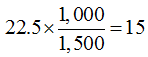
7. 土地登記之實質審查v.s.形式審查¶
發布日期: 2020-01-22
各位同學好
實質審查及形式審查之意涵與審查事項予以分別說明如下：
-
實質審查
-
意涵：登記機關於審查登記案件時，除應就法定程序、文件等要件進行形式上審查外，須再就權利義務之真偽進行實質內容審查。
-
審查事項：包含申請登記事項是否真實，有無違反法律之強制或禁止規定，附具文件有無虛偽，以及是否有管轄權，申請人是否適格、權利能力、行為能力等，皆應予以審查。
-
形式審查
-
意涵：指登記機關於審查登記案件時，僅針對依法所規定的形式要件進行審查，而不論各當事人之權利義務發生原因、事實等加以審查。
2. 審查事項：包含登記機關是否有管轄權、是否具有申請登記資格、所提書圖文件是否完備且內容是否符合格式規定。¶
注：本文圖片存放於 ./images/ 目錄下
8. 土地法第104條實例研習¶
發布日期: 2020-01-22
甲有一筆A地，先將右半部分設定地上權予乙，乙隨即興建合法建物一棟；再將左半部分設定地上權予丙，丙隨即興建違章建築一棟。今甲擬將A地全部出售於丁，則何人有優先購買權？若A地由乙優先購買，則乙之地上權及丙之地上權是否消滅？
【解答】
• (一) 土地法第104條第1項規定：「基地出賣時，地上權人、典權人或承租人有依同樣條件優先購買之權。房屋出賣時，基地所有權人有依同樣條件優先購買之權。其順序以登記之先後定之。」地上權人、典權人或承租人須於基地上有房屋建築存在，始有土地法第104條之適用；至於該房屋為合法建物或違章建築，則非所問。本題乙、丙二人均於基地上有房屋建築，因此，乙、丙二人均有優先購買權。又，乙之地上權登記在先，丙之地上權登記在後，故乙之優先購買權優先於丙之優先購買權而行使。
• (二) 民法第762條規定；「同一物之所有權及其他物權，歸屬於一人者，其他物權因混同而消滅。但其他物權之存續，於所有人或第三人有法律上之利益者，不在此限。」準此，A地由乙優先購買，則乙之地上權因混同，辦竣塗銷登記而消滅。然，丙之地上權仍存在，不受影響。¶
注：本文圖片存放於 ./images/ 目錄下
9. 民法第759條及土地法第43條之實例研習¶
發布日期: 2020-01-30
甲於乙之房地設定典權，典價100萬元，典權期限10年。嗣典權期限屆至後，經過2年，出典人乙始終不回贖，則甲於辦竣取得典物所有權登記前，是否已取得該房地所有權？今乙趁甲尚未辦竣取得典物所有權登記之際，將登記於其名下之房地出售並移轉登記於不知情的丙，則甲訴請法院判決塗銷丙之所有權登記，是否可行？
【解答】
• (一) 民法第923條規定：「典權定有期限者，於期限屆滿後，出典人得以原典價回贖典物。出典人於典期屆滿後，經過二年，不以原典價回贖者，典權人即取得典物所有權。」又，同法第759條規定：「因繼承、強制執行、徵收、法院之判決或其他非因法律行為，於登記前已取得不動產物權者，應經登記，始得處分其物權。」準此，典權期限屆至後，經過2年，出典人乙不回贖，典權人甲即取得該房地所有權。又，甲之取得係依據法律規定（即依據民法第923條規定），而非因法律行為，故於辦竣取得典物所有權登記前，甲已取得該房地所有權。
• (二) 該房地之登記名義人為乙，但真正權利人為甲。土地法第43條規定：「依本法所為之登記，有絕對效力。」準此，善意第三人丙因信賴登記所取得之權利，具有不可推翻之效力。甲訴請法院判決塗銷丙之所有權登記，為不可行。¶
注：本文圖片存放於 ./images/ 目錄下
10. 登記機關處理程序應進行公告之登記類型¶
發布日期: 2020-02-06
各位同學好
本次專欄為各位同學整理有關辦理土地登記時，其登記機關處理程序應進行公告之登記類型：
※應辦理公告之登記類型：
-
土地總登記。（15日）
-
土地所有權第一次登記。（15日）
-
建物所有權第一次登記。（15日）
-
時效取得登記：
-
所有權（15日）
-
地上權、不動產役權、農育權（30日）
-
書狀補給登記。（30日）
-
其他法令規定者。
其相關法源依據如下：
-
土地總登記：登記機關對審查證明無誤之登記案件，應公告15日(土登§72)。包含時效取得所有權者。
-
土地所有權第一次登記：土地總登記後，未編號登記之土地，因地籍管理，必須編號登記者，其登記程序準用土地總登記之程序辦理(土登§77)。經審查證明無誤應即公告，公告期間為15日(土登§72)。
-
建物所有權第一次登記：建物所有權第一次登記，除本節規定者外，準用土地總登記程序(土登§84)。經審查證明無誤應即公告，公告期間為15日(土登§72)。
-
時效取得地上權（不動產役權、農育權）：
-
土地總登記後，因主張時效完成申請地上權登記時，應提出以行使地上權意思而占有之證明文件及占有土地四鄰證明或其他足資證明開始占有至申請登記時繼續占有事實之文件。
-
前項登記之申請，經登記機關審查證明無誤應即公告。公告期間為30日，並同時通知土地所有權人。土地所有權人在前項公告期間內，如有異議，依土地法第59條第2項規定處理。
-
前四項規定，於因主張時效完成申請不動產役權、農育權登記時準用之。(土登§118)
-
書狀補給登記：申請土地所有權狀或他項權利證明書補給時，應由登記名義人敘明其滅失之原因，檢附切結書或其他有關證明文件，經登記機關公告30日，並通知登記名義人，公告期滿無人提出異議後，登記補給之。(土登§155I)
-
其他法令規定者：
-
土地法：逾（土地總登記）登記期限無人聲請登記之土地或經聲請而逾限未補繳證明文件者，其土地視為無主土地，由該管直轄市或縣(市)地政機關公告之，公告期滿，無人提出異議，即為國有土地之登記(土法§57)。依第57條所為公告，不得少於30日(土法§58)。
2. 地籍清理條例：登記機關受理申請登記，經審查無誤者，除第19條至第26條（神明會土地）及第34條至第39條（寺廟或宗教團體土地）規定之土地應即辦理登記外，其餘土地應即公告3個月。(地清§8)¶
注：本文圖片存放於 ./images/ 目錄下
11. 代為扣交與代為清償之實例研習¶
發布日期: 2020-02-06
甲有一筆A地，A地上有設定在先之乙的抵押權（債權額700萬元）及成立在後之丙的三七五租約。今政府實施土地徵收，並以市價查估補償900萬元，則政府應如何代為扣交及代為清償？
【解答】
• (一) 平均地權條例施行細則第46條第3項：「照價收買土地設有抵押權者，如其設定登記在耕地租約訂立之前，該抵押權人應優先於耕地承租人受償。」同理，土地徵收亦應適用。故政府應先代為清償（抵押權），再代為扣交（三七五租約）。
• (二) 土地徵收條例第36條規定，被徵收之土地或建築改良物原設定之他項權利因徵收而消滅。其款額計算，該管直轄市或縣（市）主管機關應通知當事人限期自行協議，再依其協議結果代為清償；協議不成者，其補償費存入專戶保管。因此，政府應代為清償700萬元予抵押權人乙。
• (三) 平均地權條例第11條第1項及第2項規定：「依法徵收或照價收買之土地為出租耕地時，除由政府補償承租人為改良土地所支付之費用，及尚未收穫之農作改良物外，並應由土地所有權人，以所得之補償地價，扣除土地增值稅後餘額之三分之一，補償耕地承租人。前項補償承租人之地價，應由主管機關於發放補償或依法提存時，代為扣交。」準此，政府原應補償三七五租約承租人300萬元（即[圖片1]，土地徵收免徵土地增值稅），然代為清償抵押權後之餘額只剩200萬元，故政府應代為扣交200萬元予三七五承租人丙。
文章圖片¶
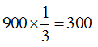
12. 土地登記(強制登記)之目的¶
發布日期: 2020-02-13
各位同學好
有關我國強制辦理土地登記之目的或意義，茲說明如下：
• (一) 整理地籍：地籍整理之程序，為地籍測量及土地登記(土§36)。辦理土地登記前，應先辦地籍測量(土§38)。因此，土地登記為整理地籍(即建立土地各項基本資料)的必要行政程序。
• (二) 確定產權：不動產物權，依法律行為而取得、設定、喪失及變更者，非經登記，不生效力(民§758)。因繼承、強制執行、徵收、法院之判決或其他非因法律行為，於登記前已取得不動產物權者，應經登記，始得處分其物權(民§759)。不動產物權經登記者，推定登記權利人適法有此權利。因信賴不動產登記之善意第三人，已依法律行為為物權變動之登記者，其變動之效力，不因原登記物權之不實而受影響(民§759-1)。因此，土地登記有強制性，藉此確定產權，並確保對外公信力。
• (三) 便利處分：任何人得申請第二類之土地登記及地價資料；登記名義人、具有法律上通知義務或權利義務得喪變更關係之利害關係人得申請第三類之土地登記及地價資料(土登§24-1)。透過申請閱覽登記簿，即可確知登記事實與內容，加上登記有絕對效力(土§43)，確保交易安全，故使處分得以迅速完成。
• (四) 規定地價：土地所有權人聲請登記而不同時申報地價者，以標準地價為法定地價(土§158)。土地所有權人依本法所申報之地價，為法定地價(土§148)。我國辦理土地登記同時須辦理規定地價，以作為平均地權之照價徵稅、漲價歸公與照價收買之依據。
• (五) 公平稅負：每直轄市或縣（市）辦理地價申報完竣，應即編造地價冊及總歸戶冊，送該管直轄市或縣（市）財政機關(土§159)。亦即土地登記之地籍資料係作為地方課稅的依據。
• (六) 推行土地改革：地籍整理是指查明各宗土地的位置、界址、種類、面積、使用狀況及權屬關係，並記載於書表簿冊圖狀。其目的在於建立地籍制度，明瞭土地狀況，確定土地權利，而為課徵土地稅及實施土地政策之依據。因此，透過土地登記可明瞭土地分配及利用情形，透過相關政策實施，達成地盡其利、地利共享之目標。如過去推行三七五減租、公地放領、耕者有其田等平均地權政策，至現今土地徵收、國土計畫等，皆以地籍資料完備為主要前提。¶
注：本文圖片存放於 ./images/ 目錄下
13. 結合土地法第34條之1與土地法第104條之實例研習¶
發布日期: 2020-02-13
甲、乙二人共有A地一筆，甲應有部分十分之七，乙應有部分十分之三。甲、乙二人合意將A地出租於丙建築房屋使用。經簽訂土地租賃契約後，丙即於A地上興建別墅一棟。近因甲急需現金周轉，未經乙同意將A地全部出售於丁，是否可行？如甲會同丁向登記機關申請辦理買賣所有權移轉登記，應提出那些文件？
【解答】
• (一) 土地法第34條之1第1項規定：「共有土地或建築改良物，其處分、變更及設定地上權、農育權，不動產役權或典權，應以共有人過半數及其應有部分合計過半數之同意行之。但其應有部分合計逾三分之二者，其人數不予計算。」準此，甲之持分為十分之七，已逾三分之二，甲未經乙同意，將A地出售於丁，為可行。又，土地法第34條之1第4項規定：「共有人出賣其應有部分時，他共有人得以同一價格共同或單獨優先承購。」準此，乙有優先購買權（此優先購買權具有債權效力）。另，土地法第104條規定：「基地出賣時，地上權人、典權人或承租人有依同樣條件優先購買之權。房屋出賣時，基地所有權人有依同樣條件優先購買之權。其順序以登記之先後定之。前項優先購買權人，於接到出賣通知後十日內不表示者，其優先權視為放棄。出賣人未通知優先購買權人而與第三人訂立買賣契約者，其契約不得對抗優先購買權人。」準此，丙有優先購買權（此優先購買權具有物權效力）。
• (二) 乙之優先購買權具有債權效力，丙之優先購買權具有物權效力。二者競合時，丙之優先購買權優先於乙而行使。
• (三) 土地登記規則第97條規定：「申請土地權利移轉登記時，依民法物權編施行法第八條之五第三項、第五項、土地法第三十四條之一第四項、農地重劃條例第五條第二款、第三款或文化資產保存法第三十二條規定之優先購買權人已放棄優先購買權者，應附具出賣人之切結書，或於登記申請書適當欄記明優先購買權人確已放棄其優先購買權，如有不實，出賣人願負法律責任字樣。依民法第四百二十六條之二、第九百十九條、土地法第一百零四條、第一百零七條、耕地三七五減租條例第十五條或農地重劃條例第五條第一款規定，優先購買權人放棄或視為放棄其優先購買權者，申請人應檢附優先購買權人放棄優先購買權之證明文件；或出賣人已通知優先購買權人之證件並切結優先購買權人接到出賣通知後逾期不表示優先購買，如有不實，願負法律責任字樣。依前二項規定申請之登記，於登記完畢前，優先購買權人以書面提出異議並能證明確於期限內表示願以同樣條件優先購買或出賣人未依通知或公告之條件出賣者，登記機關應駁回其登記之申請。」準此，甲會同丁向登記機關申請辦理A地之所有權買賣移轉登記，即表示乙、丙二人放棄優先購買權。
• (四) 買賣所有權移轉登記應提出下列文件：
-
登記申請書，應列明全體共有人及於登記申請書備註欄記明依土地法第34條之1第1項至第3項規定辦理。登記申請書無須不同意共有人簽名或蓋章。
-
契約書，指公定契約書。契約書應列明全體共有人，契約書無須不同意共有人簽名或蓋章。
-
土地所有權狀；但不同意共有人之土地所有權狀得免提出。
-
身分證明文件，提出申請人之身分證、戶口名簿或戶籍謄本。
-
已為書面通知或公告之證明文件。
-
他共有人應得對價或補償已受領或已提存之證明文件。
-
優先購買權人乙放棄優先購買權者，應附具出賣人之切結書，或於登記申請書適當欄記明優先購買權人確已放棄其優先購買權，如有不實，出賣人願負法律責任字樣。
8. 優先購買權人丙放棄或視為放棄其優先購買權者，申請人應檢附優先購買權人放棄優先購買權之證明文件；或出賣人已通知優先購買權人之證件並切結優先購買權人接到出賣通知後逾期不表示優先購買，如有不實，願負法律責任字樣。¶
注：本文圖片存放於 ./images/ 目錄下
14. 公有土地參加重劃，是否須依土地法第25條規定經行政院核准始得處分？¶
發布日期: 2020-02-20
各位同學好
今日專欄說明有關「公有土地參加重劃，是否須依土地法第25條規定經行政院核准始得處分？」
首先，土地法第25條規定：「直轄市或縣(市)非經該管區內民意機關同意，並經行政院核准，不得處分或設定負擔或為超過十年期間之租賃」
公有土地參加重劃，是否須依土地法第25條規定經行政院核准始得處分，此問題主要在於所謂的「處分」意涵為何？
所謂處分係指基於土地所有權人自己之意思，使權利發生變更之行為。公有土地之處分如非屬公有土地管理機關以自己意思使權利發生變更之處分行為，參照司法院第232號解釋，當無土地法第25條之適用。因此，公有土地參加依平均地權條例第五十八條之土地所有權人自行組織重劃會辦理市地重劃，其實質意義與主管機關依同條例第五十六條辦理市地重劃，而將公有土地核定屬重劃區範圍予以重劃同，係為實現憲法平均地權之政策而設，並非土地所有權人以自己之意思使權利發生變更之處分行為，自無土地法第二十五條之適用。¶
注：本文圖片存放於 ./images/ 目錄下
15. 山坡地保育區、山坡地與原住民保留地¶
發布日期: 2020-02-20
法規可能已修正
本文發布（2020-02-20）後，文中引用的 非都市土地使用管制規則第9條（2021-10-13 修正）有修正，內容可能與現行規定不同，請以全國法規資料庫的現行條文為準。
• (一) 山坡地保育區：
非都市土地之分區種類共11種，其中一種分區為山坡地保育區。所稱山坡地保育區，指為保護自然生態資源、景觀、環境，與防治沖蝕、崩塌、地滑、土石流失等地質災害，及涵養水源等水土保育，依有關法規，會同有關機關劃定者（區域計畫法施行細則§11⑥）。
供山坡地保育區內建築使用者，編定為丙種建築用地（區域計畫法施行細則§13Ⅰ③）。丙種建築用地之建蔽率不得超過40%，容積率不得超過120%，但直轄市或縣（市）政府得視實際需要酌予調降（非都市土地使用管制規則§9Ⅰ③）。
• (二) 山坡地：
-
意義：所稱山坡地，係指國有林事業區、試驗用林地及保安林地以外，經中央或直轄市主管機關參照自然形勢、行政區域或保育、利用之需要，就合於下列情形之一者劃定範圍，報請行政院核定公告之公、私有土地：
-
標高在一百公尺以上者。
-
標高未滿一百公尺，而其平均坡度在百分之五以上者。（山坡地保育利用條例§3）
基此，標高在100公尺以上，不問坡度大小，均屬於山坡地。標高未滿100公尺，平均坡度在5%以上，始屬於山坡地。所稱5%，意謂[圖片1]，如圖山坡地剖面所示。[圖片2]
-
山坡地與山坡地保育區之比較：
-
山坡地之劃定及管制依據山坡地保育利用條例及其施行細則，山坡地保育區之劃定及管制依據區域計畫法及其施行細則、非都市土地使用管制規則。
-
山坡地之保育與利用由農業發展委員會主管，山坡地保育區之土地使用由內政部主管。
-
山坡地存在於都市土地，亦存在於非都市土地。山坡地保育區僅存在於非都市土地。
-
山坡地保育區內之山坡地，除受到非都市土地使用管制規則之約束外，復受到山坡地保育利用條例之約束。此種管制方式稱為重疊土地使用管制。
總之，山坡地與山坡地保育區之範圍並非一致。因此有的土地屬於山坡地，但非屬於山坡地保育區；有的土地屬於山坡地保育區，但非屬於山坡地；有的土地屬於山坡地保育區，亦屬於山坡地。
-
山坡地之水土保持：在山坡地為下列經營或使用，其土地之經營人、使用人或所有人，於其經營或使用範圍內，應實施水土保持之處理與維護︰
-
宜農、牧地之經營或使用。
-
宜林地之經營、使用或採伐。
-
水庫或道路之修建或養護。
-
探礦、採礦、採取土石、堆積土石或設置有關附屬設施。
-
建築用地之開發。
-
公園、森林遊樂區、遊憩用地、運動場地或軍事訓練場之開發或經營。
-
墳墓用地之開發或經營。
-
廢棄物之處理。
-
其他山坡地之開發或利用。（山坡地保育利用條例§9）
-
山坡地之開發建築：建築技術規則第262條第3項規定，山坡地之平均坡度超過55%者，不得計入法定空地面積；其平均坡度超過30%且未逾55%者，得作為法定空地或開放空間使用，不得配置建築物。但因地區之發展特性或特殊建築基地之水土保持處理與維護之需要，經直轄市、縣（市）政府另定適用規定者，不在此限。依據上開但書規定，台北市都市計畫劃定山坡地開發建築管制規定第2點，基地內原自然地形平均坡度超過30%者，除屬排水、截水溝或滯洪、沉砂及擋土安全之水土保持設施外，不得開挖整地及作為建築使用，亦不得計入檢討建蔽率及容積率，但得計入開發面積。綜上，以台北市及新北市山坡地為例，其開發建築比較如下：
-
台北市山坡地之平均坡度超過30%，不得建築使用，亦不得計入法定空地面積。
-
新北市山坡地之平均坡度超過30%，未超過55%，不得建築使用，但得計入法定空地面積。平均坡度超過55%，不得建築使用，亦不得計入法定空地面積。
-
北市山坡地之開發建築管制較新北市嚴格。
• (三) 原住民保留地：
-
意義：所稱原住民保留地，指為保障原住民生計，推行原住民行政所保留之原有山地保留地及經依規定劃編、增編供原住民使用之保留地。（原住民保留地開發管理辦法§3）。
-
原住民保留地之處理
-
山坡地範圍內原住民保留地，除依法不得私有外，應輔導原住民取得承租權或無償取得所有權。
-
原住民取得原住民保留地所有權，如有移轉，以原住民為限。
-
有下列情形之一者，得由政府承受私有原住民保留地：
-
興辦土地徵收條例第3條、第4條第1項規定之各款事業及所有權人依該條例第8條規定申請一併徵收。
-
經中央原住民族主管機關審認符合災害之預防、災害發生時之應變及災後之復原重建用地需求。
-
稅捐稽徵機關受理以原住民保留地抵繳遺產稅或贈與稅。
-
因公法上金錢給付義務之執行事件未能拍定原住民保留地。
-
政府依前項第三款及第四款規定承受之原住民保留地，除政府機關依法撥用外，其移轉之受讓人以原住民為限。（山坡地保育利用條例§ⅠⅡⅢⅣ）
-
原住民無償取得土地面積之最高額：原住民申請無償取得原住民保留地所有權，土地面積最高限額如下：
-
依區域計畫法編定為農牧用地、養殖用地或依都市計畫法劃定為農業區、保護區，並供農作、養殖或畜牧使用之土地，每人1公頃。
-
依區域計畫法編定為林業用地或依都市計畫法劃定為保護區並供作造林使用之土地，每人1.5公頃。
-
依法得為建築使用之土地，每戶0.1公頃。
-
其他用地，其面積由中央主管機關視實際情形定之。（原住民保留地開發管理辦法§10）
文章圖片¶


16. 土地法第104條優先購買權之實例研習(一)¶
發布日期: 2020-02-27
甲有一筆建地，等分為三部分，先將右邊部分出租於乙，乙隨即興建一棟建物；再將中間部分設定地上權於丙，丙隨即興建一棟建物；最後將左邊部分設定典權於丁，丁隨即興建一棟建物。不久，甲因經商失敗，需款孔急，擬將該筆土地全部出售於戊。此時，丙主張其優先購買權優先於乙及丁，其理由如下：
• (一) 優先於乙之理由：
-
乙成立租賃權，租賃權屬於債權。丙成立地上權，地上權屬於物權。物權效力優於債權，因此，丙之優先購買權優先於乙。
-
乙成立租賃權，租賃權屬於債權，故乙之優先購買權僅具債權效力。丙成立地上權，地上權屬於物權，故丙之優先購買權具有物權效力。二者競合時，物權效力之優先購買權優先於債權效力之優先購買權。
• (二) 優先於丁之理由：依據土地法第104條第1項所稱「其順序以登記之先後定之」，丙之地上權登記在先，丁之典權登記在後，因此丙之優先購買權優先於丁。
試評論上開理由是否正確？
【解答】
• (一) 優先於乙之理由為錯誤：土地法第104條之優先購買權具有物權效力，不因所成立者為租賃權（屬於債權）或地上權（屬於物權）而有所影響。又，優先購買權之效力，非依其成立之法律關係為債權即為債權效力，為物權即為物權效力，而是依其法條之立法精神，如有「其契約或移轉不得對抗優先購買權人」，則為物權效力，否則為債權效力。
• (二) 優先於丁之理由為正確：土地法第104條規定，以登記先後定其優先順序。因租賃屬於債權，無登記可言，故租賃以成立日期與物權之登記日期定其優先順序。本題，丙之地上權登記在先，丁之典權登記在後，因此丙之優先購買權優先於丁。
• (三) 結論：甲擬將該土地出售於戊，則乙、丙、丁三人均有優先購買權，其優先購買順序為乙、丙、丁。¶
注：本文圖片存放於 ./images/ 目錄下
17. 跨縣市收辦土地登記¶
發布日期: 2020-02-27
各位同學好
去年已開始試辦跨縣市收辦土地登記，其相關內容，地政士與高普考同學要特別注意，相關重要內容提醒如下：
104年開始全國均已實施同一縣市跨地政事務所收辦土地登記。108年10月開始試辦跨縣市收辦土地登記，也就是台中市的案件可以拿到台北市某地政事務所申請，並且由受理的台北市某地政事務所直接審查辦理完成。但注意目前限於以下幾種登記項目：(一)住址變更登記。(二)更名登記（以戶政機關有更名記事者為限）。(三)書狀換給登記（以一般權利書狀損壞申請書狀換給者為限）。(四)門牌整編登記。(五)更正登記（以姓名、出生日期、身分證統一編號、住址或門牌等錯誤，經戶政機關更正有案者為限）。(六)預告登記。(七)塗銷預告登記。
但倘若有以下情形，則不能跨縣市收辦，只可以由該地政事務所代收，幫忙郵寄至管轄地政事務所辦理完成後再寄回：(一)檢附資料為重測、重劃、逕為分割前之原權利書狀。(二)登記名義人為無統一編號或統一編號為流水編。(三)屬祭祀公業條例或地籍清理條例公告清理之標的。(四)土地或建物所有權部其他登記事項欄註記有欠繳相關費用情形。(五)屬信託財產之標的。¶
注：本文圖片存放於 ./images/ 目錄下
18. 信託與委任之差異¶
發布日期: 2020-03-05
各位同學好
信託與委任有其相似性，今日專欄茲整理比較如下：
信託與委任之差異
| 面向 | 信託 | 委任 |
|---|---|---|
| 面向 | 信託 | 委任 |
| 定義 | 稱信託者，謂委託人將財產權移轉或為其他處分， 使受託人依信託本旨，為受益人之利益或為特定之目的， 管理或處分信託財產之關係(信§1) |
稱委任者，謂當事人約定，一方委託他方處理事務， 他方允為處理之契約(民§528) |
| 法源依據 | 信託法 | 民法 |
| 財產移轉 | 委託人須將財產權移轉或為其他處分給受託人 信託標的 如為不動產，則需辦理信託登記， 將不動產登記於受託人名下， 但受託人僅為名義所有權人， 而受益人則為實質所有權人 |
委任人無須移轉財產權於受任人 受任人管理之財產仍屬 委任人所有，委任關係存續中， 委任人未必喪失對其財產之管理處分權限 受任人管理或 處分該財產之效果，直接歸屬委任人 |
| 財產處分 | 以本人名義管理財產 | 以他人名義管理財產 |
| 關係人 | 委託人、受託人、受益人、監察人 | 委任人、受任人 |
| 相互關係 | 應予公示 非經信託登記，不得對抗第三人 | 內部關係 |
| 消滅 | 信託關係不因委託或受託人死亡、 破產或喪失行為能力而消滅 |
委任關係，因當事人一方死亡、 破產或喪失行為能力而消滅(民§550) |
| 強制執行 | 原則上不得強制執行 | 得強制執行 |
注：本文圖片存放於 ./images/ 目錄下
19. 土地法第104條優先購買權之實例研習(二)¶
發布日期: 2020-03-05
甲有一筆建地，等分為三部分，先將右邊部分設定地上權於乙，乙隨即興建房屋一棟；再將中間部分設定地上權於丙，丙隨即興建房屋一棟；最後將左邊部分設定地上權於丁，丁隨即興建房屋一棟。不久，甲趁房地產高漲，擬將該筆土地全部出售於戊。此時，乙、丙、丁三人協議就各自占有部分同時主張優先購買，是否可行？
【解答】
• (一) 乙、丙、丁三人就各自占有部分同時主張優先購買，雖然可以達成各自之房屋與其基地所有權合一。然，土地登記規則第108條規定：「於一宗土地內就其特定部分申請設定地上權、不動產役權、典權或農育權登記時，應提出位置圖。因主張時效完成，申請地上權、不動產役權或農育權登記時，應提出占有範圍位置圖。前二項位置圖應先向該管登記機關申請土地複丈。」準此，該筆土地經過土地複丈以界定各地上權之使用範圍，惟該筆土地並未經過土地分割，故只有一個地號，而非三個地號。無法就一個地號同時移轉於各優先購買權人單獨所有。
• (二) 土地法第104條規定，優先購買權人有依同樣條件優先購買之權。換言之，優先購買權人應依甲將該筆土地「全部」出售於戊之同樣條件主張優先購買，而非「乙優先購買該筆土地之右邊部分，丙優先購買該筆土地之中間部分，丁優先購買該筆土地之左邊部分」。
• (三) 依土地法第104條之立法意旨，應由各優先購買權人之其中一人優先購買，而非各優先購買權人優先購買各自占有部分。因此，有明定優先購買順序之必要。據此，土地法第104條明文規定以登記先後定其優先順序。本題，甲擬將該土地出售於戊，則乙、丙、丁三人均有優先購買權，其優先購買順序為乙、丙、丁。¶
注：本文圖片存放於 ./images/ 目錄下
20. 土地法第34條之1第1項多數決之性質¶
發布日期: 2020-03-12
各位同學好
今日專欄為各位說明有關土地法第34條之1第1項多數決之性質
先參考105年不動產經紀人選擇題第14題：
甲、乙、丙等三人公同共有A屋，甲與乙擅自於105年8月8日將A屋出賣於丁。下列敘述何者錯誤？(A)如採處分權說，且甲與乙債務不履行，則丙亦應負損害賠償責任(B)如採代理權說，則丙應負擔法律關係上出賣人的義務與責任答案是(A)錯。
究竟少數共有人(他共有人)對於多數決出賣契約是否應負責任，兩說有所不同：
• A. 代理權說(34-1執行要點、最高法院83台上1761判決)
-
法定代理權：源於法律所賦予之代理權，代理他共有人處分行為。即取得未同意共有人之法定代理權而為締約。
-
其法律效果歸屬本人，亦即被迫加入債權契約，應負法律關係上出賣人義務與責任。
-
交易相對人亦得以未同意之共有人為被告，請求履行買賣契約之內容。
• B. 處分權說(最高法院87台上866判決、88台上1703判決)
-
處分權乃基於實體法規定而生，並非代理未同意出賣共有人與買受人訂立買賣契約。
-
買賣契約屬債權契約，不以有處分權為必要，故未得他共有人同意，買賣契約當然有效，但契約對未同意之他共有人無拘束力。
3. 未同意出售之共有人並未與買受人訂立買賣契約，自不能因其應有部分一併出售並移轉與買受人，且得領取買賣價金，而謂與買受人間有買賣關係存在。即不存在買賣關係。¶
注：本文圖片存放於 ./images/ 目錄下
21. 土地法第104條優先購買權之實例研習(三)¶
發布日期: 2020-03-12
甲有一筆建地，其中一部分土地為建成地，地上有一棟透天房屋，甲僅將其建物出售於乙，但其基地未出售。另一部分土地為未建成地，甲將其設定地上權於丙，丙隨即興建一棟建物。乙購買建物在先，丙設定地上權在後。不久，甲擬將該筆土地全部出售於丁，請問何人有優先購買權？如多人主張優先購買時，如何處理？
【解答】
• (一) 建成地：民法第425條之1規定：「土地及其土地上之房屋同屬一人所有，而僅將土地或僅將房屋所有權讓與他人，或將土地及房屋同時或先後讓與相異之人時，土地受讓人或房屋受讓人與讓與人間或房屋受讓人與土地受讓人間，推定在房屋得使用期限內，有租賃關係。其期限不受第四百四十九條第一項規定之限制。前項情形，其租金數額當事人不能協議時，得請求法院定之。」準此，甲保留基地而僅將建物出售於乙，則甲與乙之間推定有租賃關係。又土地法第104條第1項規定，基地出賣時，承租人有依同樣條件優先購買之權。因此，甲擬將該筆土地全部出售於丁，乙有優先購買權。
• (二) 未建成地：甲將該筆土地之未建成地部分設定地上權於丙，丙隨即興建一棟建物。依土地法第104條第1項規定，基地出賣時，地上權人有依同樣條件優先購買之權。因此，甲擬將該筆土地全部出售於丁，丙有優先購買權。
• (三) 優先順序：乙、丙二人均有優先購買權。如二人皆主張優先購買，則依土地法第104條第1項規定，其順序以登記之先後定之。因債權無須辦理登記，即生效力，故債權以成立先後定之。本題，乙購買建物在先，丙設定地上權在後，因此乙之優先購買權之行使優先於丙之優先購買權。¶
注：本文圖片存放於 ./images/ 目錄下
22. 共有優先購買要件之案例解析(一)¶
發布日期: 2020-03-19
各位同學好
今日專欄來探討土地法第34條之1第4項有關共有優先購買權之相關概念。首先，假設案例如下：甲乙丙三人分別共有A地，各自應有部分為1/3，今甲將其應有部分（1/3）出賣給K，並已訂定契約完畢，而該契約訂價為100萬元。甲隨之通知乙、丙二人該契約價金與相關條件，詢問其是否主張優先購買，乙即表示願意優先承購。然而，甲不願被乙優先購買，爰與第三人合意解除契約，並且擇日又再次訂定更高價契約1000萬元，再次詢問乙、丙，兩人皆表示無力購買。
試問：究竟經優先購買權人主張優先購買後，出賣人隨即與第三人合意解除原契約，該優先購買權是否一併無效？是否得以藉此測試優先購買權人底限，當其無力購買時，再以該價格出售，以避免被其優先購買？
思考：
• (一) 肯定說：原契約無效則優先購買權無效
-
實務上，有人係以當優先購買權人主張優先購買時，破解招數就是解除與第三人契約，使優先購買權人無法以該無效契約進行主張。而後再將契約價金提高至優先購買權人無力購買時，再予出售。
-
理論上，以土地法第34條之1的優先購買權要件而言，須以共有人有效出賣其應有部分與第三人為基礎，苟共有人與第三人間之出賣行為根本無效，亦即自始不存在，則所謂優先購買權即無從發生。(65年台上字第2113號判例、104年台上字第1573號判決)
• (二) 否定說：原契約無效並不影響已另行成立的優先購買契約
其主張優先購買權為形成權，即優先購買權人向應有部分之出賣人為優先購買之意思表事實，兩人買賣關係旋即成立，亦即契約關係已重新成立於出賣人與優先購買權人，自無法由出賣人與第三人再予解除之餘地。
相關概念可參考84年台上字第2134號：土地法第三十四條之一第四項所定之他共有人優先承購權，固應以共有人「有效」出賣其應有部分與第三人為基礎。惟如共有人與第三人間之買賣契約已合法存在，於他共有人主張優先購買權後，出賣之共有人與第三人為避免他共有人之行使優先承購，始合意解除買賣契約者，該「合意解除」既在他共有人單獨為「優先承購」之意思表示而行使其優先承購之形成權之後，則共有人與第三人間之原有權利義務關係已有變更，能否再任由渠等合意解除契約，以規避上開法律所定他共有人所得行使之優先承購權之適用﹖非無疑義。¶
注：本文圖片存放於 ./images/ 目錄下
23. 土地法第104條優先購買權之實例研習(四)¶
發布日期: 2020-03-19
甲有一筆建地，其中一部分土地為未建成地，甲將其設定地上權於乙，乙隨即興建一棟建物。另一部分土地為建成地，地上有一棟透天房屋，甲僅將其建物設定抵押權於丙，但其基地未一併設定抵押權，經拍賣由丁拍定而取得建物所有權。乙設定地上權在先，丙設定抵押權在後。不久，甲擬將該筆土地全部出售於戊，請問何人有優先購買權？如多人主張優先購買時，如何處理？
【解答】
• (一) 未建成地：甲將該筆土地之未建成地部分設定地上權於乙，乙隨即興建一棟建物。依土地法第104條第1項規定，基地出賣時，地上權人有依同樣條件優先購買權。因此，甲擬將該筆土地全部出售於戊，乙有優先購買權。
• (二) 建成地：民法第876條第1項規定：「設定抵押權時，土地及其土地上之建築物，同屬於一人所有，而僅以土地或僅以建築物為抵押者，於抵押物拍賣時，視為已有地上權之設定，其地租、期間及範圍由當事人協議定之。不能協議者，得聲請法院以判決定之。」準此，甲僅將建物設定抵押權於丙，經拍賣由丁取得建物所有權，則視為丁已有地上權之設定，此種地上權稱為法定地上權。又土地法第104條第1項規定，基地出賣時，地上權有依同樣條件優先購買之權。因此，甲擬將該筆土地全部出售於戊，丁有優先購買權。
• (三) 優先順序：乙、丁二人均有優先購買權。如二人皆主張優先購買，則依土地法第104條第1項規定，其順序以登記之先後定之。又，乙之優先購買權係基於意定地上權，意定地上權須登記始生效力。丁之優先購買權係基於法定地上權，法定地上權無須登記，即生效力。法定地上權所衍生之優先購買權未必優先於意定地上權所衍生之優先購買權，應視法定地上權與意定地上權之成立或登記之先後定之。因此，意定地上權以登記日期定其優先順序，法定地上權以成立日期定其優先順序。本題，意定地上權在先，法定地上權在後，因此乙之優先購買權之行使優先於丁之優先購買權。¶
注：本文圖片存放於 ./images/ 目錄下
24. 共有優先購買要件之案例解析(二)¶
發布日期: 2020-03-26
各位同學好
本次談談土地法第34條之1，有關共有優先購買要件中，出賣人通知優先購買權人於10日內表示是否優先購買之情形，予以說明：
[主要問題點]甲乙丙三人分別共有一A地，三人應有部分均等，甲今欲出賣其應有部分時，是否有主動通知乙及丙之義務？是否需等待兩人回覆後，方得出售？
[討論]
問題1：徵詢他共有人是否優先購買是否屬出賣人之義務？共有人出賣應有部分時，對他共有人有無通知義務，法無明定，惟他共有人既有優先購買權，則在解釋上自應解為出賣人負有通知之義務。且為使他共有人得以同樣條件購買，故應將其與第三人所訂買賣契約條件全部告知，不得僅以買賣土地之事實通知，即謂已盡通知之義務(最高法院85台上第2118號判決)
問題2：該徵詢究竟屬於「要約」或是「意思通知」？兩者性質及效果有何不同？徵詢他共有人是否優先承購，為意思通知，旨在促請他共有人行使優先承購權。他共有人如已行使其優先承購之形成權，則原有之權利義務即已變更。(83年台上字第3025號民事判決)。換言之，徵求他共有人是否優先承購與向他人為出賣之要約，其性質及法律上之效果均不相同。前者為意思通知，旨在促請他共有人行使優先承購權，他共有人如未於限期內行使優先承購權，即生失權之效果；後者為意思表示，旨在與要約之受領人訂立一定之契約，要約之受領人如不為承諾，契約即無由成立。(78年度台上字第1896號判決)¶
注：本文圖片存放於 ./images/ 目錄下
25. 債權性質優先購買權與物權性質優先購買權之比較¶
發布日期: 2020-03-26
優先購買權分為債權性質優先購買權與物權性質優先購買權二種。債權性質優先購買權，亦稱債權效力優先購買權；物權性質優先購買權，亦稱物權效力優先購買權。兩者不同如下：
• (一) 法律效果不同：債權性質優先購買權具有債權效力，即出賣人未通知優先購買權人而為所有權之移轉登記，其移轉行為仍然有效，此時優先購買權人僅得向出賣人請求損害賠償。物權性質優先購買權具有物權效力，即出賣人未通知優先購買權人而為所有權之移轉登記，優先購買權人得主張移轉行為無效。另，債權性質優先購買權與物權性質優先購買權競合時，後者較前者優先行使。
• (二) 法條用詞不同：法條如有「其契約或移轉不得對抗優先購買權人」之類的用詞，則為物權性質優先購買權，否則為債權性質優先購買權。所稱「其契約或移轉不得對抗優先購買權人」，指優先購買權人得主張買賣契約或移轉登記無效；優先購買權人亦得不主張，則買賣契約或移轉登記仍然有效。
• (三) 適用情況不同：債權性質優先購買權之適用情況包括土地法第34條之1、農地重劃條例第5條第2款及第3款、民法物權編施行法第8條之5第3項及第5項等。物權性質優先購買權之適用情況包括土地法第104條、土地法第107條、耕地三七五減租條例第15條、農地重劃條例第5條第1款、民法第919條等。
• (四) 多人主張優先購買之處理方法不同：債權平等原則，無優先性，故債權性質優先購買權，如有多人主張優先購買則以抽籤決定，或按應有部分或專有部分比例定之。物權有優先性，故物權性質優先購買權，如有多人主張優先購買，除法律另有規定外，應依登記先後定其優先順序。
• (五) 移轉登記應備文件不同：債權性質優先購買權，優先購買權人已放棄優先購買權者，應附具出賣人之切結書，或於登記申請書適當欄記明優先購買權人確已放棄其優先購買權，如有不實，出賣人願負法律責任字樣。物權性質優先購買權，優先購買權人放棄或視為放棄其優先購買權者，申請人應檢附優先購買權人放棄優先購買權之證明文件；或出賣人已通知優先購買權人之證件並切結優先購買權人接到出賣通知後逾期不表示優先購買，如有不實，願負法律責任字樣（土地登記規則§97ⅠⅡ）。¶
注：本文圖片存放於 ./images/ 目錄下
26. 共有優先購買要件之案例解析(三)¶
發布日期: 2020-04-01
各位同學好
本週專欄持續為各位同學說明有關優先購買權要件之內容：優先購買權是否能預先拋棄？
[案例]甲與乙分別共有A地，應有部分均等，甲於出賣其應有部分時，乙依土地法第34條之1有優先購買權。然而，試問甲在還未確定出售土地前，乙是否能主動表示預先拋棄優先購買權？亦即因乙確定自己將來無意願或無力購買而預先告知甲將來不需通知，逕為出售即可，是否可以？
[討論]
應可預先拋棄，茲說明如下：
-
查土地法第三十四條之一第四項規定共有人出賣其共有土地或建築改良物之應有部分時，他共有人得以同一價格共同或單獨優先承購，旨在簡化共有關係與公益無關。共有人之優先承買權雖係於他共有人就其應有部分與第三人成立有效之買賣時始發生，但共有人於他共有人即將成立買賣之際，預先拋棄其即可取得之優先承買權，尚非法之所禁。(最高法院80年台上第2529號判決)
-
權利是法律賦予個人享受特定利益的力量，原則上得為拋棄。(王澤鑑教授)
-
優先承買權之存在雖有促進財產之利用或減少紛爭之助益，但同時亦可能有不利交易之疑慮，故除有以定型化契約條款約定預先拋棄優先承買權時應受定型化契約理論之規範者外，自應容許當事人間預先約定拋棄或同意不行使優先承買權，至於當事人間有無此類約定者，除有明示約定者外，依民法第98條解釋意思表示之方式，亦應可由締約目的、財產約定之使用方式綜合判斷或探求之。(林誠二教授)
4. 但應注意先買權之預先拋棄應係指買賣契約成立前即終局放棄先買權之行使，如先買權人僅係陳稱其目前無資力購買，並未明確表示其將來如有資力亦不願購買，也無其他事證足以顯示原告當時確有終局放棄先買權之意，則不應解為先買權之預先拋棄(黃健彰教授)。¶
注：本文圖片存放於 ./images/ 目錄下
27. 土地法第73條之1實例研習¶
發布日期: 2020-04-01
法規可能已修正
本文發布（2020-04-01）後，文中引用的 土地法第73條之1（2022-06-22 修正）有修正，內容可能與現行規定不同，請以全國法規資料庫的現行條文為準。
未辦繼承土地一宗，繼承人甲、乙二人。該宗土地等分為三部分，左邊部分由甲占有使用，中間部分由丙無權占有使用，右邊部分由丁合法占有使用。國有財產署依土地法第73條之1公開標售，並由戊標得，則何人有優先購買權？
【解答】
• (一) 土地法第73條之1第3項規定：「依第二項規定標售土地或建築改良物前應公告三十日，繼承人、合法使用人或其他共有人就其使用範圍依序有優先購買權。但優先購買權人未於決標後十日內表示優先購買者，其優先購買權視為放棄。」準此，繼承人、合法使用人或其他共有人就其使用範圍依序有優先購買權。
• (二) 本題，該宗土地之左邊部分由繼承人甲占有使用，故甲對該宗土地之左邊部分有優先購買權。該宗土地之中間部分由無權使用人丙占有使用，故丙對該宗土地之中間部分無優先購買權。該宗土地之右邊部分由合法使用人丁占有使用，故丁對該宗土地之右邊部分有優先購買權。
• (三) 總之，甲、丁二人各自就其使用範圍有優先購買權，而非就該宗土地全部有優先購買權。若甲、丁二人皆主張優先購買，該宗土地應分割為三筆，左邊一筆由甲購買，中間一筆由戊購買，右邊一筆由丁購買。¶
注：本文圖片存放於 ./images/ 目錄下
28. 共有優先購買要件之案例解析(四)¶
發布日期: 2020-04-09
各位同學好
土地法第34條之1第4項規定：「共有人出賣其應有部分時，他共有人得以同一價格共同或單獨優先承購。」今日針對共有土地優先購買要件中所謂的「同一價格」優先承購予以說明：
[案例]假設甲乙丙三人分別共有A地，應有部分均等，今甲因缺錢急售其應有部分(1/3)，並與K訂定買賣契約，其契約內容為價金新台幣500萬元，且須於申辦土地登記前一日匯款全額價金，否則解除契約。試問乙與丙接獲甲該出賣契約詢問是否優先購買時，能否主張以同一價格500萬購買，但因無法一次全額支付，而表示須採分期付款？其優先購買權是否有效？
[說明]
-
所謂同一價格，於學說及實務上，多解釋為「同一條件」，除買賣價格外，有關買賣標的、價金給付方式、期限、瑕疵擔保等其他條件皆須相同(最高法院台上第853號判例、100年台再第46號)。亦即優先購買權人須表示接受出賣應有部分之共有人與第三人所訂契約之一切條件。
-
倘有部分不接受或擅加予變更買賣條件時，即非合法行使優先承購權，於出售土地共有人所定之期限經過後，其優先承購權即行消滅(86年台上字第3122號民事判決、98年台上字第1285號)。
3. 如其他共有人未遵期以原所訂之同樣條件簽約，並依約一次付清價金，而以不願接受原所訂價金交付期限、方式等條件，擅加予變更，其優先承購權已喪失，於法洵無違誤(最高法院102年台上字第141號民事判決)。¶
注：本文圖片存放於 ./images/ 目錄下
29. 土地法第104條與土地法第73條之1競合之實例研習¶
發布日期: 2020-04-09
法規可能已修正
本文發布（2020-04-09）後，文中引用的 土地法第73條之1（2022-06-22 修正）有修正，內容可能與現行規定不同，請以全國法規資料庫的現行條文為準。
甲以其一宗土地之特定部分設定地上權於乙，乙隨即興建房屋一棟。數年後，甲死亡，其繼承人一直未辦理繼承登記。國有財產署遂依土地法第73條之1將其土地公開標售，最後由丙得標。此時，乙主張依土地法第104條主張優先購買該土地之全部，而非該土地之特定部分，是否有理？
【解答】
• (一) 土地法第104條第1項前段規定：「基地出賣時，地上權人、典權人或承租人有依同樣條件優先購買之權。」所稱同樣條件，指出賣之同一條件。準此，地上權人乙得就該土地全部主張優先購買權。
• (二) 土地法第73條之1第3項前段規定：「依第二項規定標售土地或建築改良物前應公告三十日，繼承人、合法使用人或其他共有人就其使用範圍依序有優先購買權。」準此，合法使用人乙就其使用範圍有優先購買權。換言之，乙僅得就該土地之特定部分主張優先購買權。
• (三) 上開兩項規定競合時，由於同屬土地法，經查土地法第104條訂定時間在前，土地法第73條之1訂定時間在後，因此依新法優於舊法或後法優於前法原則，優先適用土地法第73條之1。亦即，乙僅得就其設定地上權範圍之土地主張優先購買權。¶
注：本文圖片存放於 ./images/ 目錄下
30. 各種土地價格之差異¶
發布日期: 2020-04-16
各位同學好
今日為專欄主要說明各種土地價值之差異，其功能與目的皆不相同應予注意：
| 土地價值 | 目的 | 訂定依據 | 出現時間 |
|---|---|---|---|
| 土地價值 | 目的 | 訂定依據 | 出現時間 |
| 區段地價 | 評定公告地價與公告土地現值之依據 | 直轄市或縣（市）主管機關估價，由地價評議委員會評定 | 每年1/1 |
| 公告地價 | 申報地價之參考 | 每二年1/1 | |
| 公告現值 | 申報移轉現值之參考 | 每年1/1 | |
| 申報地價 | 課徵地價稅之依據 | 所有權人參考公告地價得加減20%範圍內申報 | 申報時 |
| 申報移轉現值 | 課徵土地增值稅之依據 | 所有權人參考公告土地現值申報 | 申報時 |
| 徵收補償市價 | 地價補償依據 | 經地價評議會委員會評定之市場正常交易價格 | 每年3/1、9/1 |
| 市場正常交易價格(市場實際成交價格) | 實價登錄 | 由買賣雙方基於自由意思，合意決定之價格 | 成交時 |
注：本文圖片存放於 ./images/ 目錄下
31. 占有契稅¶
發布日期: 2020-04-16
占有契稅，應由占有不動產依法取得所有權之人（即占有人）估價立契，申報契稅（契§9，｢契｣代表契稅條例，以下同）。占有契稅為其契價百分之六（契§3Ⅰ）。所稱契價，以當地不動產評價委員會評定之標準價格為準（契§13Ⅰ）。
茲分下列四種情形說明：
• (一) 占有人無權占有未登記土地而時效取得土地所有權：由於未登記土地尚未規定地價，而未開徵土地增值稅，故應課徵契稅（契§2但書）。
• (二) 占有人無權占有已登記土地而時效取得地上權：已登記土地有開徵土地增值稅，故免徵契稅（契§2但書）。又，土地增值稅之課徵時機為土地所有權移轉及設定典權，因此設定地上權，不徵土地增值稅。
• (三) 占有人無權占有未登記土地及未登記建物而時效取得土地及建物所有權：就土地而言，由於未登記土地尚未規定地價，而未開徵土地增值稅，故應課徵契稅（契§2但書）。就建物而言，占有人因占有建物而取得建物所有權，應課徵契稅。因此，占有人應繳納土地及建物之契稅。
• (四) 占有人無權占有已登記土地上之未登記建物而時效取得建物所有權：占有人因占有建物而取得建物所有權，應課徵契稅。須特別強調此種情形，占有人之時效利益不及於土地，占有人取得建物所有權後，對土地之占有仍屬無權占有，因此土地所有權人得主張民法第767條訴請拆屋還地。¶
注：本文圖片存放於 ./images/ 目錄下
32. 土地登記線上聲明¶
發布日期: 2020-04-23
法規可能已修正
本文發布（2020-04-23）後，文中引用的 土地登記規則第41條（2021-07-13 修正）有修正，內容可能與現行規定不同，請以全國法規資料庫的現行條文為準。
各位同學好
今日專欄為各同學說明有關土地登記的新措施：「線上聲明」（109年3月實施）＝替代當事人免親自到場的方式之一
原本土地登記規則第40條規定，申請登記時，登記義務人應親自到場，提出國民身分證正本，當場於申請書或登記原因證明文件內簽名，並由登記機關指定人員核符後同時簽證。
但考量現代人繁忙無法親自到場，為簡政便民，而於土地登記規則第41條規定，有相關情形得免親自到場，一般最常使用的方式，是一年有效的印鑑證明，或有的案件採地政士簽證、契約公證等方式。
然而，印鑑證明亦需要先至戶籍所在地之戶政事務所申請，仍有些不便。因此，為簡政便民，從今（109）年3月起，民眾申辦不動產登記可採用「線上聲明」措施，當事人只要透過自然人憑證上網登錄資訊，由地政士或律師核對身分後驗證聲明，確認本次登記之真意，即可不必再親自到地政事務所核對身分或申請印鑑證明，節省民眾時間與金錢。因此，考試時有關「得免親自到場」的「其他」情形，得增加寫此一新措施。
土地登記線上聲明的流程：
-
當事人以自然人憑證於指定網站－數位櫃臺，登錄不動產標的、辦理事項、取得權利人及委託之代理人姓名、聲明期限等相關聲明登記資訊，以表示義務人處分的真意。
-
由開業地政士或律師等專業代理人，核對當事人身分後，以其自然人憑證驗證聲明。
3. 登記申請書記明線上聲明序號或檢附驗證後之線上聲明登錄表，併同其他土地登記應附文件由代理人向登記機關送件。網路聲明搭配實體案件，登記機關受理後會據以確認當事人真意，以兼顧便民與權益保障。¶
注：本文圖片存放於 ./images/ 目錄下
33. 不動產交換之稅負¶
發布日期: 2020-04-23
交換是互易之一種。所稱互易，指當事人雙方約定互相移轉金錢以外之財產權（民法§398）。所謂交換，指當事人雙方約定互相移轉不動產。交換包括土地與土地之交換、土地與建物之交換、建物與建物之交換等三種。至於不動產以外之物（如汽車、古董等）與不動產之交換，則屬於買賣範疇，非屬於本單元之交換範疇。
• (一) 土地與土地之交換：土地交換，應分別向原土地所有權人徵收土地增值稅（土地稅法施行細則§42Ⅰ）。例如：甲之A地與乙之B地交換。A地面積800平方公尺，前次移轉現值每平方公尺6,000元，本次移轉現值（即交換時之公告土地現值）每平方公尺12,500元，前次移轉至本次移轉之物價指數130%。B地面積500平方公尺，前次移轉現值每平方公尺10,000元，本次移轉現值（即交換時之公告土地現值）每平方公尺30,000元，前次移轉至本次移轉之物價指數150%。甲、乙二人各應繳納多少土地增值稅？（甲繳納A地之土地增值稅752,000元，乙繳納B地之土地增值稅1,500,000元）計算過程如下：
-
甲應繳納A地之土地增值稅：
-
前次移轉現值：6,000x800x130%=6,240,000
-
本次移轉現值：12,500x800=10,000,000
-
土地漲價總數額：10,000,000-6,240,000=3,760,000
-
土地增值稅：3,760,000x20%=752,000
-
乙應繳納B地之土地增值稅：
-
前次移轉現值：10,000x500x150%=7,500,000
-
本次移轉現值：30,000x500=15,000,000
-
土地漲價總數額：15,000,000-7,500,000=7,500,000
-
土地增值稅：7,500,000x20%=1,500,000
附帶說明的是，交換屬於財產之移動，如以顯著不相當之代價，讓與財產，其差額部分，以贈與論，課徵贈與稅（遺產及贈與稅法§5II）。準此，甲以10,000,000元之A地交換乙之15,000,000元之B地。倘甲有給付5,000,000元之差額，則無贈與稅；倘甲未給付5,000,000元之差額，等同乙贈與5,000,000元予甲，因此贈與人乙應繳納贈與稅。
• (二) 土地與建物之交換：土地與建物交換，土地部分向原土地所有權人課徵土地增值稅，建物部分向取得建物所有權人課徵契稅。交換契稅為其契價2%（契稅條例§3V）。交換有給付差額價款者，其差額價款應以買賣契稅稅率（6%）課徵（契稅條例§6Ⅱ）；交換未給付差額價款者，其差額價款應以贈與契稅稅率（6%）課徵。例如：甲之A地與乙之B屋交換。A地面積800平方公尺，前次移轉現值每平方公尺6,000元，本次移轉現值（即交換時之公告土地現值）每平方公尺12,500元，前次移轉至本次移轉之物價指數130%。B屋面積500平方公尺，房屋評定標準價格每平方公尺30,000元。甲、乙二人各應繳納多少土地增值稅及契稅？（甲繳納A地之土地增值稅752,000元及B屋之契稅500,000元）計算過程如下：
-
甲應繳納A地之土地增值稅
-
前次移轉現值：6,000x800x130%=6,240,000
-
本次移轉現值：12,500x800=10,000,000
-
土地漲價總數額：10,000,000-6,240,000=3,760,000
-
土地增值稅：3,760,000x20%=752,000
-
甲應繳納B屋之契稅：甲以10,000,000元之A地交換乙之15,000,000元之B屋，差額5,000,000元，其契稅由付款而取得建物之一方繳納（本例由甲方繳納）。
-
交換有給付差額：契價：30,000x500=15,000,000交換契稅：10,000,000x2%=200,000買賣契稅：5,000,000x6%=300,000合計：200,000+300,000=500,000
-
交換未給付差額：契價：30,000x500=15,000,000交換契稅：10,000,000x2%=200,000贈與契稅：5,000,000x6%=300,000合計：200,000+300,000=500,000
附帶說明的是，交換屬於財產之移動，如以顯著不相當之代價，讓與財產，其差額部分，以贈與論，課徵贈與稅（遺產及贈與稅法§5II）。準此，甲以10,000,000元之A地交換乙地之15,000,000元之B屋。倘甲有給付5,000,000元之差額，則無贈與稅；倘甲未給付5,000,000元之差額，等同乙贈與5,000,000元予甲，因此贈與人乙應繳納贈與稅。
• (三) 建物與建物之交換：建物與建物交換，應由交換人估價立契，各就承受部分申報納稅。（契稅條例§6Ⅰ）交換契稅為其契價2%（契稅條例§3V）。交換有給付差額價款者，其差額價款，應依買賣契稅稅率6%課徵（契§6Ⅱ）。交換未給付差額價款者，其差額價款應以贈與契稅稅率6%課徵。例如：甲之A屋與乙之B屋交換。A屋面積800平方公尺，房屋評定標準價格每平方公尺12,500元。B屋面積500平方公尺，房屋評定標準價格每平方公尺30,000元。甲、乙二人各應繳納多少契稅？（甲繳納B屋之契稅500,000元，乙繳納A屋之契稅200,000元）計算過程如下：
-
甲應繳納B屋之契稅：甲以10,000,000元之A屋交換乙之15,000,000元之B屋，差額5,000,000元，就差額部分之契稅由付款而取得建物之一方繳納（本例由甲方繳納）。
-
交換有給付差額：契價：30,000x500=15,000,000交換契稅：10,000,000x2%=200,000買賣契稅：5,000,000x6%=300,000合計：200,000+300,000=500,000
-
交換未給付差額：契價：30,000x500=15,000,000交換契稅：10,000,000x2%=200,000贈與契稅：5,000,000x6%=300,000合計：200,000+300,000=500,000
-
乙應繳納A屋之契稅：
-
契價：12,500x800=10,000,000
-
交換契稅：10,000,000x2%=200,000
附帶說明的是，交換屬於財產之移動，如以顯著不相當之代價，讓與財產，其差額部分，以贈與論，課徵贈與稅（遺產及贈與稅法§5II）。準此，甲以10,000,000元之A屋交換乙之15,000,000元之B屋。倘甲有給付5,000,000元之差額，則無贈與稅；倘甲未給付5,000,000元之差額，等同乙贈與5,000,000元予甲，因此贈與人乙應繳納贈與稅。¶
注：本文圖片存放於 ./images/ 目錄下
34. 國土計畫法修法內容¶
發布日期: 2020-04-30
各位同學好
本週專欄提醒本次國土計畫法主要修正下列五條，其中最主要是第45條國土計畫及功能分區圖之公告實施期限延長，其餘大致多為文字調整。最具爭議的15條國土計畫適時檢討變更情形(增列經行政院核定之國家重大建設計畫)並未修正：
| 修正條文 | 理由 |
|---|---|
| 修正條文 | 理由 |
| 第22條 直轄市、縣（市）國土計畫公告實施後， 應由各該主管機關依各級國土計畫國土功能分區之劃設內 容，製作國土功能分區圖及編定適當使用地， 並實施管制。前項國土功能分區圖， 除為加強國土保育者，得隨時辦理外， 應於國土計畫所定之一定期限內完成， 並應報經中央主管機關核定後公告。 前二項國土功能分區圖與使用地繪製之辦理機關、 製定方法、比例尺、辦理、 檢討變更程序及公告等之作業辦法， 由中央主管機關定之。 |
國土計畫之土地使用管制方式， 係按土地資源條件劃設國土功能分區分類並引導編定為適 當使用地後，再據以訂定使用項目， 與現行區域計畫法架構下，以現況編定使用地， 並僅以使用地訂定容許使用項目之土地使用管制方式不同 。再者，因申請人得向直轄市、 縣(市)主管機關申請同意使用後，配合變更使用地， 故使用地編定類別除不具穩定性， 與國土功能分區分類原則不得變更之情形有別，因此， 後續變更編定宜由直轄市、 縣（市）主管機關本權責辦理，是以， 使用地編定程序尚無須經內政部核定。 考量使用地編定涉及人民權利義務， 仍應訂定明確辦理程序，包含公告周知等， 爰修正第三項規定，將使用地繪製之相關辦理事項， 納入本項授權之繪製作業辦法內規範。 |
| 第35條 下列地區得由目的事業主管機關劃定為國土復 育促進地區，進行復育工作： 一、土石流高潛勢地區。 二、嚴重山崩、地滑地區。 三、嚴重地層下陷地區。 四、流域有生態環境劣化或安全之虞地區。 五、 生態環境已嚴重破壞退化地區。 六、 其他地質敏感或對國土保育有嚴重影響之地區。 前項國土復育促進地區之劃定、公告及廢止之辦法， 由中央主管機關會商相關目的事業主管機關定之。 國土復育促進地區之劃定機關， 由中央主管機關協調有關機關決定，協調不成， 報行政院決定之。 |
第二項授權訂定之辦法， 旨在規範國土復育促進地區劃定、公告、 廢止之程序及劃定機關協調機制，涉及中央、 地方主管機關與目的事業主管機關權責分工及協調， 立法原意係授權由中央主管機關訂定該辦法， 配合中央主管機關公告實施之全國國土計畫國土復育促進 地區相關內容， 以實質指導目的事業主管機關依環境復育需求劃定國土復 育促進地區，爰修正第二項文字以符立法原意。 |
| 第36條 有前條第一項、 第二項或第三項情形致釀成災害者， 處七年以下有期徒刑，得併科新臺幣五百萬元以下罰金； 因而致人於死者，處五年以上十二年以下有期徒刑， 得併科新臺幣一千萬元以下罰金；致重傷者， 處三年以上十年以下有期徒刑， 得併科新臺幣七百萬元以下罰金。 犯前項之罪者， 其墾殖物、工作物、施工材料及所使用之機具， 不問屬於犯罪行為人與否，沒收之。 |
經內政部檢討考量政府對違反國土計畫土地使用管制之國 土破壞行為應予有效嚇阻，且第一項因違規釀災、 致死或致重傷而造成不可逆之損害等係屬情節重大， 為減少違規行為人僥倖心理， 避免因相關物品無法沒收致犯罪成本降低而無法達到嚇阻 之目的， 仍有必要規定較刑法第三十八條第二項本文規定更大之沒 收範圍，爰維持第二項沒收範圍， 並配合刑法第三十八條第一項用詞，酌作文字修正， 以為刑法第三十八條第二項但書之特別規定。 |
| 第45條 中央主管機關應於本法施行後二年內， 公告實施全國國土計畫。 直轄市、 縣（市）主管機關應於全國國土計畫公告實施後三年內， 依中央主管機關指定之日期，一併公告實施直轄市、 縣（市）國土計畫；並於直轄市、 縣（市）國土計畫公告實施後四年內， 依中央主管機關指定之日期，一併公告國土功能分區圖。 直轄市、 縣（市）主管機關依前項公告國土功能分區圖之日起， 區域計畫法不再適用。 |
直轄市、縣（市）國土計畫係屬實質空間發展計畫， 涉及中央目的事業主管機關政策方向，需時協商確認， 且國土功能分區之劃設影響土地使用實質管制界線及管制 內容，攸關人民財產權益，須給予直轄市、 縣(市)主管機關充分調查及合理規劃期程， 俾內容更為完善，爰修正第二項直轄市、 縣（市）國土計畫及直轄市、 縣（市）國土功能分區圖之公告期程。 |
| 第47條 本法施行日期， 由行政院於本法公布後一年內定之。 本法修正條文自公布日施行。 |
因應本法後續修正及實務執行需求， 增訂第二項規定修正條 文自公布日施行。 |
注：本文圖片存放於 ./images/ 目錄下
35. 不動產分割之稅負(一)¶
發布日期: 2020-04-30
不動產分割分為標示分割與權利分割二種。前者辦理標示變更登記，後者辦理所有權移轉登記；前者不課稅，後者原則上應課稅。不動產分割包括土地分割與建物分割二種。茲分述如下：
• (一) 土地分割：分別共有土地分割後，各人所取得之土地價值與其分割前應有部分價值相等者，免徵土地增值稅；其價值減少者，就其減少部分課徵土地增值稅。土地價值之計算，以共有土地分割時之公告土地現值為準（土地稅法施行細則§42ⅡⅤ）。共有土地之分割，共有人因分割所取得之土地價值，與依其應有部分所算得之價值較少而未受補償時，自屬無償移轉之一種，應向取得土地價值增多者，就其增多部分課徵土地增值稅（司法院釋字第173號）。詳言之，共有土地之分割，共有人因分割所取得之土地價值，與依其應有部分所算得之價值減少，倘受有補償時，屬於有償移轉，應向取得土地價值減少者，就其減少部分課徵土地增值稅。倘未受補償時，屬於無償移轉，應向取得土地價值增多者，就其增多部分課徵土地增值稅。例如：甲、乙二人共有A地，應有部分各二分之一；甲、乙二人共有B地，應有部分各二分之一。A、B二地分割時之公告土地現值各為1,000萬元，A、B二地之甲、乙二人的前次移轉現值各為300萬元，前次移轉至本次移轉之物價指數120%。分割後，甲取得A地全部，乙取得B地全部。甲、乙二人各應繳納多少土地增值稅？（若有給付差額，甲繳納B地土地增值稅28萬元，乙繳納A地土地增值稅28萬元；若未給付差額，甲繳納A地土地增值稅28萬元，乙繳納B地土地增值稅28萬元）計算過程如下：
-
就A地而言：甲分割前土地價值：[圖片1]甲分割後土地價值：1,000乙分割前土地價值：[圖片2]乙分割後土地價值：0因此，就乙之價值減少部分課徵土地增值稅。
-
前次移轉現值：300x120%=360
-
本次移轉現值：[圖片3]
-
土地漲價總數額：500-360=140
-
土地增值稅：140x20%=28有給付差額（即受有補償）：屬於有償移轉，相當於買賣，應由原所有權人乙繳納土地增值稅28萬元。未給付差額（即未受補償）：屬於無償移轉，相當於贈與，應由取得所有權人甲繳納土地增值稅28萬元。
-
就B地而言：甲分割前土地價值：[圖片4]甲分割後土地價值：0乙分割前土地價值：[圖片5]乙分割後土地價值：1,000因此，就甲之價值減少部分課徵土地增值稅。
-
前次移轉現值：300x120%=360
-
本次移轉現值：[圖片6]
-
土地漲價總數額：500-360=140
-
土地增值稅：140x20%=28有給付差額（即受有補償）：屬於有償移轉，相當於買賣，應由原所有權人甲繳納土地增值稅28萬元。未給付差額（即未受補償）：屬於無償移轉，相當於贈與，應由取得所有權人乙繳納土地增值稅28萬元。
例如：甲、乙二人共有A地，應有部分各二分之一；甲、乙二人共有B地，應有部分各二分之一。A地面積100平方公尺，甲之前次移轉現值每平方公尺6萬元，乙之前次移轉現值每平方公尺8萬元，前次移轉至本次移轉之物價指數110%，本次移轉現值（即分割時之公告土地現值）每平方公尺10萬元。B地面積500平方公尺，甲之前次移轉現值每平方公尺2.5萬元，乙之前次移轉現值每平方公尺2萬元，前次移轉至本次移轉之物價指數108%，本次移轉現值（即分割時之公告土地現值）每平方公尺3萬元。分割後，甲取得A地全部，乙取得B地全部。甲、乙二人各應繳納多少土地增值稅？（若有給付差額，甲繳納B地土地增值稅15萬元，乙繳納A地土地增值稅12萬元；若未給付差額，甲繳納A地土地增值稅12萬元，乙繳納B地土地增值稅15萬元）計算過程如下：
-
就A地而言：甲分割前土地價值：[圖片7]甲分割後土地價值：10x100=1,000乙分割前土地價值：[圖片8]乙分割後土地價值：0因此，就乙之價值減少部分課徵土地增值稅。
-
前次移轉現值：[圖片9]
-
本次移轉現值：[圖片10]
-
土地漲價總數額：500-440=60
-
土地增值稅：60x20%=12有給付差額（即受有補償）：屬於有償移轉，相當於買賣，應由原所有權人乙繳納土地增值稅12萬元。未給付差額（即未受補償）：屬於無償移轉，相當於贈與，應由取得所有權人甲繳納土地增值稅12萬元。
-
就B地而言：甲分割前土地價值：[圖片11]甲分割後土地價值：0乙分割前土地價值：[圖片12]乙分割後土地價值：3x500=1,500因此，就甲之價值減少部分課徵土地增值稅。
-
前次移轉現值：[圖片13]
-
本次移轉現值：[圖片14]
-
土地漲價總數額：750-675=75
-
土地增值稅：75x20%=15有給付差額（即受有補償）：屬於有償移轉，相當於買賣，應由原所有權人甲繳納土地增值稅15萬元。未給付差額（即未受補償）：屬於無償移轉，相當於贈與，應由取得所有權人乙繳納土地增值稅15萬元。
附帶說明的是，分割屬於財產之移動，如以顯著不相當之代價，讓與財產，其差額部分，以贈與論（遺產及贈與稅法§5②）。甲分割前土地價值共1,250萬元，分割後土地價值共1,000萬元；乙分割前土地價值共1,250萬元，分割後土地價值1,500萬元。倘乙有給付250萬元之差額，則無贈與稅；倘乙未給付250萬元之差額，等同甲贈與250萬元予乙，因此贈與人甲應繳納贈與稅。
文章圖片¶

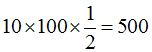


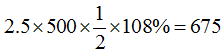
36. 信託登記之公示性¶
發布日期: 2020-05-07
各位同學好
今日專欄為各位同學說明有關信託登記特性之一「公示性」，即信託法第4條第1項規定，以應登記或註冊之財產權為信託者，非經信託登記，不得對抗第。應注意此條文分為兩種登記性質：
• (一) 「應登記之財產權」：指依民法第758條第1項及土地法第72條以信託為登記原因之權利變更登記，其主要目的為移轉財產權，並有權利移轉之公示效果，屬設權登記(登記生效主義)。
• (二) 「信託登記」：其目的在於信託成立後，信託財產具獨立性，為確保交易安全，故將信託主要條款，包含信託目的、信託期間、信託財產之管理或處分方法、信託關係消滅事由等予以公示，亦即使登記外觀足以辨識該財產屬於信託財產，避免第三人因不知其內部約定而遭受損害，故屬「對抗登記」（登記對抗主義）。其登記目的在保護交易安全，受益人對於信託財產有追及權，對於與信託財產交易的第三人，即有受到不測損害之虞，故有必要使交易相對人知悉交易標的物上有受益權（即信託財產的負擔），而不致受到不測損害，故有必要予以公示。而所謂對抗，指如信託財產的權利關係發生糾紛時，如信託財產具備公示要件，則信託關係人對第三人得主張信託關係存在。
信託登記之性質
| 信託法§4 | 登記性質 | 登記主義 | 權利人資格 |
|---|---|---|---|
| 應登記之財產權 | 權利變更登記 | 登記生效主義(民法§758) | 具權利能力即可 |
| 信託登記 | 信託登記 | 登記對抗主義 | 具權利能力及成年之完全行為能力人 |
注：本文圖片存放於 ./images/ 目錄下
37. 不動產交換之稅負(二)¶
發布日期: 2020-05-07
• (二) 建物分割：分割契稅，應由分割人估價立契，申報契稅（契稅條例§8）。分割契稅為其契價2%（契稅條例§3⑤）。例如：甲、乙二人共有A屋，應有部分各二分之一；甲、乙二人共有B屋，應有部分各二分之一。房屋評定標準價格各1,000萬元。分割後，甲取得A屋全部，乙取得B屋全部。甲、乙二人各應繳納多少契稅？（甲繳納A屋契稅10萬元；乙繳納B屋契稅10萬元）計算過程如下：
-
就A屋而言：甲分割前房屋現值：[圖片1]甲分割後房屋現值：1,0001,000-500=500500x2%=10
-
就B屋而言：乙分割前房屋現值：[圖片2]乙分割後房屋現值：1,0001,000-500=500500x2%=10
例如：甲、乙二人共有A屋，應有部分各二分之一；甲、乙二人共有B屋，應有部分各二分之一。A屋評定標準價格1,000萬元，B屋評定標準價格2,000萬元。分割後，甲取得A屋全部，乙取得B屋全部。甲、乙二人各應繳納多少契稅？（若有給付差額，甲繳納A屋契稅10萬元，乙繳納B屋契稅40萬元；若未給付差額，甲繳納A屋契稅10萬元，乙繳納B屋契稅40萬元）
-
有給付差額：
-
就A屋而言：甲分割前房屋現值：[圖片3]甲分割後房屋現值：1,0001,000-500=500500x2%=10
-
就B屋而言：乙分割前房屋現值：[圖片4]乙分割後房屋現值：2,0002,000-1,000=1,000其中500萬元課徵分割契稅，另500萬元課徵買賣契稅。500x2%=10（分割契稅）500x6%=30（買賣契稅）10+30=40
-
未給付差額：
-
就A屋而言：甲分割前房屋現值：[圖片5]甲分割後房屋現值：1,0001,000-500=500500x2%=10
-
就B屋而言：乙分割前房屋現值：[圖片6]乙分割後房屋現值：2,0002,000-1,000=1,000其中500萬元課徵分割契稅，另500萬元課徵贈與契稅。500x2%=10（分割契稅）500x6%=30（贈與契稅）10+30=40
附帶說明的是，分割屬於財產之移動，如以顯著不相當之代價，讓與財產，其差額部分，以贈與論，課徵贈與稅（遺產及贈與稅法§5②）。甲分割前房屋現值共1,500萬元，分割後房屋現值共1,000萬元；乙分割前房屋現值共1,500萬元，分割後房屋現值共2,000萬元。倘乙有給付500萬元之差額，則無贈與稅；倘乙未給付500萬元之差額，等同甲贈與500萬元予乙，因此贈與人甲應繳納贈與稅。
文章圖片¶
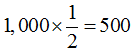
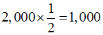
38. 與登記有關之第三人¶
發布日期: 2020-05-14
各位同學好
今日專欄為「與登記有關之第三人」，試問其意義與相關之情形為何？這分別在96年普考、100年地政士、106普考皆考過，茲整理說明如下：
※與登記有關之第三人：
• (一) 意義：
申請土地登記時，除登記權利人與登記義務人外，其權利義務涉及第三人，且須經第三人同意者，此第三人稱為與登記有關之第三人。亦即登記之效力及於第三人。
依土地登記規則第44條：申請登記須第三人同意者，應檢附第三人之同意書或由第三人在登記申請書內註明同意事由。第三人除符合第41條第二款(公證)、第五款至第八款(法代、印鑑、外僑、陸港澳)及第十款(印鑑證明)規定之情形者外，應親自到場，並依第40條規定程序辦理。
• (二) 相關情形：
-
優先購買權人(土登§97)：申請土地移轉登記時，依民法物權編施行法第八條之五第三項、第五項、土地法第三十四條之一第四項、農地重劃條例第五條第二款、第三款或文化資產保存法第二十八條規定之優先購買權人已放棄優先購買權者，應附具出賣人之切結書，或於登記申請書適當欄記明優先購買權人確已放棄其優先購買權，如有不實，出賣人願負法律責任字樣。依民法第四百二十六條之二、第九百十九條、土地法第一百零四條、第一百零七條、耕地三七五減租條例第十五條或農地重劃條例第五條第一款規定，優先購買權人放棄或視為放棄其優先購買權者，申請人應檢附優先購買權人放棄優先購買權之證明文件；或出賣人已通知優先購買權人之證件並切結優先購買權人接到出賣通知後逾期不表示優先購買，如有不實，願負法律責任字樣。
-
債務人(土登§111)：申請為抵押權設定之登記，其抵押人非債務人時，契約書及登記申請書應經債務人簽名或蓋章。
-
共同抵押人(土登§115)：同一土地權利設定數個抵押權登記後，其中一抵押權因債權讓與為變更登記時，原登記之權利先後，不得變更。抵押權因增加擔保債權金額申請登記時，除經後次序他項權利人及後次序抵押權之共同抵押人同意辦理抵押權內容變更登記外，應就其增加金額部分另行辦理設定登記。
-
他項權利人及共同抵押人(土登§114-1)：以數宗土地權利為共同擔保，申請設定抵押權登記時，已限定各宗土地權利應負擔之債權金額者，登記機關應於登記簿記明之；於設定登記後，另為約定或變更限定債權金額申請權利內容變更登記者，亦同。前項經變更之土地權利應負擔債權金額增加者，應經後次序他項權利人及後次序抵押權之共同抵押人同意。
-
抵押權人(土登§107)：分別共有土地，部分共有人就應有部分設定抵押權者，於辦理共有物分割登記時，該抵押權按原應有部分轉載於分割後各宗土地之上。但有下列情形之一者，該抵押權僅轉載於原設定人分割後取得之土地上。
-
抵押權人同意分割。
-
抵押權人已參加共有物分割訴訟。
3. 抵押權人經共有人告知訴訟而未參加。¶
注：本文圖片存放於 ./images/ 目錄下
39. 土地分割及土地合併之土地增值稅¶
發布日期: 2020-05-14
土地分割及土地合併之土地增值稅課徵，規定於平均地權條例施行細則第65條及土地稅法施行細則第42條。
• (一) 土地分割：分別共有土地分割後，各人所取得之土地價值與其分割前應有部分價值相等者，免徵土地增值稅；其價值減少者，就其減少部分課徵土地增值稅（土地稅法施行細則§42Ⅱ）。
例如：甲、乙二人共有一宗土地，公告土地現值1,000萬元，土地持分各二分之一。該土地分割為A、B二宗土地，甲取得A地，公告土地現值500萬元；乙取得B地，公告土地現值500萬元。甲、乙二人各應繳納多少土地增值稅？（甲、乙二人均不課徵土地增值稅）
例如：甲、乙二人共有一宗土地，公告土地現值1,000萬元，土地持分各二分之一，甲之前次移轉現值250萬元，乙之前次移轉現值400萬元；甲之前次移轉至本次移轉之物價指數120%，乙之前次移轉至本次移轉之物價指數110%。該土地分割為A、B二宗土地，甲取得A地，公告土地現值200萬元；乙取得B地，公告土地現值800萬元。甲、乙二人各應繳納多少土地增值稅？（若受有補償，甲繳納A地土地增值稅24萬元；若未受補償，乙繳納A地土地增值稅24萬元）
計算過程如下：土地分割後，甲分得之土地價值減少300萬元。
-
前次移轉現值：[圖片1]
-
本次移轉現值：300
-
土地漲價總數額：300-180=120
-
土地增值稅：120x20%=24
倘受有補償，屬於有償移轉，應向原所有權人課徵土地增值稅，因此甲應繳納土地增值稅24萬元。倘未受補償，屬於無償移轉，應向取得所有權人課徵土地增值稅，因此乙應繳納土地增值稅24萬元。
附帶說明的是，分割屬於財產之移動，如以顯著不相當之代價，讓與財產，其差額部分，以贈與論（遺產及贈與稅法§5②）。準此，倘乙有給付300萬元之差額，則無贈與稅；倘乙未給付300萬元之差額，等同甲贈與300萬元予乙，因此贈與人甲應繳納贈與稅。
【註】分割後，甲應分得500萬元，但實際分得200萬元。換言之，甲將300萬元售出或贈與。售出或贈與之比例為[圖片2]，即[圖片3]
• (二) 土地合併：土地合併後，各共有人應有部分價值與其合併前之土地價值相等者，免徵土地增值稅。其價值減少者，就其減少部分課徵土地增值稅（土地稅法施行細則§42Ⅳ）。
例如：甲擁有A地，公告土地現值1,000萬元；乙擁有B地，公告土地現值500萬元。A、B二宗土地合併後，甲取得合併後土地之應有部分三分之二，乙取得合併後土地之應有部分三分之一。甲、乙二人各應繳納多少土地增值稅？（甲、乙二人均不課徵土地增值稅）
例如：甲擁有A地，公告土地現值1,000萬元，前次移轉現值600萬元，前次移轉至本次移轉之物價指數130%。乙擁有B地，公告土地現值500萬元，前次移轉現值400萬元，前次移轉至本次移轉之物價指數110%。A、B二宗土地合併後，甲、乙二人取得合併後土地之應有部分各二分之一。甲、乙二人各應繳納多少土地增值稅？（若受有補償，甲繳納A地土地增值稅11萬元；若未受補償，乙繳納A地土地增值稅11萬元）
計算過程如下：土地合併後，甲分得之持分價值減少250萬元。
-
前次移轉現值：[圖片4]
-
本次移轉現值：250
-
土地漲價總數額：250-195=55
-
土地增值稅：55x20%=11
倘受有補償，應向原所有權人課徵土地增值稅，因此甲應繳納土地增值稅11萬元。倘未受補償，屬於無償移轉，應向取得所有權人課徵土地增值稅，因此乙應繳納土地增值稅11萬元。
附帶說明的是，合併屬於財產之移轉，如以顯著不相當之代價，讓與財產，其差額部分，以贈與論（遺產及贈與稅法§5②）。準此，倘乙有給付250萬元之差額，則無贈與稅；倘乙未給付250萬元之差額，等同甲贈與250萬元予乙，因此贈與人甲應繳納贈與稅。
文章圖片¶
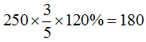
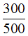
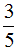
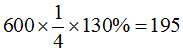
40. 住宅市場之問題與建議¶
發布日期: 2020-05-21
各位同學好
今日專欄為各位同學整理有關土地政策中，住宅市場之問題與未來建議：
• 一、當前的主要住宅問題
• (一) 價格問題都會區房價過高。地價巨幅上升，房價隨之高漲，使得一般受薪階級畢其一生積蓄，難購一屋。因無恆產，亦難培養匠心，影響社會安定。
• (二) 數量問題空屋率高，囤房嚴重。台灣空屋率高，但租屋市場並不發達，顯示擁有空屋者係著眼於保值與投資，期待未來增值之利。此外，建商仍持續推案，使得市場形成超額供給。
• (三) 品質問題有土斯有財的迷思。每一個人都想擁有自己的住宅，結果人人被迫購屋，推升房價，一輩子淪為屋奴，生活品質差。再者，為能擁有一處自有住宅，許多購屋者寧願購買小面積甚而環境條件差的住宅，使得居住品質並不理想。
• (四) 市場問題住宅市場失靈。價格機能無法有效指導住宅市場真正供需，尤其住宅市場為不完全競爭市場，住宅價格資訊不完全、不對稱，使民眾無法獲知正確價格，也使得買賣雙方協商交易成本高。
• (五) 政策問題缺乏整體住宅政策。政府為實現「住者有其屋」或追求所謂的居住正義，多年來推動各種健全住宅市場及住宅補貼等措施，缺僅因缺乏完整配套或投鼠忌器，始終無法讓住宅價格合理化，亦未能進一步提升居住環境品質。
• 二、未來建議
朝向抑制投機需求、增加房地供給、健全不動產制度：
• (一) 價格問題之解決
-
建立土地儲備制度：實施重大建設時，其周邊土地的地價常大幅上漲，容易成為投機炒作的對象，有礙地方建設的正常發展。為了防止上述不正常現象發生，政府可採行區段徵收，或土地預購制度，並將所取得之部分土地供興建社會住宅。
-
進行房地稅制改革：配合實價登錄建構完整的實價課稅機制，加重囤房者的持有成本，並提高其交易成本，以抑制房市投機炒作，實現租稅、居住及社會的公平正義。
-
實施空地限建：當地價正在飆漲，或顯有土地投機炒作跡象時，為抑制地價飆漲，增加土地供給，政府可選擇公共設施完備的地區，規定區內空地限期建築使用，逾期不建築使用者依法課徵空地稅，或照價收買，以發揮嚇阻作用，逼使其從速使用，增加住宅供給。
• (二) 數量問題之解決
- 提高空屋的運用效益：國內住宅空屋率居高不下，為解決空屋率過高問題，政府可透過租稅獎勵或補貼手段，吸引空屋持有人釋出既有空屋，再透過民間非營利組織成立各種租屋服務平台，協助民眾租屋與管理。
• (三) 品質問題之解決
-
積極推動都市更新：鼓勵大面積整體開發更新，將建商引導到都市更新方向開發土地，一方面可維持建商正常營運，一方面可抑制更新地區以外的房屋供給，提升住宅品質。
-
改變「有土斯有財」的觀念：透過資訊性工具，行銷「以租代買」理念，改變國人「有土斯有財」的傳統思維，避免年輕族群及弱勢族群成為屋奴，也可解決空屋過多的問題。
• (四) 市場問題之解決
- 健全房市資訊揭露制度：為引導住宅市場健全發展，政府應定期蒐集、分析住宅市場、交易價格等相關資訊，並定期公布供民眾查詢。而為利推動實價課稅，也必須先建構實價登錄制度的完整性與可信性，才能讓課稅基礎逐步貼近實價。
• (五) 政策問題之解決
-
整合住宅補貼政策：針對近年來政府為增加住宅持有率所提出的各項政策予以全面檢討，並作適當的規劃與整合，使住宅的補貼政策能兼顧公平與效率。
-
推動只租不售社會住宅：由政府選擇適當區位之公有土地、民間合作興建或採BOT方式興建社會住宅，再以合理租金出租予符合一定資格條件（弱勢）民眾居住使用，以紓緩高房價引起的居住問題。
3. 社會住宅去標籤化：社會住宅常被認為是貧困、弱勢者集中居住的地方，而背負「鄰避設施」之污名。故政府在規劃時，必須採取參與式的設計與規劃，將民眾意見納入政策規劃過程。¶
注：本文圖片存放於 ./images/ 目錄下
41. 土地分割之稅負¶
發布日期: 2020-05-21
土地分割之類型有三，即純標示分割型、純權利分割型及混合分割型等三種。其中混合分割型指包含標示分割與權利分割二種混合而成。純標示分割型，因未涉及所有權移轉，故不徵土地增值稅。純權利分割型，因涉及所有權移轉，故應課徵土地增值稅。混合分割型，因其中包含所有權移轉，故應課徵土地增值稅。
• (一) 純標示分割型：例如：甲、乙二人共有A地，應有部分各二分之一。今將A地分割為B地與C地二宗土地，B地由甲、乙二人共有，應有部分各二分之一；C地亦由甲、乙二人共有，應有部分各二分之一。甲、乙二人各應繳納多少土地增值稅？（甲、乙二人均不徵土地增值稅）
• (二) 純權利分割型：例如：甲、乙二人共有A地，土地面積200平方公尺，應有部分各二分之一，分割時公告土地現值每平方公尺1,000元。甲之前次移轉現值每平方公尺500元，前次移轉至本次移轉之物價指數120%；乙之前次移轉現值每平方公尺700元，前次移轉至本次移轉之物價指數110%。又，甲、乙二人共有B地，土地面積300平方公尺，應有部分各二分之一，分割時公告土地現值每平方公尺800元。甲之前次移轉現值每平方公尺600元，本次移轉至前次移轉之物價指數115%；乙之前次移轉現值每平方公尺400元，本次移轉至前次移轉之物價指數105%。今辦理分割，甲取得A地全部，乙取得B地全部。甲、乙二人各應繳納多少土地增值稅？（若受有補償，甲應繳納B地土地增值稅3,300元，乙應繳納A地土地增值稅4,600元；若未受補償，甲應繳納A地土地增值稅4,600元，乙應繳納B地土地增值稅3,300元）計算過程如下：
-
就A地而言：土地分割後，乙之應有部分二分之一移轉於甲，故就乙之應有部分二分之一課徵土地增值稅。
-
前次移轉現值：[圖片1]
-
本次移轉現值：[圖片2]
-
土地漲價總數額：100,000-77,000=23,000
-
土地增值稅：23,000x20%=4,600
若有給付差額（即受有補償），屬於有償移轉，應向原所有權人課徵土地增值稅，因此乙應繳納土地增值稅4,600元。若未給付差額（即未受補償），屬於無償移轉，應向取得所有權人課徵土地增值稅，因此甲應繳納土地增值稅4,600元。
-
就B地而言：土地分割後，甲之應有部分二分之一移轉於乙，故就甲之應有部分二分之一課徵土地增值稅。
-
前次移轉現值：[圖片3]
-
本次移轉現值：[圖片4]
-
土地漲價總數額：120,000-103,500=16,500
-
土地增值稅：16,500x20%=3,300
若有給付差額（即受有補償），屬於有償移轉，應向原所有權人課徵土地增值稅，因此甲應繳納土地增值稅3,300元。若未給付差額（即未受補償），屬於無償移轉，應向取得所有權人課徵土地增值稅，因此乙應繳納土地增值稅3,300元。
- 本案之差額計算：甲分割前土地價值：A地：100,000B地：120,000A地+B地=220,000甲分割後土地價值：A地：200,000乙分割前土地價值：A地：100,000B地：120,000A地+B地=220,000乙分割後土地價值：B地：240,000綜上，乙應給付差額20,000元予甲。附帶說明的是，分割屬於財產之移動，如以顯著不相當之代價，讓與財產，其差額部分，以贈與論（遺產及贈與稅法§5②）。準此，倘乙有給付20,000元之差額，則無贈與稅；倘乙未給付20,000元之差額，等同甲贈與20,000元予乙，因此贈與人甲應繳納贈與稅。
• (三) 混合分割型：例如：甲、乙二人共有A地，土地面積500平方公尺，應有部分各二分之一。分割時公告土地現值每平方公尺2,000元。甲之前次移轉現值每平方公尺1,200元，前次移轉至本次移轉之物價指數130%；乙之前次移轉現值每平方公尺1,500元，前次移轉至本次移轉之物價指數110%。今將A地分割為B地與C地二宗土地，B地與C地土地面積各250平方公尺，B地全歸甲所有，C地全歸乙所有。甲、乙二人各應繳納多少土地增值稅？（甲、乙二人均不課徵土地增值稅）例如：甲、乙二人共有A地，土地面積500平方公尺，應有部分各二分之一。分割時公告土地現值每平方公尺2,000元。甲之前次移轉現值每平方公尺1,200元，前次移轉至本次移轉之物價指數130%；乙之前次移轉現值每平方公尺1,500元，前次移轉至本次移轉之物價指數110%。今將A地分割為B地與C地二宗土地，B地之土地面積300平方公尺，C地之土地面積200平方公尺，B地全歸甲所有，C地全歸乙所有。甲、乙二人各應繳納多少土地增值稅？（若受有補償，乙應繳納土地增值稅3,500元；若未受補償，甲應繳納土地增值稅3,500元）計算過程如下：
土地分割後，乙分得之土地價值減少100,000元。
-
前次移轉現值：1,500x50x110%=82,500
-
本次移轉現值：2,000x50=100,000
-
土地漲價總數額：100,000-82,500=17,500
-
土地增值稅：17,500x20%=3,500元
若有給付差額（即受有補償），屬於有償移轉，應向原所有權人課徵土地增值稅，因此乙應繳納土地增值稅3,500元。若未給付差額（即未受補償），屬於無償移轉，應向取得所有權人課徵土地增值稅，因此甲應繳納土地增值稅3,500元。附帶說明的是，分割屬於財產之移動，如以顯著不相當之代價，讓與財產，其差額部分，以贈與論（遺產及贈與稅法§5②）。準此，倘甲有給付100,000元之差額，則無贈與稅；倘甲未給付100,000元之差額，等同乙贈與100,000元予甲，因此贈與人乙應繳納贈與稅。
文章圖片¶
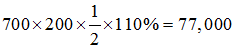
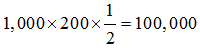
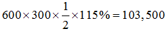
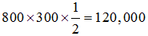
42. 開發許可程序¶
發布日期: 2020-05-28
各位同學好
今日專欄為各位整理說明有關目前區域計畫開發許可的程序：
非都市土地開發需辦理土地使用分區變更者，其申請人應依相關審議作業規範之規定製作開發計畫書圖及檢具有關文件，並依下列程序，向直轄市或縣（市）政府申請辦理(非§13)：
-
申請開發許可。
-
相關公共設施用地完成土地使用分區及使用地之異動登記，並移轉登記為該管直轄市、縣（市）有或鄉（鎮、市）有。但其他法律就移轉對象另有規定者，從其規定。
-
申請公共設施用地以外土地之土地使用分區及使用地之異動登記。
-
山坡地範圍，依水土保持法相關規定應擬具水土保持計畫者，應取得水土保持完工證明書；非山坡地範圍，應取得整地排水完工證明書。但申請開發範圍包括山坡地及非山坡地範圍，非山坡地範圍經水土保持主管機關同意納入水土保持計畫範圍者，得免取得整地排水完工證明書。
其程序詳細說明如下：
-
擬定開發計畫申請(區§15-1)：為開發利用，依各該區域計畫之規定，由申請人擬具開發計畫，檢同有關文件，向直轄市、縣(市)政府申請，報經各該區域計畫擬定機關許可後，辦理分區變更。
-
許可審議：申請開發之案件，直轄市、縣(市)政府應於受理後六十日內，報請各該區域計畫擬定機關辦理許可審議但有特殊情形者，得延長一次，其延長期間並不得超過原規定之期限。(區§15-4)
-
開發許可之核發：
-
核准要件：申請開發之案件，經審議符合下列各款條件，得許可開發(區§15-2)︰
-
於國土利用係屬適當而合理者。
-
不違反中央、直轄市或縣(市)政府基於中央法規或地方自治法規所為之土地利用或環境保護計畫者。
-
對環境保護、自然保育及災害防止為妥適規劃者。
-
與水源供應、鄰近之交通設施、排水系統、電力、電信及垃圾處理等公共設施及公用設備服務能相互配合者。
-
取得開發地區土地及建築物權利證明文件者。
-
通知：區域計畫擬定機關應於九十日內將審議結果通知申請人，但有特殊情形者，得延長一次，其延長期間並不得超過原規定之期限（區§15-4），該審議結果包含許可、不予許可、有條件許可之情形。
-
公告：申請案經區域計畫委員會審議同意後，由區域計畫擬定機關核發開發許可予申請人，並通知土地所在地直轄市或縣（市）政府(非§14)。直轄市或縣（市）政府應將許可內容於各該直轄市、縣（市）政府或鄉（鎮、市、區）公所公告三十日(非§20)。
-
公設用地分割移轉登記與開發影響費繳交(區§15-3)：申請開發者依法取得區域計畫擬定機關許可後，辦理分區或用地變更前，應將開發區內之公共設施用地完成分割移轉登記為各該直轄市、縣(市)有或鄉、鎮(市)有，並向直轄市、縣(市)政府繳交開發影響費，作為改善或增建相關公共設施之用；該開發影響費得以開發區內可建築土地抵充之。
-
分區及使用地變更編定異動登記(非§26)：申請人於非都市土地開發依相關規定應興闢公共設施、繳交開發影響費、捐贈土地或繳交土地代金或回饋金時，應先完成捐贈之土地及公共設施用地之分割、移轉登記，並繳交開發影響費、土地代金或回饋金後，由直轄市或縣(市)政府辦理土地使用分區及使用地變更編定異動登記，並函請土地登記機關於土地登記簿標示部加註核定事業計畫使用項目。
6. 水土保持計畫或整地排水計畫審核(非§23)：申請人於獲准開發許可後，應於收受通知之日起一年內擬具水土保持計畫或整地排水計畫送請水土保持主管機關或直轄市、縣(市)政府審核，以從事區內整地排水及公共設施用地整地等工程，並於工程完成，經直轄市或縣(市)政府查驗合格後，除其他法律另有規定外，申請人應辦理相關公共設施用地移轉予該管直轄市、縣(市)政府或鄉(鎮、市)公所，始得申請辦理變更編定為允許之使用分區及使用地。但開發案件因故未能於期限內申請水土保持計畫或整地排水計畫審核者，得敘明理由於期限屆滿前申請展期；展期之期間每次不得超過一年，並以二次為限；逾期未申請者，區域計畫擬定機關原許可失其效力。¶
注：本文圖片存放於 ./images/ 目錄下
43. 土地分割之綜合整理¶
發布日期: 2020-05-28
不動產分割合併包含土地分割、土地合併、建物分割及建物合併等四種。實務上以土地分割之案件最多。
• (一) 土地分割之方法：共有物分割（指權利分割，不包括標示分割）不得適用土地法第34條之1之多數決，因此土地分割方法有協議分割、調處分割及裁判分割三種。
-
協議分割：由全體共有人同意而為土地分割（民法§824Ⅰ）。協議分割適用民法第758條，採登記生效要件主義（即設權登記）。
-
調處分割：共有人不能協議分割，任何共有人得申請該管直轄市、縣（市）地政機關調處而為土地分割（土地法34-1Ⅵ）。調處分割適用民法第758條，採登記生效要件主義（即設權登記）。
-
裁判分割：共有人不能協議分割，任何共有人得請求法院而為裁判分割（民法§824Ⅱ）。裁判分割適用民法第759條，採登記處分要件主義（即宣示登記）。
• (二) 土地分割之登記：土地分割如涉及標示變更，應辦理標示變更登記；土地分割如涉及權利變更，應辦理所有權移轉登記。土地分割登記之種類有純標示分割型、純權利分割型及混合分割型三種。
-
純標示分割型：土地分割僅涉及標示變更，未涉及權利變更，故僅辦理標示變更登記，無須辦理所有權移轉登記。例如，甲、乙二人共有一宗土地，地號18，應有部分各二分之一。今分割為二宗土地，地號18及地號18-1。地號18，由甲、乙二人共有，應有部分各二分之一；地號18-1，由甲、乙二人共有，應有部分各二分之一。
-
純標示分割型得適用土地法第34條之1之多數決。
-
純權利分割型：土地分割僅涉及權利變更，未涉及標示變更，故僅辦理所有權移轉登記，無須辦理標示變更登記。例如，甲、乙二人共有一宗土地，地號19，應有部分各二分之一；甲、乙二人共有另一宗土地，地號20，應有部分各二分之一。今辦理分割，地號19全歸甲所有，地號20全歸乙所有。
-
純權利分割型不得適用土地法第34條之1之多數決。
-
混合分割型：土地分割涉及標示變更，亦涉及權利變更，故應先辦理標示變更登記，再辦理所有權移轉登記。例如，甲、乙二人共有一宗土地，地號21，應有部分各二分之一。今分割為二宗土地，地號21及地號21-1。地號21全歸甲所有，地號21-1全歸乙所有。混合分割型不得適用土地法第34條之1之多數決。
• (三) 土地分割之稅負：標示變更因未涉及所有權移轉，故不徵土地增值稅；權利變更因涉及所有權移轉，故應課徵土地增值稅。
-
純標示分割型之稅負：不徵土地增值稅。
-
純權利分割型之稅負：課徵土地增值稅。
3. 混合分割型之稅負：分別共有土地分割後，各人所取得之土地價值與其分割前應有部分價值相等者，免徵土地增值稅（應注意者，在此所稱免徵土地增值稅，其實是不課徵土地增值稅）；其價值減少者，就其減少部分課徵土地增值稅（土地稅法施行細則§42Ⅱ）。¶
注：本文圖片存放於 ./images/ 目錄下
44. 公益信託之稅負¶
發布日期: 2020-06-04
法規可能已修正
本文發布（2020-06-04）後，文中引用的 房屋稅條例第15條（2024-01-03 修正）有修正，內容可能與現行規定不同，請以全國法規資料庫的現行條文為準。
各位同學好
地政士考試即將到來，本週專欄為各位同學整理及說明有關「公益信託」之相關土地稅負減免規定。
依信託法第69條規定，稱公益信託者，謂以慈善、文化、學術、技藝、宗教、祭祀或其他以公共利益為目的之信託。如環境信託、營養午餐公益信託等。因其具有公共利益性質，故許多土地稅負得以減免。茲整理如下：
-
遺產稅＝不計入遺產總額：遺贈人、受遺贈人或繼承人提供財產，捐贈或加入於被繼承人死亡時已成立之公益信託並符合左列各款規定者，該財產不計入遺產總額（遺贈法第16條-1）：
-
受託人為信託業法所稱之信託業。
-
各該公益信託除為其設立目的舉辦事業而必須支付之費用外，不以任何方式對特定或可得特定之人給予特殊利益。
-
信託行為明定信託關係解除、終止或消滅時，信託財產移轉於各級政府、有類似目的之公益法人或公益信託。
-
贈與稅＝不計入贈與總額：因委託人提供財產成立、捐贈或加入符合第十六條之一各款規定之公益信託，受益人得享有信託利益之權利，不計入贈與總額。（遺贈法第20條-1）
-
房屋稅＝免徵：依房屋稅條例第15條，私有房屋有下列情形之一者，免徵房屋稅：十一、經目的事業主管機關許可設立之公益信託，其受託人因該信託關係而取得之房屋，直接供辦理公益活動使用者。
-
契稅＝不課徵：不動產為信託財產者，於左列各款信託關係人間移轉所有權，不課徵契稅(契稅條例第14條之1)：
-
因信託行為成立，委託人與受託人間。(交付房屋成立公益信託時)
-
信託關係存續中受託人變更時，原受託人與新受託人間。
-
信託契約明定信託財產之受益人為委託人者，信託關係消滅時，受託人與受益人間。
-
因遺囑成立之信託，於信託關係消滅時，受託人與受益人間。
-
因信託行為不成立、無效、解除或撤銷，委託人與受託人間。
-
土地增值稅＝不課徵：土地為信託財產者，於下列各款信託關係人間移轉所有權，不課徵土地增值稅（土地稅法第28條之3）：
-
因信託行為成立，委託人與受託人間。(交付土地成立公益信託時)
-
信託關係存續中受託人變更時，原受託人與新受託人間。
-
信託契約明定信託財產之受益人為委託人者，信託關係消滅時，受託人與受益人間。
-
因遺囑成立之信託，於信託關係消滅時，受託人與受益人間。
-
因信託行為不成立、無效、解除或撤銷，委託人與受託人間。
-
至於地價稅依土地稅法第3條之1規定仍須繳納，即信託土地應與委託人在同一直轄市或縣(市)轄區內所有之土地合併計算地價總額，依第十六條規定稅率課徵地價稅，分別就各該土地地價占地價總額之比例，計算其應納之地價稅。但信託利益之受益人為非委託人且符合左列各款規定者，前項土地應與受益人在同一直轄市或縣(市)轄區內所有之土地合併計算地價總額：
-
受益人已確定並享有全部信託利益者。
2. 委託人未保留變更受益人之權利者。¶
注：本文圖片存放於 ./images/ 目錄下
45. 信託法實例研習¶
發布日期: 2020-06-04
甲有一間店面，採自益信託且信託登記於乙，信託契約載明由乙出租管理，然乙擅自出售於丙並辦竣移轉登記。嗣甲即訴請法院撤銷該買賣契約，並塗銷移轉登記，是否可行？丙遂主張土地法第43條或民法第759條之1第2項以為保護，是否可行？
【解答】
• (一) 信託法第18條規定，受託人違反信託本旨處分信託財產時，受益人得聲請法院撤銷其處分。前項撤銷權之行使，以信託財產為已辦理信託登記之應登記之財產權為限，始得為之。準此，甲訴請法院撤銷該買賣契約，並塗銷移轉登記，為可行。另，信託法第19條規定，撤銷權自受益人知有撤銷原因時起，一年間不行使而消滅。自處分時起逾十年者，亦同。
• (二) 信託法第4條第1項規定，以應登記之財產權為信託者，非經信託登記，不得對抗第三人。準此，本案已辦竣信託登記，故得以對抗第三人丙。況，丙得由公開之登記簿及信託專簿查知信託資訊，因此丙已非「善意第三人」，故丙主張土地法第43條或民法第759條之1第2項以為保護，為不可行。¶
注：本文圖片存放於 ./images/ 目錄下
46. 共有處分、變更、設定於民法及土地法之適用差異¶
發布日期: 2020-06-11
各位同學好
今日專欄為各位同學整理有關共有處分、變更、設定於民法及土地法規定之差異。
民法§819II規定：共有物之處分、變更、及設定負擔，應得共有人全體之同意。土地法§34-1I規定：共有土地或建築改良物，其處分、變更、及設定地上權、農育權、不動產役權或典權，應以共有人過半數及其應有部分合計過半數之同意行之。但其應有部分合計逾三分之二者，其人數不予計算。
兩者之差異茲整理如表：
| 差異 | 民法 | 土地法 |
|---|---|---|
| 適用客體 | 共有物(共有動產、不動產) | |
| 適用行為 | 處分 | 有償或無償 法律行為或事實行為 |
| 變更 | 有償或無償 | 有償 |
| 設定 | 有償或無償 適用所有他項權利設定 | 有償 僅適用設定地上權、農育權、不動產役權或典權 |
| 同意比例 | 須共有人全體之同意 |
注：本文圖片存放於 ./images/ 目錄下
47. 累進稅與比例稅之爭¶
發布日期: 2020-06-11
租稅稅率有累進稅與比例稅之分。前者如地價稅、土地增值稅、遺產稅、贈與稅等是；後者如房屋稅、契稅、房地合一所得稅等是。茲比較如下：
• (一) 特色：
-
比例稅：亦稱單一稅率；稅率固定不變，稅率不隨稅基增加而遞增。
-
累進稅：稅率隨稅基增加而遞增。
• (二) 比例稅之功能：
-
簡化稽徵手續：就計算稅額而言，比例稅較累進稅簡單容易，符合簡政便民。
-
租稅絕對公平：稅基之每一塊錢，所課徵之稅額相同，符合租稅公平。
• (三) 累進稅之功能：
-
平均社會財富：漲價多者負擔較重的稅，漲價少者負擔較輕的稅，以縮小貧富差距。
-
防止投機暴利：地價增漲快速，漲幅大、倍數高，適用較高稅率，以抑制土地投機。
-
符合量能課稅：隨著漲幅愈大，不勞而獲愈多，適用較高稅率，以去除不勞而獲，並符合量能課稅。
綜上，就政策目的而言，土地增值稅採累進稅優於比例稅。¶
注：本文圖片存放於 ./images/ 目錄下
48. 回饋之概念¶
發布日期: 2020-06-18
各位同學好
土地使用變更，由原本低利用價值之土地使用，申請改變為高利用價值之使用，以獲得開發利益（或稱為變更利得），目前許多法規要求應予進行「回饋」。今日專欄為各位同學整理有關「回饋」之意涵（廣義）：
-
內部性的公共設施負擔對於位在開發區範圍供開發目的使用之公共設施，因該類公共設施係基於開發所衍生之需求，並係以滿足開發區內活動之需求，及為維護開發區內部環境品質而設置，故開發者有負擔之義務。
-
外部性影響之負擔因土地開發經常導致開發區外部環境之負面衝擊，故其外部性社會成本應由開發者負擔。例如，因土地開發導致鄰近公共設施需求增加之社會成本，或因開發而排擠既有公共設施使用者之擁擠成本；此類外部成本，開發者應有加以吸收之義務。
-
其他義務之負擔
-
土地開發造成排擠效果基於土地開發在政府實施相關土地使用計畫下，造成後申請開發者受到先申請開發者之排擠效果，或先申請開發者剝奪其他土地使用機會，例如實施總量管制。因此，宜由開發者捐獻相當金額，以回饋社會。
-
回饋土地發展受限地區部份土地因政府實施土地使用計畫而致發展受限（例如，農地禁建），故宜由土地使用計畫中屬可開發之土地，於開發時捐部份金額，以回饋該類發展受限地區。
-
維護社會公平原則土地開發者在土地由低強度使用變更為較高度使用時，獲取超過正常利潤之不勞利得，在目前因無法以課稅方式，完全收歸公有，故宜由開發者捐獻相當金額，以維護社會公平。
-
維護山水資源之永續發展因土地開發通常山水資源具相當之影響，故由開發者捐獻部份金額，以擔負山水資源之維護及永續發展之責任，例如提供造林基金。
-
土地開發後管理維護之需要為使土地開發後之管理、維護工作得以落實，宜由開發者提供部份金額，負擔該項責任。
6. 其他因素為對開發區附近達到敦親睦鄰之效果，或配合地方施政方針之需要，以使開發案順利開發；或為照顧經濟弱勢族群對住宅之需求，可由開發者提供相當金額，或興設開發地區所需之相關設施，以回饋地方及社會。例如，在開發地區興建集會所、鄉里休閒中心或低收入住宅。¶
注：本文圖片存放於 ./images/ 目錄下
49. 倍數累進與金額累進之爭¶
發布日期: 2020-06-18
累進稅有倍數累進與金額累進之分。前者如地價稅、土地增值稅等是；後者如遺產稅、贈與稅等是。茲比較如下：
• (一) 特色：
-
金額累進就絕對利得予以累進課徵，倍數累進就相對利得予以累進課徵。
-
金額累進以固定金額劃分課稅級距，倍數累進以投資報酬率劃分課稅級距。茲以投資報酬率觀點敍述土地增值稅之稅率結構：
-
投資報酬率未達100%，就其獲利金額課徵20%。
-
投資報酬率在100%以上而未達200%，除按前款課徵外，就其超過之獲利金額部分，課徵30%。
-
投資報酬率在200%以上，除按前二款課徵外，就其超過之獲利金額部分，課徵40%。
• (二) 倍數累進之優缺點：
-
優點：
-
對暴利所得者，加重課稅，符合社會正義。
-
地價較低之市郊或新發展區，土地漲價金額少，但漲價倍數高，表示投資報酬率高，如採倍數累進可以有效打擊郊區及新發展區之土地投機。
-
地價較高之市中心區，土地漲價金額多，但漲價倍數低，表示投資報酬率低，如採倍數累進，可以有效確保市中心正常發展及都市更新。
-
倍數累進可以抑制郊區之蔓延發展，維持市中心區之正常發展，推動都市緊密成長。
-
缺點：
-
漲價倍數高，並不一定漲價金額多，卻適用較重稅率；反之，漲價倍數低，並不一定漲價金額少，卻適用較輕稅率。
-
長期持有土地之土地所有權人，將來一旦出售土地，由於原地價低，造成漲價倍數較高，須負擔較重賦稅。
-
土地所有權人可以採輾轉買賣之假移轉方式，以逃避適用高累進稅率。
• (三) 金額累進之優缺點：
-
優點：
-
不問漲價倍數多寡，只要漲價金額相同，一律適用相同之稅率，符合稅負公平原則。
-
不問持有土地之長短，一律按漲價金額課徵。對長期持有土地而無投機之自用者而言，不會產生不利影響。
-
缺點：
-
土地所有權可以藉化整為零，分批出售，減少每批交易金額，以適用較低稅率。如此將造成土地細分，妨害土地利用。若採倍數累進，則無本項缺點。
-
土地所有權人可以採輾轉買賣之假移轉方式，以逃避適用高累進稅率。若採倍數累進，仍無法排除本項缺點。
-
如果遇到物價劇烈上漲，課稅級距金額固定，將造成納稅義務人實質稅負增加。因此必須經常修法或採物價指數連動法加以補救。若採倍數累進，則無本項缺點。
綜上，就政策目的而言，土地增值稅採倍數累進優於金額累進。¶
注：本文圖片存放於 ./images/ 目錄下
50. 都市計畫之問題¶
發布日期: 2020-06-25
各位同學好
為改善居民生活環境，並促進市、鎮、鄉街有計畫之均衡發展，特制訂都市計畫法，在一定地區內有關都市生活之經濟、交通、衛生、保安、國防、文教、康樂等重要設施，作有計畫之發展，並對土地使用作合理之規劃。請問我國都市計畫制度有何問題？
• (一) 效率面
-
規劃觀念與方法無法肆應當前都市發展需要：傳統二度空間平面式之都市規劃觀念及方法，已無法符合新世紀 發展潮流與需求，且因應臺灣人口高齡少子女化之發展趨勢，現行通盤檢討作業規定及公共設施用地檢討標準依附「計畫人口」之思維，已面嚴峻挑戰。
-
都市計畫通盤檢討之意義與核心價值未受重視：多數地區都市計畫未能踐行全市性、系統性定期通盤檢討，都市計畫基本調查未受重視，通盤檢討作業程序過於冗長，缺乏都市發展願景及發展課題與對策之提出，無法符合地方發展需要。又，良好都市環境所必須的環境指標，如人口密度、日照、採光、通風等要素，在規則中仍缺乏全盤的考慮與規劃，致使環境品質的管制標準付之闕如。
-
都市計畫擬定變更之審議層級過於冗長：目前由鄉、鎮、縣轄市公所擬定都市計畫之主要計畫變更案需經鄉（鎮、市）都委會、縣都委會及內政部都委會三級都委會審議通過，審議層級過於冗長。此外，缺乏簡易變更作業之機制，無法落實中央與地方權責分工精神，亦無法因應當前社會環境快速變遷及公共建設計畫時程需要。
• (二) 公平面
-
欠缺實質民眾參與的機制：目前都市規劃及審議過程中之民眾參與機制，仍有待加強，以建立公信力，杜絕民眾疑慮。尤其，現行不論是公開展覽或說明會，多為消極被動參與方式，缺乏實質的溝通對話及討論。
-
我國都市計畫非常缺乏公正合理的審議機制：政府故意把都市計畫形塑成非常「專業」的事務，致使都市計畫僅能由極少數的專家學者及行政官僚所組成的都市計畫委員會來進行審議。都委會成員中，政府行政官僚幾乎佔了半數，而其他委員的遴聘也完全是由首長決定，這使得都委會的審議如同是球員兼裁判，結論總是偏向政府這一方，犧牲人民的權益。
-
以往都市計畫非常欠缺行政救濟保障：現雖剛建立都市計畫通盤檢討畫救濟機制，但尚有待觀察。
4. 公共設施保留地之不公：公共設施保留地無限期保留之不公：公共設施保留地之取得原有期限之規定，因取得經費籌措困難，修法取消取得期限之規定，允許公共設施保留地可以無限期保留。惟公共設施保留地可以無限期之保留嚴重違反憲法「保障人民財產」之規定，期限過久將成為特別犧牲之疑慮，以及違反平等原則。¶
注：本文圖片存放於 ./images/ 目錄下
51. 超額累進與全額累進之爭¶
發布日期: 2020-06-25
累進稅有超額累進與全額累進之分。前者如地價稅、土地增值稅、遺產稅、贈與稅等是；後者如田賦。
• (一) 特色：
-
超額累進：累進稅之課稅級距，僅就超過該級距門檻之部分，始課徵該級距之稅率。
-
全額累進：累進稅之課稅級距，凡超過該級距門檻，稅基全部一律採用該級距之稅率課徵。
例如：土地增值稅之第一級距稅率20%，第二級距稅率30%，第三級距稅率40%。如下圖所示。若土地漲價總數額為250萬元，如採超額累進應課徵70萬元，如採全額累進應課徵100萬元。〔圖片下載失敗〕(1)超額累進：100x20%+(200-100)x30%+(250-200)x40%=70(2)全額累進：250x40%=100
• (二) 超額累進之優點：
-
循序漸進：超額累進採漸進加重，就課稅基礎分階段提高稅負。
-
符合公平：同上例之課稅級距，設甲之土地漲價總數額為199萬元，乙之土地漲價總數額為201萬元。如採超額累進，則甲之稅負為49.7萬元，乙之稅負為50.4萬元，兩者相差無幾。如採全額累進，則甲之稅負為59.7萬元，乙之稅負為80.4萬元，兩者相差懸殊。
-
超額累進：甲：100x20%+(199-100)x30%=49.7乙：100x20%+(200-100)x30%+(201-200)x40%=50.4
-
全額累進：甲：199x30%=59.7乙：201x40%=80.4
綜上，就租稅公平而言，土地增值稅採超額累進優於全額累進。¶
注：本文圖片存放於 ./images/ 目錄下
52. 各種容積之概念¶
發布日期: 2020-07-02
各位同學好
今日專欄為各位同學整理各種「容積」之概念。
-
容積：指土地可建築之總樓地板面積。
-
容積(率)管制：係以限制建築物實體建築總量與建築基地面積之比例，藉以達到控制土地使用強度，確保整體居住生活品質的制度。原則規定於各都市計畫之土地使用管制規定中。
-
容積獎勵：主要是為解決部分公共服務機能不足問題，故以容積作為獎勵誘因，鼓勵民間設置必要性之公共設施或配合相關政策。包含開放空間、停車位、都市計畫、都市更新等情形。
-
容積移轉：指一宗土地容積移轉至其他可建築土地供建築使用。包含文化資產、公共設施保留地、開放空間、歷史建築、河川區等情形。
-
增額容積：指都市計畫擬定機關配合公共建設計畫之財務需要，於變更都市計畫之指定範圍內增加之容積。亦即係由地方政府提高公共建設影響範圍內的建築容積，以一次或分批競標方式預收價金，並將得標者預繳之價金挹注重大公共建設經費。得標者預繳價金所取得之增額容積，得於增額容積實施地區內自行建築使用，或由地區內其他土地所有權人建築使用。
-
基準(法定)容積：指以都市計畫及其相關法規規定之容積率上限乘土地面積所得之積數。
-
容積上限：於法定容積增加建築容積之最高上限。例如依都市計畫法台灣省施行細則第34條之3規定，各土地使用分區除增額容積及依本法第八十三條之一規定可移入容積外，於法定容積增加建築容積後，不得超過下列規定：一、依都市更新法規實施都市更新事業之地區：建築基地一點五倍之法定容積或各該建築基地零點三倍之法定容積再加其原建築容積。二、前款以外之地區：建築基地一點二倍之法定容積。
8. 容積折繳代金(容積銀行)：所謂的容積銀行制度即儲備買賣容積的概念，由政府建立一個容積交易平台，藉由資訊流通、協助交易、認證制度及蒐集價格等，協助確認容積商品資訊，媒合買賣雙方及容積移轉相關作業，透過穩定的收購與釋出，調節市場供需及維持發展平衡，並將開發商購買容積所繳納的代金收入用來取得私有公共設施保留地及都市建設，以落實公共利益，完善容積交易市場之機制。簡言之，容積移轉折繳代金指申請容積移轉透過付代金（代替直接捐贈公保地）來取得移入容積，而代金計算則透過估價核定。¶
注：本文圖片存放於 ./images/ 目錄下
53. 房地合一所得稅自住減免與重購退稅之比較¶
發布日期: 2020-07-02
試比較房地合一所得稅自住減免與重購退稅之條件有何不同？
【解答】
• (一) 戶籍條件不同：
-
自住減免：個人或其配偶、未成年子女設有戶籍並居住，連續滿六年。
-
重購退稅：個人或其配偶、直系親屬設有戶籍並居住，無設籍期間之限制。
• (二) 使用條件不同：
-
自住減免：交易前六年內，無出租、供營業或執行業務使用。
-
重購退稅：出售前一年內，無出租、供營業或執行業務使用。
• (三) 持有期限不同：
-
自住減免：持有且實際居住連續滿六年。
-
重購退稅：不論舊屋或新屋，無持有期間之限制；但出售舊屋與重購新屋移轉登記須在二年內。
• (四) 適用次數不同：
-
自住減免：交易前六年內未曾適用自住減免。換言之，每六年僅能適用一次。
-
重購退稅：無處數及次數之限制；但重購後五年內再行移轉或變更用途，追繳原退還稅款。
• (五) 申請期限不同：
-
自住減免：房地完成移轉登記日之次日起算三十日內申報。
-
重購退稅：重購房地完成移轉登記日之次日起算五年內申請。
綜上，自住減免之條件較重購退稅嚴格。另，自住減免與重購退稅可以並用。即先適用自住減免（即課稅所得在400萬元以下免税，超過400萬元適用10%稅率），再適用重購退稅（即重購價額大於或等於出售價額，退還全部稅款；重購價額小於出售價額，按比例退還稅款）。¶
注：本文圖片存放於 ./images/ 目錄下
54. 都市更新代拆規定¶
發布日期: 2020-07-09
法規可能已修正
本文發布（2020-07-09）後，文中引用的 都市更新條例第57條（2021-05-28 修正）有修正，內容可能與現行規定不同，請以全國法規資料庫的現行條文為準。
各位同學好
今日專欄為各位同學說明都市更新條例第57條第1項有關都市更新權利變換代拆機制：
-
權利變換範圍內應行拆除或遷移之土地改良物，由實施者依主管機關公告之權利變換計畫通知其所有權人、管理人或使用人，限期三十日內自行拆除或遷移；屆期不拆除或遷移者，依下列順序辦理：(1)由實施者予以代為之。(2)由實施者請求當地直轄市、縣（市）主管機關代為之。說明：權利變換計畫經主管機關核定發布實施，即對範圍內相對人、關係人及行政機關產生規制效力，應行拆除或遷移之土地改良物應自行拆除。如不拆則依順序由實施者先行協調代拆，如協調不成，則請求直轄市、縣（市）主管機關代拆。
-
實施者依前項第一款規定代為拆除或遷移前，應就拆除或遷移之期日、方式、安置或其他拆遷相關事項，本於真誠磋商精神予以協調，並訂定期限辦理拆除或遷移；說明：(1)實施者協調，實務又稱為「私調」。(2)所謂「真誠磋商精神」係按「公民與政治權利國際公約」、「經濟社會文化權利國際公約」兩公約提到任何人的居住權皆應受到保護，免受「無理或非法侵擾」，至於受到驅逐者應有之八項保障內容中，有一項即提到「應讓那些受影響的人有一個真正磋商的機會」。
-
協調不成者，由實施者依前項第二款規定請求直轄市、縣（市）主管機關代為之；直轄市、縣（市）主管機關受理前項第二款之請求後應再行協調，再行協調不成者，直轄市、縣（市）主管機關應訂定期限辦理拆除或遷移。說明：(1)直轄市、縣（市）主管機關再行協調，實務又稱為「公調」。(2)注意私調、公調不是各僅限於一次，例如新北市新店區寶強路都更案，建商自行協調有6次、公部門再行協調2次。(3)透過政府公開、透明的協商制度減少爭議。代拆可視為基於公共利益考量下公權力強行介入，加速都市更新辦理，保障同意戶、實施者之儘速重建權益，但也應於協調過程中確保不同意戶之權益（亦即應同時兼顧同意戶、實施者與不同意戶三方之權益）。
-
但由直轄市、縣（市）主管機關自行實施者，得於協調不成時逕為訂定期限辦理拆除或遷移，不適用再行協調之規定。說明：由直轄市、縣（市）主管機關自行實施，已本身自屬實施者辦理協調，即不須再行協調。
又同條第四項授權各地方政府自行訂定自治法規，可參考新北市「新北市都市更新權利變換實施者申請拆除或遷移土地改良物辦法」之執行程序，如下圖所示：其程序為：實施者私調→申請代拆→縣市政府公調→內部研商→執行代拆其中：
-
實施者應召開一次以上協調會議（私調），而經待拆戶累計三次未到場協調者，視為協調不成立。
-
縣市政府再行協調會議（公調），以召開二次為原則。待拆戶未出席再行協調會議累計達二次者，視為再行協調不成立。
-
內部研商指召集有關機關、公用事業及實施者研商拆遷之執行方式，並會同實施者現地查核。
[圖片1]
文章圖片¶

55. 實價登錄新制之亮點¶
發布日期: 2020-07-09
實價登錄新制於民國109年7月1日正式實施。
• (一) 新制之亮點：新制有三大亮點。
-
買賣案件之申報責任回歸到買賣雙方：舊制之申報責任由地政士或不動產經紀業負責，新制之申報責任由買賣雙方負責。買賣雙方對於登錄價格會發生相互牽制之作用。倘買方擬高報價格，以增加貸款金額，則會使賣方之房地合一所得稅增加。倘賣方擬低報價格，以逃漏稅捐，則會使買方未來出售時多繳房地合一所得稅。
-
買賣案件申請移轉登記時一併辦理：舊制於買賣案件辦竣所有權移轉登記三十日內申報登錄，新制於買賣案件申請移轉登記時申報登錄。新制不僅簡化行政流程，也提高資訊揭露時效。
-
依申報不實情節予以輕重不同裁罰：
-
未共同申報登錄資訊：買賣雙方違反規定，未共同申報登錄資訊者，直轄市、縣（市）主管機關應令其限期申報登錄資訊；屆期未申報登錄資訊，買賣案件已辦竣所有權移轉登記者，處新臺幣三萬元以上十五萬元以下罰鍰，並命其限期改正；屆期未改正者，按次處罰。
-
申報登錄價格資訊不實：買賣雙方違反規定，申報登錄價格資訊不實者，由直轄市、縣（市）主管機關處新臺幣三萬元以上十五萬元以下罰鍰，並命其限期改正；屆期未改正者，按次處罰。所稱價格不實，指申報書之交易總價、車位個數及車位總價等三項價格資訊申報不實而言。
-
申報登錄價格以外資訊不實：買賣雙方違反規定，申報登錄價格以外資訊不實者，直轄市、縣（市）主管機關應命其限期改正；屆期未改正者，處新臺幣六千元以上三萬元以下罰鍰，並命其限期改正；屆期未改正者，按次處罰。
綜上，第(1)款及第(3)款，勸導後處罰；第(2)款，直接處罰。第(1)款及第(2)款，處3萬元至15萬元；第(3)款，處6千元至3萬元。
• (二) 申報方法：申報方法可分線上申報及紙本申報二種。
-
線上申報：先申請自然人憑證，再登入身分證統一編號及密碼，待資料輸入完成，即可選擇線上送件。
-
紙本申報：買賣雙方先上網填寫，列出紙本後簽章，再送交地政事務所。
• (三) 須改進之處：
-
社區名稱、實際門牌等資訊應完整揭露，使不動產交易資訊揭露更加透明。
-
預售屋於買賣契約簽訂後三十日內申報登錄，使不動產交易資訊即時揭露。
-
租賃案件透過不動產經紀業必須實價登錄，而屋主自己出租不必實價登錄，造成屋主選擇自己出租，藉此逃漏租賃所得稅。因此，租賃案件不論透過不動產經紀業或由屋主自己出租，皆要求實價登錄。
-
政府應建立稽核制度，再搭配違規處罰，以達成遏止不實申報之效。
5. 對故意申報不實者，地政機關應主動移送檢調偵辦，以刑法第214條使公務員登載不實文書罪論處。¶
注：本文圖片存放於 ./images/ 目錄下
56. 都市更新事業計畫同意比率¶
發布日期: 2020-07-16
法規可能已修正
本文發布（2020-07-16）後，文中引用的 土地法第73條之1（2022-06-22 修正）有修正，內容可能與現行規定不同，請以全國法規資料庫的現行條文為準。
各位同學好
今年高普考、估價師要多注意都市更新條例之出題，主要是去年修法後卻還未大幅度出題，今年尤其注意…以下為各位整理有關都市更新事業計畫之同意比率規定：
• (一) 都市更新事業計畫之同意比率門檻
-
原則：實施者擬訂或變更都市更新事業計畫報核時，應經一定比率之私有土地與私有合法建築物所有權人數及所有權面積之同意；其同意比率依下列規定計算(都更§37I前段)：
-
依第12條規定經公開評選委託都市更新事業機構辦理者：
-
原則：應經更新單元內私有土地及私有合法建築物所有權人均超過二分之一，且其所有土地總面積及合法建築物總樓地板面積均超過二分之一之同意。
-
例外：但公有土地面積超過更新單元面積二分之一者，免取得私有土地及私有合法建築物之同意。
-
保障：實施者應保障私有土地及私有合法建築物所有權人權利變換後之權利價值，不得低於都市更新相關法規之規定。
-
依第22條規定辦理者（更新地區內）
-
迅行劃定：依第七條規定劃定或變更之更新地區，應經更新單元內私有土地及私有合法建築物所有權人均超過二分之一，且其所有土地總面積及合法建築物總樓地板面積均超過二分之一之同意。
-
一般、優先劃定、策略性：其餘更新地區，應經更新單元內私有土地及私有合法建築物所有權人均超過四分之三，且其所有土地總面積及合法建築物總樓地板面積均超過四分之三之同意。
-
依第二十三條規定辦理者（更新地區外-自行劃定）應經更新單元內私有土地及私有合法建築物所有權人均超過五分之四，且其所有土地總面積及合法建築物總樓地板面積均超過五分之四之同意。
-
例外：但私有土地及私有合法建築物所有權面積均超過十分之九同意者，其所有權人數不予計算(都更§37I後段)
都市更新事業計畫同意比率彙整表
| 政府公開徵求實施者 | 更新地區內(§22) | 更新地區外(§23) | |
|---|---|---|---|
| 迅行劃定更新地區 | 其餘更新地區 | 自行劃定更新單元 | |
| 私有土地及私有合法建築物所有權人 | 1/2 | 1/2 | 3/4 |
| 私有土地及私有合法建築物所有權面積 | 1/2 | 1/2 | 3/4 |
• (二) 不計入計算比率者(都更§24)
申請實施都市更新事業之人數與土地及建築物所有權比率之計算，不包括下列各款：
-
依文化資產保存法所稱之文化資產。
-
經協議保留，並經直轄市、縣(市)主管機關核准且登記有案之宗祠、寺廟、教堂。
-
經政府代管或依土地法第七十三條之一規定由地政機關列冊管理者。
-
經法院囑託查封、假扣押、假處分或破產登記者。
-
未完成申報並核發派下全員證明書之祭祀公業土地或建築物。
-
未完成申報並驗印現會員或信徒名冊、系統表及土地清冊之神明會土地或建築物。
注：本文圖片存放於 ./images/ 目錄下
57. 新冠肺炎對我國不動產市場之影響¶
發布日期: 2020-07-16
【高普考及不動產估價師之時事題】試述新冠肺炎疫情對我國不動產市場之影響？
【解答】
茲分新冠肺炎疫情流行時期與後疫情時期等兩個時期說明：
• (一) 新冠肺炎疫情流行時期：新冠肺炎疫情是今年最大黑天鵝事件，全世界經濟受創嚴重。我國為貿易依存度極高的國家，自不例外。惟我國不動產市場受創程度相對較輕，其原因如下：
-
我國防疫成功：由於我國超前防疫，加上國人配合政府宣導戴口罩及勤洗手，因而未造成群聚感染與社區感染。
-
不動產屬於內需市場：不動產位置固定，屬於本土性產業，無法輸出或輸入，因此較不受國外疫情嚴重之影響。
• (二) 後疫情時期：我國對疫情控制得宜，疫情緩和後，人氣、買氣迅速回籠，不動產市場逐漸回溫，甚至價量齊揚。其原因如下：
-
超低利率環境：各國為了挽救經濟，採取寬鬆貨幣政策，引導利率下降，我國亦然。在超低利率下，建商、壽險業大舉獵地，一般民眾報復性購屋。
-
海外資金回流：美中貿易戰及香港國安法事件，導致台商資金回流。回流資金，不外投入股市及房市，造成不動產市場榮景。
-
國際熱錢流入：全球QE，游資充斥，加上台幣升值，熱錢大量流入我國，造成資金氾濫。現階段不動產市場正處於低利率下的資金行情。
總之，後疫情時期，不動產市場恐有泡沫化現象，值得政府密切注意，及早因應。¶
注：本文圖片存放於 ./images/ 目錄下
58. 有關繼承登記之申請文件¶
發布日期: 2020-07-23
法規可能已修正
本文發布（2020-07-23）後，文中引用的 土地登記規則第41條（2021-07-13 修正）有修正，內容可能與現行規定不同，請以全國法規資料庫的現行條文為準。
各位同學好
此次普考土地登記概要剛好考到上課提到，有關繼承登記有人拋棄繼承時之應檢附文件，茲再次幫同學整理說明如下：
※首先，根據土地登記規則第119條第1項第5款規定，繼承人如有拋棄繼承，應依下列規定辦理：
-
繼承開始時在中華民國74年6月4日以前者，應檢附拋棄繼承權有關文件；其向其他繼承人表示拋棄者，拋棄人應親自到場在拋棄書內簽名。
-
繼承開始時在中華民國74年6月5日以後者，應檢附法院准予備查之證明文件。
※配合民法第1174條規定繼承人得拋棄其繼承權。前項拋棄，應於知悉其得繼承之時起三個月內，以書面向法院為之。拋棄繼承後，應以書面通知因其拋棄而應為繼承之人。但不能通知者，不在此限。
※暨根據繼承登記法令補充規定第1點繼承開始（即被繼承人死亡日期或經死亡宣告確定死亡日期）於台灣光復以前者（民國三十四年十月二十四日以前），應依有關台灣光復前繼承習慣辦理。繼承開始於台灣光復後（民國三十四年十月二十五日以後）至七十四年六月四日以前者，依修正前之民法親屬、繼承兩編及其施行法規定辦理。繼承開始於民國七十四年六月五日以後者，應依現行民法親屬、繼承兩編暨其施行法規定辦理。
因此，可分為以下三個時段說明：
-
繼承開始於臺灣光復前 (34.10.24以前)日據時期台灣省人財產繼承習慣分為家產繼承與私產繼承兩種。家產為家屬（包括家長在內）之共有財產；私產係指家屬個人之特有財產。家產繼承因戶主喪失戶主權而開始；私產繼承則因家屬之死亡而開始。（繼承登記法令補充規定第2點）
-
繼承開始於臺灣光復後至民國七十四年六月四日以前 (34.10.25-74.6.4)繼承開始於臺灣光復後至民國七十四年六月四日以前，繼承人拋棄其繼承權，應依修正前民法第一千一百七十四條規定於知悉其得繼承之時起二個月內以書面向法院、親屬會議或其他繼承人為之。所謂「知悉」其得繼承之時起二個月內拋棄繼承權，該期間之起算，係指知悉被繼承人死亡且自己已依民法第一千一百三十八條規定成為繼承人之時，始開始起算主張拋棄繼承之期間。申請登記時應檢附拋棄繼承權有關文件。其向其他繼承人表示拋棄者，拋棄人除符合土地登記規則第四十一條第二款、第五款至第八款及第十款規定之情形者外，應親自到場，並依同規則第四十條規定程序辦理。（繼承登記法令補充規定第89點第1項）
-
繼承開始於民國七十四年六月五日以後 (74.6.5-至今)繼承開始於民國七十四年六月五日以後，而繼承人有拋棄繼承權者，應依照修正後民法第一千一百七十四條規定，應以書面向法院為之。申請繼承登記時，應檢附法院核發繼承權拋棄之證明文件。至於拋棄繼承權者是否以書面通知因其拋棄而應為繼承之人，非屬登記機關審查之範疇。（繼承登記法令補充規定第89點第2項）
繪圖整理如下：
[圖片1]
文章圖片¶

59. 工程受益費與土地增值稅之比較¶
發布日期: 2020-07-23
工程受益費，亦稱準土地增值稅。由此可知，兩者性質近似。又，為避免重複課稅，課徵土地增值稅計算土地漲價總數額時，應將已繳工程受益費扣除。工程受益費（以新築或拓寛道路工程為例）與土地增值稅之不同如下：
• (一) 歸屬不同：工程受益費屬於規費，土地增值稅屬於租稅。
• (二) 原因不同：工程受益費係因推行工程建設，就直接受益之土地及改良物課徵之。土地增值稅係因人口增加、社會進步、經濟繁榮、公共建設等，就土地所產生之自然增值課徵之。
• (三) 理論不同：工程受益費係基於「受益者負擔」之精神。土地增值稅係基於「漲價歸公（即不勞利得歸公）」之精神。
• (四) 徵收標的不同：工程受益費之徵收標的為土地及定著於該土地之建築改良物。土地增值稅之徵收標的僅限於土地，不包括建築改良物。
• (五) 徵收範圍不同：工程受益費之徵收範圍僅限於實施工程受益範圍內之土地及其改良物。土地增值稅之徵收範圍為一切所有土地。
• (六) 課徵基礎不同：工程受益費之課徵基礎為工程實際所需費用。土地增值稅之課徵基礎為土地漲價總數額。
• (七) 費率稅率不同：工程受益費之徵收數額不得超過該項工程實際所需費用80%（最低為0%）。土地增值稅之稅率結構為20%、30%、40%之累進稅。
• (八) 課徵時機不同：工程受益費之課徵時機為各該工程開工之日起至完工後一年內開徵。土地增值稅之課徵時機為土地移轉或設定典權時徵收。
• (九) 收入用途不同：工程受益費用於實際工程所需費用（包括工程興建費、工程用地之徵購費及公地地價、地上物拆遷補償費、工程管理費、借款之利息負擔）（工程受益費徵收條例§3）。土地增值稅用於供育幼、養老、救災、濟貧、衛生、扶助身心障礙等公共福利事業、興辦社會住宅、徵收公共設施保留地、興辦公共設施、促進農業發展、農村建設、推展國民教育及實施平均地權之用（平均地權條例§51）。¶
注：本文圖片存放於 ./images/ 目錄下
60. 土地登記涉及私權爭執之駁回¶
發布日期: 2020-07-30
今日專欄為各位同學說明有關土地登記規則第57條第1項第3款規定：「有下列各款情形之一者，登記機關應以書面敘明理由及法令依據，駁回登記之申請：三、登記之權利人、義務人或其與申請登記之法律關係有關之權利關係人間有爭執。……。」此規定所稱「登記之權利人、義務人或其與申請登記之法律關係有關之權利關係人間有爭執」之意涵。
登記之權利人、義務人或其與申請登記之法律關係有關之權利關係人間有爭執，係屬私權爭執，而所謂「涉及私權爭執」範圍甚廣，舉凡與登記事項有關而涉及私法上權利存否之爭議者均包括在內，例如：
-
申請時效取得地上權登記，於收件後公告前土地權利關係人以書面或檢附有關訴訟文件提出異議，經登記機關審查結果涉及私權爭執者。
-
權利人及義務人會同申請土地、建物移轉、設定登記，於收件後登記完畢前，當事人之一方以雙方意見不一致發生糾紛，以書面提出異議者。
-
優先購買權人有爭執者：
-
部分共有人依土地法第34 條之1 第1 項規定出賣共有土地或建築改良物申請移轉登記時，出賣人依「土地法第34 條之1執行要點」第8 點第1 款規定，附具切結書或於登記申請書適當欄簽註「依土地法第34 條之1 第1 項至第3 項規定辦理，如有不實，義務人願負法律責任。」字樣，他共有人於收件後登記完畢前，對優先購買權有所爭執並以書面提出異議，經審查結果其切結或簽註不實，優先購買權人依法並未視為已放棄優先購買權者。
-
共有人依土地法第34 條之1 第4 項規定出賣其應有部分申請移轉登記時，出賣人依土地登記規則第97 條第1 項規定，附具切結書或於登記申請書適當欄簽註「優先購買權人已放棄優先購買權，如有不實，出賣人願負法律責任」字樣，他共有人於收件後登記完畢前，對優先購買權有所爭執並以書面提出異議，經審查結果其切結或簽註不實，優先購買權人依法並未視為已放棄優先購買權者。
-
申請人申請繼承移轉登記，於收件後登記完畢前，被遺漏之合法繼承人以書面提出異議主張繼承權者。
5. 申請人檢具遺囑申請繼承移轉登記，於收件後登記完畢前其他合法繼承人對遺囑之真偽有爭執或主張遺囑之內容違反民法有關特留分規定者。¶
注：本文圖片存放於 ./images/ 目錄下
61. 實價登錄與申報課稅之勾稽¶
發布日期: 2020-07-30
法規可能已修正
本文發布（2020-07-30）後，文中引用的 平均地權條例第47條（2021-01-27 修正）、所得稅法第14條之5（2021-04-28 修正）、所得稅法第14條之6（2021-04-28 修正）有修正，內容可能與現行規定不同，請以全國法規資料庫的現行條文為準。
平均地權條例第47條第5項規定：「已登錄之不動產交易價格資訊，在相關配套措施完全建立並完成立法後，始得為課稅依據。」準此，實價登錄資料，得為課稅依據。現階段以作為申報所得稅之勾稽為主。茲分房地合一所得稅及個人綜合所得稅二方面說明：
• (一) 房地合一所得稅：買賣案件實價登錄之申報責任由買賣雙方負責，並於申請所有權移轉登記時一併辦理申報。買賣雙方對於登錄價格會發生相互牽制之作用。倘買方擬高報價格，以增加貸款金額，則會使賣方之房地合一所得稅增加。倘賣方擬低報價格，以逃漏稅捐，則會使買方未來出售時多繳房地合一所得稅。房地合一所得稅採實價課稅，個人應於房地完成所有權移轉登記日之次日起算三十日內自行填具申報書，檢附契約書影本及其他有關文件，向該管稽徵機關辦理申報（所得稅法§14-5）。個人未依規定申報或申報之成交價額較時價偏低而無正當理由者，稽徵機關得依時價或查得資料，核定其成交價格（所得稅法§14-6）。準此，稽徵機關對於個人所申報之成交價額，得採實價登錄資料加以勾稽，以符合時價。
• (二) 個人綜合所得稅：個人出租房地，應申報租賃所得，併入個人綜合所得，課徵所得稅。惟租賃案件透過不動產經紀業必須實價登錄，而屋主自己出租卻不必實價登錄，造成屋主選擇自己出租，低報租賃所得或甚至未申報，藉此逃漏所得稅。因此，現行租賃案件實價登錄存在漏洞，難以發揮全面勾稽作用。未來應修法改為租賃案件之申報責任回歸到租賃雙方，且不論透過不動產經紀業或由屋主自己出租皆要求實價登錄。
總之，實價登錄由買賣雙方於申請所有權移轉登記時共同向地政機關申報成交價額，房地合一所得稅由賣方於完成所有權移轉登記日之次日起算三十日內向稽徵機關申報成交價額。雖然兩者之申報時機及申報機關不同，惟兩者之申報成交價格應該一致。因此，兩者可以相互勾稽，以求申報價格之確實。¶
注：本文圖片存放於 ./images/ 目錄下
62. 再轉繼承概念與遺產稅問題¶
發布日期: 2020-08-06
各位同學好
今日專欄為各位說明有關再轉繼承之意涵、土地登記與遺產稅等問題：
• 一、再轉繼承之意涵
再轉繼承與代位繼承概念容易混淆，茲分別說明如下：再轉繼承：指繼承人於被繼承人死亡後死亡，該繼承人死亡時已先取得繼承權，其繼承權再由該繼承人之配偶、子女等再轉繼承其應繼分。例如爺爺死亡時，爸爸尚存，但卻也隨即死亡，而有其繼承人繼承其原繼承部分。代位繼承：民法第1140條規定「所定第一順序之繼承人，有於繼承開始前死亡或喪失繼承權者，由其直系血親卑親屬代位繼承其應繼分」，亦即繼承人於被繼承人死亡前死亡。例如爺爺死亡時，爸爸已先死亡，而由其子女代位繼承。
• 二、再轉繼承之遺產稅與土地登記之問題
案例：假設甲死亡後留有一筆不動產，其有三位繼承人乙、丙、丁，三人已超過六個月未去辦繼承登記，而後乙不幸車禍身亡，由乙的繼承人A與B再轉繼承。今丙、丁已協調好要辦理繼承登記，但A與B卻以沒空為由，拒絕繳交遺產稅及辦理繼承登記，試問丙、丁該如何是好？
首先，地政士同學要考的遺產及贈與稅法第41-1條規定，繼承人為二人以上時，經部分繼承人按其法定應繼分繳納部分遺產稅款、罰鍰及加徵之滯納金、利息後，為辦理不動產之公同共有繼承登記，得申請主管稽徵機關核發同意移轉證明書；該登記為公同共有之不動產，在全部應納款項未繳清前，不得辦理遺產分割登記或就公同共有之不動產權利為處分、變更及設定負擔登記。再者，根據內政部88年12月2日台內地字第8814343號函，再轉繼承人不願申報或繳納遺產稅者，得准由其他繼承人（申請人）檢附被繼承人之遺產稅繳清證明書或免稅證明書或同意移轉證明書辦理與再轉繼承人公同共有之繼承登記，惟登記機關應於未會同申請登記之再轉繼承人之登記簿所有權部其他登記事項欄註記「未繳清遺產稅，不得繕發所有權狀」，並將該再轉繼承人所繼承之不動產資料移送國稅局依法核定並追繳其遺產稅。至於延遲辦理土地登記之罰鍰部分，可參內政部100年4月7日內授中辦地字第1000724148號令：「…繼承登記有再轉繼承情形者，已死亡之原繼承人所延遲時間不予計算，故再轉繼承人未逾期申請者，則不列為登記罰鍰之裁處對象；其仍逾期申請者，自原繼承人死亡之時起，按其逾期月數計算罰鍰」
因此，本案例之丙、丁得按其應繼分繳交部分遺產稅款、罰鍰及加徵之滯納金、利息後，取得主管稽徵機關核發同意移轉證明書，再去地政事務所繳納罰緩與規費後，辦理丙、丁、A、B公同共有繼承登記，等到四人談妥後，以及A、B繳納遺產稅款後，方得進行遺產分割。¶
注：本文圖片存放於 ./images/ 目錄下
63. 兩價並存與兩價分離¶
發布日期: 2020-08-06
土地之課稅地價有二，一為公告地價，另一為公告土地現值，統稱為兩價。兩價應同時存在，且分開訂定。其理由如下：
• (一) 公告地價趨近收益地價：課徵地價稅之稅基為申報地價。申報地價是地主依據公告地價百分之二十範圍內申報。因此，地價稅之稅基源自於公告地價。地價稅為持有稅，課徵地價稅應考量地主負擔租稅之能力。地主負擔租稅之能力來自於土地所產生之收益。能夠反映土地收益大小之地價，稱為收益地價。因此，查估公告地價應趨近收益地價，而非市場地價。
• (二) 公告土地現值趨近市場地價：課徵土地增值稅之稅基為土地漲價總數額。現行土地漲價總數額，並非地主按照買賣契約實價申報，而是地主參考公告土地現值，在不低於公告土地現值下申報。因此，土地增值稅之稅基源自於公告土地現值。土地增值稅為移轉稅，課徵土地增值稅應考量稅去地主手中之不勞而獲（即漲價歸公精神）。稅去地主手中之不勞而獲應採實際成交價格。如無法採實際成交價格，亦應要求申報土地移轉現值趨近市場地價。又，申報土地移轉現值不得低於公告土地現值。因此，查估公告土地現值應趨近市場地價，而非收益地價。
• (三) 結論：公告地價應趨近收益地價，俾考量地主負稅能力，用以課徵地價稅。公告土地現值應趨近市場地價，俾去除不勞利得，用以課徵土地增值稅。因此，兩價並存且兩價分離。
一般而言，市場地價含有期待價格（即泡沫價格），故市場地價大於收益地價，因此公告土地現值往往大於公告地價。¶
注：本文圖片存放於 ./images/ 目錄下
64. 共有土地處分之適用情形(一)¶
發布日期: 2020-08-13
各位同學好
根據土地法第34條之1規定，共有土地或建築改良物，其處分、變更及設定地上權、農育權、不動產役權或典權，應以共有人過半數及其應有部分合計過半數之同意行之。但其應有部分合計逾三分之二者，其人數不予計算。
其中，所謂處分為何意？亦即何種處分行為方能適用多數決？
根據土地法第34條之1執行要點規定，本法條第一項所定處分，以有償讓與為限，不包括信託行為及共有物分割。因而本次專欄針對「共有物權利分割」不適用多數決之理由予以整理說明（105地特四等考題）：
-
就目的而言：共有物分割後可能導致土地細分，未必與土地法第34條之1欲達成促進土地利用之目的相符。
-
就共有物分割方法而言：依民法規定包括全體共有人協議、法院判決確定、訴訟上和解或調解成立或依土地法第34條之2經由直轄市或縣市不動產糾紛調處委員會作成調處結果且無訴請司法機關。因此，從共有物分割方法而言，多數見解認為，除全體協議外，如協議不成，任何人尚得透過調處、裁判等方式達成分割目的，不致嚴重影響共有物之利用。
3. 就他共有人權益而言：共有物分割涉及土地權利變更，又其涉及權利範圍、位置等重要權利內容變更，由於分割後各共有人各自單獨取得其分割後土地，如分割以多數決方式行之，則可能影響部份共有人權利，例如多數共有人分割後使少數共有人土地形成袋地，使價值分配形成不公平情形(高欽明，2019)。換言之，應有部分較多之共有人利用有利於己之方式申請共有物分割，將損害於他共有人之權利(黃暖方，2003)。¶
注：本文圖片存放於 ./images/ 目錄下
65. 債權物權化¶
發布日期: 2020-08-13
耕地三七五租約屬於租賃權，他項權利屬於物權。物權效力原本大於債權效力，惟三七五租賃因物權化結果，而與物權立於同等地位，此即債權物權化。因此，判斷三七五租賃與他項權利（如抵押權）之優先性，應視三七五租約之訂立日期與他項權利之登記日期而定。
倘三七五租約之訂立日期先於他項權利之登記日期，則三七五租賃之效力優先於他項權利；倘三七五租約之訂立日期後於他項權利之登記日期，則他項權利之效力優先於三七五租賃。再者，倘三七五租賃之效力優先於抵押權，則承租人優先受償（即受償補償地價減除土地增值稅後餘額三分之一）；如有餘額，始由抵押權人受償。倘抵押權之效力優先於三七五租賃，則抵押權人優先受償；如有餘額，始由承租人受償。
此外，三七五租賃與一般租賃同屬於租賃權，雖然兩者皆具有「買賣不破租賃」之效力（詳見民法第425條及耕地三七五減租條例第25條）；然，法律對三七五租賃與一般租賃之承租人保護仍有所區隔。前者（如平均地權條例第63條）保護程度遠大於後者（如平均地權條例第63條之1）。總之，三七五租賃之效力與物權立於同等地位，而一般租賃之效力尚不及物權。¶
注：本文圖片存放於 ./images/ 目錄下
66. 共有土地處分之適用情形(二)¶
發布日期: 2020-08-20
各位同學好
根據土地法第34條之1規定，共有土地或建築改良物，其處分、變更及設定地上權、農育權、不動產役權或典權，應以共有人過半數及其應有部分合計過半數之同意行之。但其應有部分合計逾三分之二者，其人數不予計算。
其中，所謂處分為何意？亦即何種處分行為方能適用多數決？
根據土地法第34條之1執行要點規定，本法條第一項所定處分，以有償讓與為限，不包括信託行為及共有物分割。因而本次專欄針對「信託行為」不適用多數決之理由予以整理說明（105地特三等考題）：
- 依目的而言：依信託法第一條規定，稱信託者，謂委託人將財產權移轉或為其他處分，使受託人依信託本旨，為受益人之利益或為特定之目的，管理或處分信託財產之關係。因此，信託係以委託人與受託人間具有強烈信賴關係為其基礎，而以多數決方式，他不同意共有人並無該信賴基礎，與信託之本旨不符，故不適用之。信託之目的係以為他人管理財產而設，且移轉時既未取得對價或補償，與土地法第34條之1係基於所有權社會化，為促進土地利用而規範，兩者意旨略有不同(林旺根老師)。
2. 依立法而言：土地法第34條之1增訂時間早於信託法公布施行，故當初訂定範圍並不包含信託行為。(高欽明老師)¶
注：本文圖片存放於 ./images/ 目錄下
67. 遺贈之稅負¶
發布日期: 2020-08-20
所稱遺贈，指遺贈人生前立遺囑，就不動產贈予受遺贈人；俟遺贈人死亡時，發生效力之法律行為。因此，遺贈人死亡後，就遺贈不動產移轉之稅負說明如下：
首先，以繼承人及受遺贈人為遺產稅之納稅義務人（遺§6Ⅰ②），繳稅後辦理繼承登記於繼承人名下。繼承移轉僅課徵遺產稅，免徵土地增值稅及契稅。
接著，以受遺贈人為土地增值稅之納稅義務人（土稅§5Ⅰ②），繳稅後辦理所有權移轉登記於受遺贈人名下。因繼承取得之土地再行移轉之原地價以繼承開始時該土地之公告現值（土稅§31Ⅱ），而遺贈土地申報移轉現值之審核標準以遺贈人死亡日當期之公告現值為準（土稅§30Ⅰ③）。辦理遺贈所有權移轉登記時，倘所申報之移轉現值為遺贈人死亡日當期之公告現值（即繼承開始時該土地之公告現值），則土地增值稅為零；倘所申報之移轉現值高於遺贈人死亡日當期之公告現值（即繼承開始時該土地之公告現值），則就其差額計算土地漲價總數額，課徵土地增值稅。
值得一提的是，遺贈所有權移轉僅課徵土地增值稅，不徵贈與稅及契稅。因為遺贈非屬贈與，故不徵贈與稅。又，遺贈非屬契稅之課徵時機（契稅之課徵時機僅買賣、贈與、占有、設典、交換、分割等六種），故不徵契稅。¶
注：本文圖片存放於 ./images/ 目錄下
68. 斡旋金與要約書之差異¶
發布日期: 2020-08-27
各位同學好
今日專欄為各位同學說明有關不動產經紀相關法規之概念：斡旋金與要約書之差異
• 一、意義
• (一) 斡旋金（斡旋金契約）（實務又稱要約保證金、議價保證金、協調金、出價金、意願金、附停止條件之定金等）斡旋金制度並無法律明文規定，係習慣上當買方願買和賣方願賣之價格上有差距時，由買方與不動產經紀業者簽立斡旋金契約，並先行支付一筆款項（斡旋金），展現購買不動產之誠意，委託該經紀業者於所定議價期間（一般為3至7天）向賣方進行議價，逾期如未能議價成功，該斡旋金契約即失效。倘若賣方同意買方出價時，該價款即轉為定金，雙方即有簽訂買賣契約之義務。
• (二) 要約書：要約書係買方依民法第154條提出記載願意承購不動產意思表示之書面要約，交由不動產經紀業向賣方就標的物、總價款、付款條件及其他要約條件進行磋商。要約書如經賣方簽章同意並送達買方時，預約即為成立生效，除因買賣契約之內容無法合意外，雙方應履行簽立不動產買賣契約書之一切義務。應注意買方於要約期限內是有撤回權的，除非賣方已承諾買方之要約條件，並經受託人（仲介公司或商號）送達買方，那就代表議價成功。相對而言，要約書約定有承諾期限者，非於期限內為承諾，失其拘束力。
• 二、相同
兩者皆為買方委託經紀業就某不動產交易標的向賣方議價之委託契約，其上載明議價期間及願付價格等。
• 三、相異
-
操作方式：斡旋金買方須先支付一筆款項，一般為出價的2%，或5～10萬；要約書則尚未經賣方承諾前，無須支付其他任何款項。
-
議價成功之效力：斡旋金於議價成功後，將轉為定金，接著再簽訂買賣契約書；要約書待賣方同意後，簽訂買賣契約書並支付定金。
-
議價失敗之效力：斡旋金於議價失敗後，需全額退還；要約書則為契約無效。
-
議價成功後又反悔之效力：斡旋金於雙方議價成功後，已轉為定金，依據民法第249條規定，如買方反悔，則可沒收該筆定金(第2款)，相對如是賣方反悔不賣，則加倍返還其所受之定金(第3款)；要約書於賣方簽章同意後，任一方反悔將須賠償另一方，賠償金額依該簽定條件賠償，通常為買方出價的3%。
-
優點：斡旋金展現購買誠意，提升賣方議價意願；要約書不需先行支付款項即得議價，避免資金問題。
-
缺點：斡旋金易發生經紀業詐騙，捲款潛逃；要約書則是賣方較不易信任買方購買意願，易發生輕率要約卻事後反悔之訴訟問題。
＃民法第249條定金，除當事人另有訂定外，適用下列之規定：一、契約履行時，定金應返還或作為給付之一部。二、契約因可歸責於付定金當事人之事由，致不能履行時，定金不得請求返還。三、契約因可歸責於受定金當事人之事由，致不能履行時，該當事人應加倍返還其所受之定金。四、契約因不可歸責於雙方當事人之事由，致不能履行時，定金應返還之。
• 四、兩者選擇
斡旋金需先支付一筆款項，但易發生經紀人捲款潛逃問題，故為避免斡旋金糾紛，內政部於八十六年起即開始要求不動產經紀業者在法令尚未修訂之前，應主動告知消費者內政部版要約書與交付斡旋金可擇一使用，同時對於這項告知義務，建議以書面為之。
行政院公平交易委員會九十四年一月十三日第六八八次委員會議：「房屋仲介業者倘利用交易資訊不對稱之特性，隱匿斡旋金契約與內政部版「要約書」之區別及其替代關係，在向購屋人收取斡旋金之同時，未同時告知購屋人亦得選擇採用內政部版「要約書」及斡旋金契約與內政部版「要約書」之區別及其替代關係，將有違反公平交易法之虞。即事業不得為其他足以影響交易秩序之欺罔或顯失公平之行為。¶
注：本文圖片存放於 ./images/ 目錄下
69. 配偶剩餘財產差額分配之稅負¶
發布日期: 2020-08-27
法規可能已修正
本文發布（2020-08-27）後，文中引用的 民法第1030條之1（2021-01-20 修正）有修正，內容可能與現行規定不同，請以全國法規資料庫的現行條文為準。
配偶一方死亡或夫妻離婚，造成法定財產制關係消滅。法定財產制關係消滅時，夫或妻現存之婚後財產，扣除婚姻關係存續所負債務後，如有剩餘，其雙方剩餘財產之差額，應平均分配。但因繼承或其他無償取得之財產及慰撫金不列入計算（民§1030-11）。
被繼承人之配偶依民法第1030條之1規定主張配偶剩餘財產差額分配請求權者，納稅義務人得向稽徵機關申報自遺產總額中扣除。納稅義務人未於稽徵機關核發稅款繳清證明書或免稅證明書之日起一年內，給付該請求權金額之財產予被繼承人之配偶者，稽徵機關應於前述期間屆滿之翌日起五年內，就未給付部分追繳應納稅賦（遺§17-1）。由此可知，主張剩餘財產差額分配請求權可以節省遺產稅。
主張剩餘財產差額分配請求權而造成不動產移轉，免徵遺產稅，不徵贈與稅及契稅，但應課徵土地增值稅。因為配偶主張剩餘財產差額分配請求權是拿回自己的財產，非屬繼承，亦非屬贈與，故不應對此財產課徵遺產稅及贈與稅。又，剩餘財產差額分配非屬契稅之課徵時機（契稅之課徵時機僅買賣、贈與、占有、設典、交換、分割等六種），故不徵契稅。然，剩餘財產差額分配而造成土地移轉，仍應課徵土地增值稅。¶
注：本文圖片存放於 ./images/ 目錄下
70. 分管契約是否為公信力保護對象¶
發布日期: 2020-09-03
各位同學好
今年普考土地登記概要第四題考到一相當不錯之概念：
有關共有土地使用、管理或禁止分割之約定登記，依土地登記規則第155條之1第1項規定，係由登記機關於登記簿標示部其他登記事項欄記明收件年月日字號及共有物使用、管理、分割內容詳共有物使用管理專簿。試問：此項登記，是否為土地法第43條所定登記公信力（絕對效力）保護之對象？
• (一) 不動產共有人間關於共有物使用、管理、分割或禁止分割之約定或依民法第820條第一項規定所為之決定，於登記後，對於應有部分之受讓人或取得物權之人，具有效力。其由法院裁定所定之管理，經登記後，亦同。共有人依該民法第826-1條第一項規定申請登記者，登記機關應於登記簿標示部其他登記事項欄記明收件年月日字號及共有物使用、管理、分割內容詳共有物使用管理專簿。其登記之目的係用以對抗第三人，約束其必須按該約定使用。
• (二) 土地法第43條所定登記公信力（絕對效力）保護對象之說明
-
依本法所為之登記，有絕對效力(土§43)。因此，為確保交易安全，依民法§759-1，因信賴不動產登記之善意第三人，已依法律行為為物權變動之登記者，其變動之效力，不因原登記物權之不實而受影響。
-
不動產物權變動以登記為公示方法，對於因信賴登記之第三人，縱使登記所表現的物權與實質權利不符，亦應予以保護，即法律仍承認具有與真實權利存在相同之法律效果，以維護交易安全。
-
然而，並非指剝奪真正權利。
-
司法院院字第1919號解釋：土地法所謂登記有絕對效力，係為保護第三人起見，將登記事項賦予絕對真實之公信力，故第三人信賴登記，而取得土地權利時，不因登記原因之無效或撤銷，而被追奪，惟此項規定，並非於保護交易安全之必要限度以外剝奪真正之權利，如在第三人信賴登記，而取得土地權利之前，真正權利人仍得對於登記名義人主張登記原因之無效或撤銷，提起塗銷登記之訴。
-
司法院院字第1956號解釋：在已有第三人取得權利之新登記後，雖得依土地法請求損害賠償，不得為塗銷登記之請求，而在未有第三人取得權利之新登記時，對於登記名義人，仍有塗銷登記請求權，自無疑義。
-
土地登記具公信力之要件如下
-
須原登記有不真實之情事。
-
需登記名義人與第3人間具有效之法律行為。
-
第三人取得權利須為善意。
-
登記事項限於權利相關之登記事項：如所有權、限制物權、擔保物權。而純粹事實相關之登記事項則非公信力保護對象。如土地面積、地價、地目、使用編定等。
-
效力發生時期，已完成法定登記程序，計入登記簿為準，即土登§6之登記完畢。
• (三) 有關共有土地使用、管理或禁止分割之約定登記是土地法第43條所定登記公信力（絕對效力）保護之對象。雖然登記公信力（絕對效力）保護對象原則係限於權利相關之登記事項，但關於共有不動產使用管理之約定（民法第826條之l)，雖屬債權契約性質，且其約定事項係登載於登記簿之標示部，並以共有物使用管理專簿方式公示之；但因其為附隨於不動產物權，已構成對於不動產行使權利(使用收益或限制)之內容。故是項約定之登記，縱僅生對抗效力，惟基於交易安全之考量，於解釋上亦宜認為屬公信力保護之範圍。（該說明可參底下之參考書目）
因此，分管契約只要符合上述要件，即原登記之分管與真實情況不符，而登記名義人與第三人是有效法律行為，且該第三人為善意，並且登記完畢，此時雖分管契約有誤，但該善意第三人得主張受公信力保護。
【參考書目】：陳立夫，(2011)，《土地法研究（二）》，新學林出版，頁119～120。¶
注：本文圖片存放於 ./images/ 目錄下
71. 申報地價之審核¶
發布日期: 2020-09-03
直轄市或縣（市）主管機關辦理規定地價或重新規定地價之程序如下：
• (一) 分區調查最近一年之土地買賣價格或收益價格。(二)依據調查結果，劃分地價區段並估計區段地價後，提交地價評議委員會評議。(三)計算宗地單位地價。(四)公告及申報地價，其期限為三十日。(五)編造地價冊及總歸戶冊。（平§15）
直轄市或縣（市）政府對於轄區之土地，規定地價後每二年重新規定地價一次，但必要時得延長之，據以編製公告地價表，於一月一日公告，作為土地所有權人申報地價之參考。如民國105年、107年、109年均有重新規定地價。舉辦規定地價或重新規定地價時，土地所有權人未於公告期間申報地價者，以公告地價百分之八十為其申報地價。土地所有權人於公告期間申報地價者，其申報之地價超過公告地價百分之一百二十時，以公告地價百分之一百二十為其申報地價；申報之地價未滿公告地價百分之八十時，得照價收買或以公告地價百分之八十為其申報地價（平§16）。析言之：
• (一) 低報之處理：申報之地價未滿公告地價80%者，政府得照其申報地價收買；倘政府不願收買，亦得以公告地價80%為其申報地價。(二)高報之處理：申報之地價超過公告地價120%者，以公告地價120%為其申報地價。(三)不報之處理：土地所有權人未於公告期間申報地價者，以公告地價80%為其申報地價。
此外，公有土地以各該宗土地之公告地價為申報地價，免予申報（平施§21）。¶
注：本文圖片存放於 ./images/ 目錄下
72. 公寓頂樓設置鐵門妨礙其他層住戶使用屋頂平台¶
發布日期: 2020-09-10
各位同學好
今日專欄討論有關公寓大廈之問題：如公寓頂樓住戶A於樓梯間設置鐵門，妨礙其他層住戶至樓頂平台，請問可能違反哪些規定？
• 一、違反公寓大廈管理條例第16條第2項前段規定住戶不得於私設通路、防火間隔、防火巷弄、開放空間、退縮空地、樓梯間、共同走廊、防空避難設備等處所堆置雜物、設置柵欄、門扇或營業使用，或違規設置廣告物或私設路障及停車位侵占巷道妨礙出入。而依據同法第49條第4款規定，由直轄市、縣(市)主管機關處新臺幣四萬元以上二十萬元以下罰鍰，並得令其限期改善或履行義務；屆期不改善或不履行者，得連續處罰。再者，依公寓大廈管理條例第22條第2款規定，主管機關裁處罰鍰後，仍不改善或續犯者，經管理負責人或管理委員會促請其改善，於三個月內仍未改善者，管理負責人或管理委員會得依區分所有權人會議之決議，訴請法院強制其遷離。
• 二、違反中華民國刑法第189條之2第1項後段規定（公共危險罪）阻塞戲院、商場、餐廳、旅店或其他公眾得出入之場所或公共場所之逃生通道，致生危險於他人生命、身體或健康者，處三年以下有期徒刑。阻塞集合住宅或共同使用大廈之逃生通道，致生危險於他人生命、身體或健康者，亦同。因而致人於死者，處七年以下有期徒刑；致重傷者，處五年以下有期徒刑。其中，應注意阻塞須達到難以通行的程度，且致生危險，倘若只是通行不便利，僅能依前述公寓大廈管理條例之規定處理。
• 三、民法第767條所有物妨礙排除請求權因屋頂平台係屬共有部分，故其他層之所有權人得主張民法第767條，對於妨害其所有權者，得請求除去之。亦即得請求頂樓住戶拆除違法加裝之鐵門。
• 四、民法第184條侵權行為因故意或過失，不法侵害他人之權利者，負損害賠償責任。
• 五、民法第179條不當得利無法律上之原因而受利益，致他人受損害者，應返還其利益。倘若頂樓有出租情形，其他層所有權人得以請求返還不當得利。¶
注：本文圖片存放於 ./images/ 目錄下
73. 申報移轉現值之審核¶
發布日期: 2020-09-10
直轄市或縣（市）政府對於轄區內之土地，應經常調查其地價動態，繪製地價區段圖並估計區段地價後，提經地價評議委員會評定，據以編製土地現值表於每年一月一日公告，作為土地移轉及設定典權時，申報土地移轉現值之參考（平§46）。
申報人申報之移轉現值，經審核低於公告土地現值者，得由主管機關照其自行申報之移轉現值收買或照公告土地現值徵收土地增值稅。申報移轉現值，經審核超過公告土地現值者，應以其自行申報之移轉現值為準，徵收土地增值稅（土稅§30Ⅱ）。析言之：(一)報之處理：申報之移轉現值低於公告土地現值者，政府得照其申報移轉現值收買；倘政府不願收買，亦得以公告土地現值為準計算土地增值稅。(二)高報之處理：申報之移轉現值超過公告土地現值者，以其自行申報之移轉現值為準，計算土地增值稅。(三)不報之處理：申報人未申報移轉現值者，則不能移轉土地。
此外，土地所有權移轉或設定典權，其申報移轉現值之審核標準，依下列規定：(一)申報人於訂定契約（指公契或物權契約；非指私契或債權契約）之日起三十日內申報者，以訂約日當期之公告土地現值為準。(二)申報人逾訂定契約（指公契或物權契約；非指私契或債權契約）之日起三十日始申報者，以受理申報機關收件日當期之公告土地現值為準。(三)遺贈之土地，以遺贈人死亡日當期之公告土地現值為準。(四)依法院判決移轉登記者，以申報人向法院起訴日當期之公告土地現值為準。(五)經法院拍賣之土地，以拍定日當期之公告土地現值為準。但拍定價額低於公告土地現值者，以拍定價額為準；拍定價額如已先將設定抵押金額及其他債務予以扣除者，應以併同計算之金額為準。(六)經政府核定照價收買或協議購買之土地，以政府收買日或購買日當期之公告土地現值為準。但政府給付之地價低於收買日或購買日當期之公告土地現值者，以政府給付之地價為準。（土稅§30Ⅰ）
上開第(一)項至第(四)項申報人可以報低，第(一)項至第(三)項申報人可以報高。總之，第(一)項至第(三)項申報人可以報低，亦可以報高。第(四)項申報人只可以報低，但不可以報高。第(五)項及第(六)項由主管機關直接認定，不必申報。¶
注：本文圖片存放於 ./images/ 目錄下
74. 私有土地所有權之絕對消滅¶
發布日期: 2020-09-17
指標的物未滅失，但所有權本身終局的歸於消滅，他人並未因而取得其權利，抑或雖取得但係新生權利之取得（即原始取得）。情形如下：
• (一) 民法
-
拋棄：物權除法律另有規定外，因拋棄而消滅(民§764I)。
-
無人繼承：繼承開始時，繼承人之有無不明者，由親屬會議於一個月內選定遺產管理人，並將繼承開始及選定遺產管理人之事由，向法院報明(民§1177)。親屬會議依前條規定為報明後，法院應依公示催告程序，定六個月以上之期限，公告繼承人，命其於期限內承認繼承(民§1178I)。第一千一百七十八條所定之期限屆滿，無繼承人承認繼承時，其遺產於清償債權並交付遺贈物後，如有賸餘，歸屬國庫(民§1185)。於歸屬國庫後，私有所有權消滅。
-
被時效取得：民法§769規定，以所有之意思，二十年間和平、公然、繼續占有他人未登記之不動產者，得請求登記為所有人；民法§770規定，以所有之意思，十年間和平、公然、繼續占有他人未登記之不動產，而其占有之始為善意並無過失者，得請求登記為所有人。進而原本的私有所有權消滅，由時效取得之權利人取得新權利。
• (二) 土地法
首先，根據土地法第10條規定，私有土地之所有權消滅者，為國有土地。亦即所有權歸復於國家所有。例如下列情形：
-
逾期未辦總登記：逾登記期限無人聲請登記之土地或經聲請而逾限未補繳證明文件者，其土地視為無主土地，由該管直轄市或縣（市）地政機關公告之，公告期滿，無人提出異議，即為國有土地之登記(土§57)。
-
逾期未辦繼承登記：土地或建築改良物，自繼承開始之日起逾一年未辦理繼承登記者，經該管直轄市或縣市地政機關查明後，應即公告繼承人於三個月內聲請登記；逾期仍未聲請者，得由地政機關予以列冊管理。列冊管理期間為十五年，逾期仍未聲請登記者，由地政機關將該土地或建築改良物清冊移請國有財產局公開標售。繼承人占有或第三人占有無合法使用權者，於標售後喪失其占有之權利。如經五次標售而未標出者，登記為國有並喪失占有權。(土§73-1)
-
測量後超額之土地：聲請登記土地權利之確定登記面積，應按原有證明文件所載四至範圍以內，依實際測量所得之面積登記之。前項證明文件所載四至不明或不符者，如測量所得面積未超過證明文件所載面積十分之二時，應按實際測量所得之面積予以登記，如超過十分之二時，其超過部分視為國有土地，但得由原占有人優先繳價承領登記(土§62、63)。
-
被土地徵收：被徵收土地或土地改良物之所有權人，對於其土地或土地改良物之權利義務，於應受之補償費發給完竣時終止(土徵§21I)。
5. 被照價收買（有爭議）。¶
注：本文圖片存放於 ./images/ 目錄下
75. 一個地號或建號代表一個物¶
發布日期: 2020-09-17
民法第66條規定：「稱不動產者，謂土地及其定著物。不動產之出產物，尚未分離者，為該不動產之部分。」準此，土地及定著物皆屬於不動產。然，是否為獨立之物，應視土地登記而定。
土地法第37條第1項規定：「土地登記，謂土地及建築改良物之所有權與他項權利之登記。」準此，土地登記之對象為土地及建築改良物。因此，農作改良物非土地登記之對象，其為土地之一部分，不能獨立為物。另，建築改良物為附著於土地之建築物或工事（土§5Ⅱ）。因此，建築物得為登記對象，而為獨立之物。至於工事是否為獨立之物？倘工事可以為登記之對象，經登記並編定建號，則為獨立之物，如游泳池、加油亭、高架道路下里民活動中心等是；倘工事不能為登記之對象，則為土地之一部分，而非獨立之物，如橋樑、軌道、隧道等是。
土地有地號，建物有建號。一個地號，代表一宗土地，為獨立之物，得單獨為交易之標的物。一個建號，代表一棟建築改良物，為獨立之物，得單獨為交易之標的物。
須特別一提的是，區分所有建物所屬共有部分，雖編定為一個建號，然其性質屬於從物，故依「主物之處分及於從物」原理，而為下列規範：
-
區分所有建物所屬共有部分，除法規另有規定外，依區分所有權人按其設置目的及使用性質之約定情形，分別合併，另編建號，單獨登記為各相關區分所有權人共有。（登§81Ⅰ）
-
區分所有建物共有部分之登記僅建立標示部及加附區分所有建物共有部分附表，其建號、總面積及權利範圍，應於各專有部分之建物所有權狀中記明之，不另發給所有權狀。（登§81Ⅱ）
3. 區分所有建物之共有部分，除法令另有規定外，應隨同各相關專有部分及其基地權利為移轉、設定或限制登記。（登§94）¶
注：本文圖片存放於 ./images/ 目錄下
76. 預告登記之意義、申辦及繼承之處理¶
發布日期: 2020-09-24
• 一、意義
首先，根據土地法第79條之1規定：聲請保全下列請求權之預告登記，應由請求權人檢附登記名義人之同意書為之： (一)關於土地權利移轉或使其消滅之請求權。 (二)土地權利內容或次序變更之請求權。 (三)附條件或期限之請求權。
預告登記為限制登記的一種，係預為保全對於他人土地權利之請求權，而由請求權人檢附登記名義人之同意書及印鑑證明，向登記機關所為之限制原權利人處分其所有權或他項權利之登記。其目的在阻止土地權利人對於該土地為有妨害其請求權之處分。因此，辦理預告登記後，登記名義人如欲處分土地（包含移轉、設定他項權利等），是必須經過請求權人同意後，方得為之。
一般實務上運用的不少，例如：
-
預防一屋二賣。主要是有的交易時間拖的比較久，為免登記名義人遇到出更高價者，而先行售出（登記簿所有權部之其他登記事項欄註記：本筆土地在未辦妥所有權移轉登記予請求權人前，不得移轉予他人）
-
父母登記在子女名下，預防子女偷賣或抵押
-
合宜住宅避免人口戶轉售投機（內政部營建署明定合宜住宅承購人於簽訂買賣契約時，需簽具「預告登記同意書」，同意自取得所有權登記之日起5年內（龜山A7）或10年內（板橋浮洲），除繼承或依法強制信託外，不得將住宅及其基地出售、出典、贈與、交換或信託移轉予他人。如有違反，願以承購房地原價85％之價格，移轉予請求權人中華民國(管理機關：內政部營建署)，據以向地政機關辦理預告登記）
• 二、申請方式
附同意書者，由請求權人單獨登記。屬得跨直轄市、縣（市）土地登記案件。
• 三、申請文件
• (一) 登記申請書。 (二)登記清冊。(同意書已載明土地、建物標示及權利範圍等資料者，免附登記清冊) (三)登記名義人同意書。 (四)申請人身分證明文件。 (五)登記名義人身分證明文件及印鑑證明。 (六)權利書狀。 (七)其他由中央地政機關規定應提出之證明文件。
其中，同意書中應敘明請求權人之姓名、請求權之類別、同意其預告登記之土地或建物之詳細座落地號及權利範圍，同意人應具名並加蓋印鑑章。（同意書無公定格式，可參如下圖示：）
[圖片1]
[圖片2]
[圖片3]
• 四、申請規費
預告登記免登記費。
• 五、處理期限
一～二天。
• 六、處理流程
收件→審查→登簿(登錄)→發狀還件→異動→歸檔
• 七、登記簿
預告登記並不會於權狀上顯示，故如欲瞭解不動產有無被預告登記，必須申請登記簿謄本確認，其多於所有權部之其他登記事項欄註記：[圖片4]
• 八、效力
• (一) 預告登記在未塗銷前，登記名義人就其土地所為之處分，對於所登記之請求權有妨礙者無效。學說上認為屬相對無效說，亦即如對登記請求權無妨礙者，應為有效。 例如，甲(登記名義人)與乙(請求權人)設定預告登記後，甲今天欲要在土地上另行設定抵押權，只要經過乙同意，即認對請求權無妨礙，是可以設定抵押的(參限制登記作業補充規定第2點)。 (二)預告登記，對於因徵收、法院判決或強制執行而為之新登記，無排除之效力。係因公法上處分具公益性，故大於私法上禁止處分效力。
• 九、一方死亡
• (一) 登記名義人死亡 民法第1148條規定「繼承人自繼承開始時，除本法另有規定外，承受被繼承人財產上之一切權利、義務。」亦即繼承人承受原登記名義人受處分限制之義務。
• (二) 預告登記之請求權人死亡 民法第1148條規定「繼承人自繼承開始時，除本法另有規定外，承受被繼承人財產上之一切權利、義務。」亦即繼承人取得原屬被繼承人之預告登記請求權。又預告登記保全之請求權係為債權非屬物權性質，與查封、假扣押等其他限制登記所保全債權之請求權同，於請求權人死亡時，繼承人亦承繼該債權之請求權，無辦理繼承該請求權登記之必要。惟為免損害繼承人之權益，除民法另有規定或權利義務專屬於被繼承人本身者外，倘繼承人認為有實際需要時，得由繼承人依土地登記規則第119條規定，檢具登記申請書件向該管登記機關提出申請，經審查無誤後於土地登記簿其他登記事項欄以「註記」為登記原因，並於原預告登記請求權人名義後加註繼承人姓名。（內政部91年5月22日台內中地字第0910005955號函）
文章圖片¶
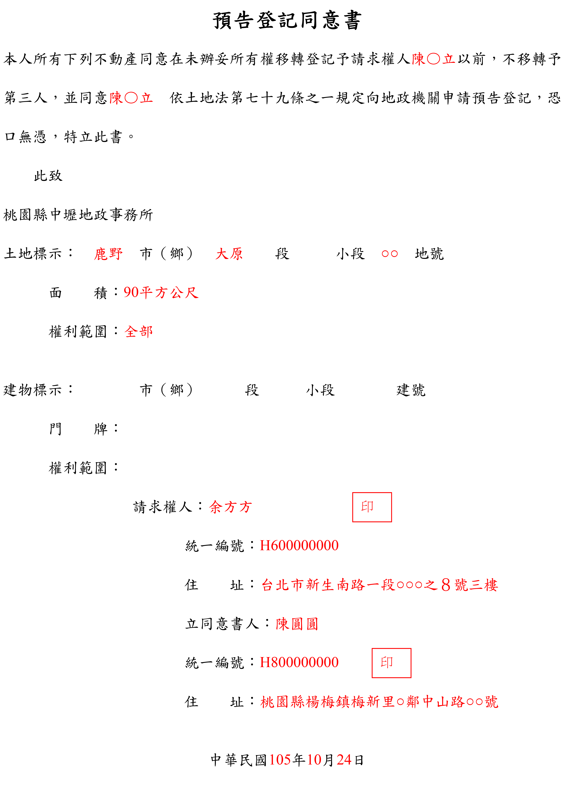
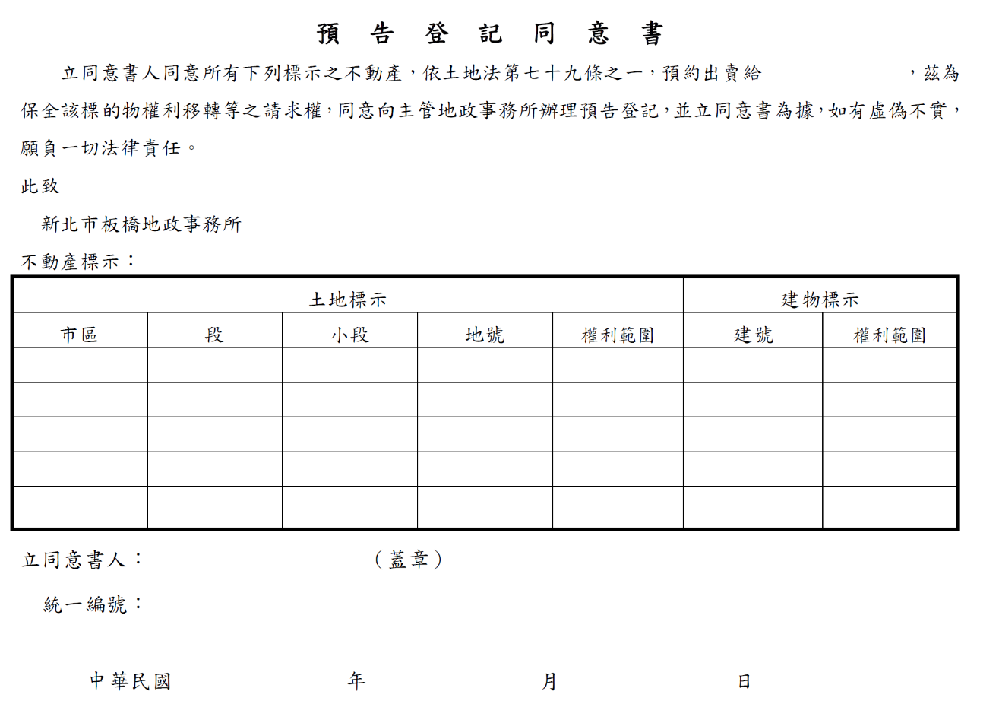
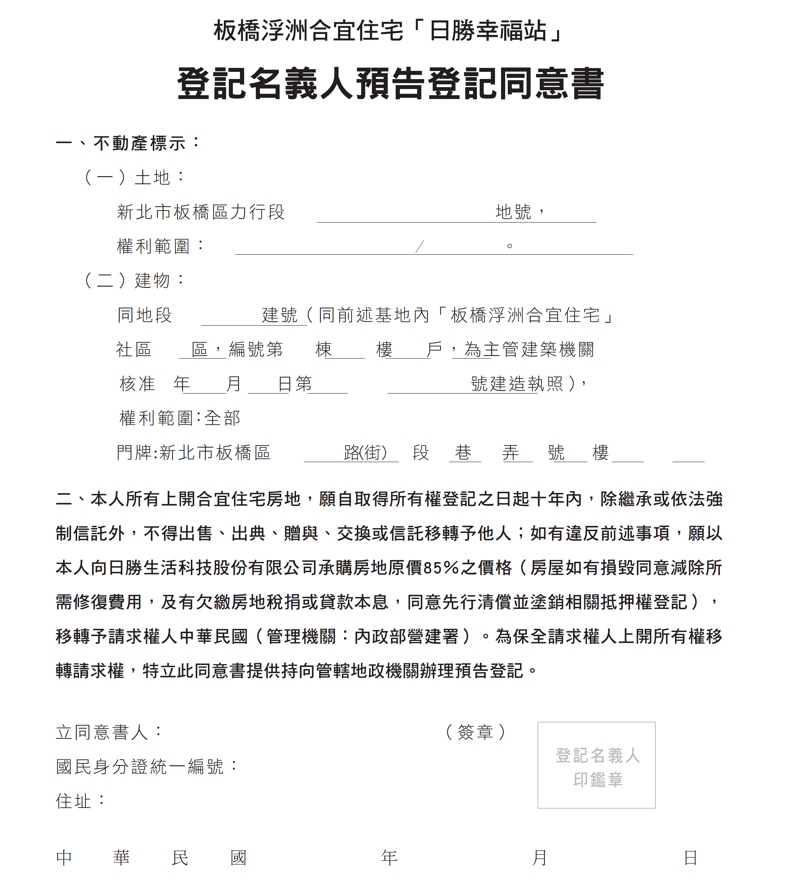
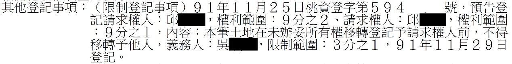
77. 不動產之涵義¶
發布日期: 2020-09-24
下列法律就不動產加以定義：
• (一) 民法第66條：「稱不動產者，謂土地及其定著物，不動產之出產物，尚未分離者，為該不動產之部分。」準此，民法所稱不動產，包括土地與定著物二種。茲分述如下：
-
土地：土地以地籍線界定其範圍，編定地號而為獨立之物。
-
定著物：指固定附著於土地之物。有的定著物可以獨立為物，有的定著物不能獨立為物。前者如建築物、游泳池、加油亭等，後者如橋樑、隧道、軌道等。得獨立為物者，可以編定建號，單獨為交易之標的物；不得獨立為物者，屬於土地之一部分，不可以編定建號，不可以單獨為交易之標的物。
此外，土地上之農作物及附著於土地之礦，均非定著物。農作物尚未與土地分離者，為土地之一部分，故屬於土地。附著於土地之礦，為土地之一部分，故屬於土地。 不動產之定義以民法第66條為主，其他法律如有擴大或縮小其涵義，始有重新定義之必要。如不動產經紀業管理條例、不動產證券化條例等是。
• (二) 不動產經紀業管理條例第4條第1款至第3款規定：「一、不動產︰指土地、土地定著物或房屋及其可移轉之權利；房屋指成屋、預售屋及其可移轉之權利。二、成屋︰指領有使用執照，或於實施建築管理前建造完成之建築物。三、預售屋︰指領有建造執照尚未建造完成而以將來完成之建築物為交易標的之物。」準此，預售屋因尚未興建，故非屬民法之不動產；但不動產經紀業管理條例擴大不動產之涵義，將其涵括在內。
• (三) 不動產證券化條例第4條第1項第1款規定：「不動產：指土地、建築改良物、道路、橋樑、隧道、軌道、碼頭、停車場與其他具經濟價值之土地定著物及所依附之設施，但以該設施與土地及其定著物分離即無法單獨創造價值，土地及其定著物之價值亦因而減損者為限。」準此，不動產範圍包括土地、定著物及能增加土地及其定著物價值之依附設施。由此可知，土地及定著物之依附設施仍屬不動產之範圍，故不動產證券化條例所定義不動產範圍較民法為廣。
此外，下列二種情形，雖對不動產之定義法無明文規定，但由其相關條文，可以略知其不動產之範圍：
- 不動產登記：不動產登記，即土地登記。土地法第37條第1項規定：「土地登記，謂土地及建築改良物之所有權與他項權利之登記。」準此，不動產登記所稱不動產包括土地與建築改良物。又，建築改良物，指附著於土地之建築物或工事（土§5Ⅱ）。此工事，限於可登記之標的物，如無牆之鋼架建物、游泳池、加油站(亭)、高架道路下里民活動中心等（建物所有權第一次登記法令補充規定第9點）。由此可知，不動產登記所稱不動產較民法定義之不動產為狹。
2. 不動產估價：不動產估價師法第14條第1項規定：「不動產估價師受委託人之委託，辦理土地、建築改良物、農作改良物及其權利之估價業務。」又，不動產估價技術規則第114條規定：「權利估價，包括地上權、典權、永佃權、農育權、不動產役權、耕作權、抵押權、租賃權、市地重劃、容積移轉及都市更新權利變換之估價。」準此，農作改良物得為單獨之估價標的物。又，所稱權利，範圍廣泛，除他項物權（包括地上權、典權、永佃權、農育權、不動產役權、耕作權及抵押權等七種）與債權（指租賃權）外，尚包括權利價值轉換（包括市地重劃、容積移轉及都市更新權利變換等三種）。由此可知，不動產估價所稱不動產較民法定義之不動產為廣。¶
注：本文圖片存放於 ./images/ 目錄下
78. 租賃住宅市場發展及管理條例之有關租賃關係消滅之點交程序¶
發布日期: 2020-10-01
以下針對租賃住宅市場發展及管理條例之有關租賃關係消滅之點交程序，彙整相關面向之討論，提供同學參考：
• 一、條文規定：依據租賃住宅市場發展及管理條例第12條：「租賃契約消滅時，租賃住宅之返還，應由租賃當事人共同完成屋況及附屬設備之點交。一方未會同點交，經他方定相當期限催告仍不會同者，視為完成點交。前項點交後尚有遺留物，除租賃當事人另有約定外，經出租人定相當期限催告仍不取回時，視為拋棄其所有權，其所需處理費用，得由押金扣除，不足者，出租人得請求承租人給付。」曾老師悄悄話：其中，完成點交概念有所爭議。
• 二、律師投稿：劉琦富：租賃專法裡的魔鬼，悄悄現身【原文轉自：蘋果新聞網】這個條文初一看，讓人覺得無限美好，租約到期房客不搬走，房東可以定相當期限催告房客點交，期限到了房客還是不點交的話，就視為完成點交。什麼是點交？《強制執行法》第99條說，就是解除債務人（房客）的占有，交付給債權人（房東）。過去租約到期、消滅，房客不搬，房東只能告上法院，經過最多三個審級，多則一、兩年的審理拿到確定判決後，才能聲請法院強制執行讓房客搬走；聰明一點的房東把租約拿去公證約定逕行強制執行條款，也只能在「租約到期」後，聲請法院強制執行。在專法第12條沒有施行前，房客事實上居住之平穩安全法益，跟所有權之有無與占有權源係屬兩事，不是說租約到期房客變成無權占有就該死或是要讓房東予取予求，房東還是要循民事訴訟及執行程序主張其權利，但是專法第12點最莫名其妙的地方在於，直接跳過民事訴訟程序和民事執行程序，讓房東直接點交完畢，那麼到底房東有沒有合法終止租約，誰說了算，過去是法院說了算，現在呢？曾老師悄悄話：完成點交，是否代表可以直接按強制執行規定，解除房客之占有，直接強制遷離？
• 三、內政部回應：劃分承租人居住於租賃住宅內或承租人無居住之事實或他遷不明等不同之情形，刻正研擬點交程序內政部強調，租賃住宅條例為民法特別法，依其第12條規定，出租人於租賃關係消滅後，可訂相當期限催告承租人會同點交；承租人屆期未會同者，視為完成點交，完成點交後，如承租人尚有遺留物經出租人催告仍不取回，該遺留物則視為廢棄物處理。但若承租人仍居住於租賃住宅內，因會涉及人身自由安全問題，因此，內政部正在積極研議應以何種程序處理，才能維護房東的財產權，又不影響房客的人身自由及居住權利。
• 四、法務部回函：為何要劃分不同情形之點交程序？？？（根據法務部108.08.01.法律字第10803510750號函）按民法第455條前段規定：「承租人於租賃關係終止後，應返還租賃物；…。」、第767條第1項規定：「所有人對於無權占有或侵奪其所有物者，得請求返還之。對於妨害其所有權者，得請求除去之。有妨害其所有權之虞者，得請求防止之。」是以，租賃契約因屆期終止、符合法律規定或契約規定提前終止，承租人負有返還租賃物之義務，如未返還者，出租人得依上述規定行使其權利，或提起訴訟請求法院判決返還租賃住宅。次按租賃住宅市場發展及管理條例（下稱租賃住宅條例）於106年12月27日公布，107年6月27日施行，且該條例係為維護人民居住權、保障租賃當事人權益而設，此觀該條例第1條即可得知，故該條例在住宅租賃事務範圍內為民法之特別法，應優先於民法適用（臺灣桃園地方法院108年度壢簡字第125號判決參照）。又該條第12條第1項規定「租賃契約消滅時，租賃住宅之返還，應由租賃當事人共同完成屋況及附屬設備之點交。一方未會同點交，經他方定相當期限催告仍不會同者，視為完成點交。」查上開規定，係於立法院審查會議時，由立法委員提出之修正動議，依審查時提案委員之發言表示：「為避免租賃契約屆期或是終止，承租人先搬離租屋處不願意配合交還，因為實務上常常發生房東、房客點交時有問題，這部分會產生爭議，所以我們針對這部分提出修正動議，…保障租賃關係。」（立法院公報，第106卷，第61期，委員會紀錄，第368頁、第428頁參照）。有關貴部來函說明四依實務狀況區分出租人取回租賃住宅之程序乙節，因民法僅就承租人於租賃關係終止後，應返還租賃物為規定（民法第455條），並未規範返還之點交事宜。是以，有關租賃契約消滅時，租賃住宅返還之點交程序或方式，係依租賃住宅條例第12條之規定。惟就該條條文觀之，似未區分租賃契約消滅時，承租人居住於租賃住宅內或承租人無居住之事實或他遷不明等不同之情形，而有不同之規範。是以，貴部擬區分其不同情形而訂定相異之出租人取回租賃住宅程序，其依據為何？宜請貴部審酌上開條例立法意旨，本於權責予以釐清。
• 五、內政部台內地字第1090260647號令核釋：點交與完成點交之定義(一)租賃住宅市場發展及管理條例第12條第1項規定所稱點交，指承租人返還租賃住宅及附屬設備予出租人，且租賃雙方會同確認其數量及狀態之程序。(二)完成點交後，承租人及出租人之關係如下：
-
承租人就租賃住宅及附屬設備，不負保管責任。
-
出租人就租賃住宅得自由使用收益及依民法或其他法律規定行使相關權利。
-
租賃住宅屋況或附屬設備，因可歸責於承租人之事由，致生毀損或滅失者，出租人仍得依契約或法令規定向承租人請求損害賠償。
• 六、結論：目前看起來，前面完成點交之關係，並未直接賦予出租人可跳過民事訴訟程序，直接對承租人強制遷離之情形。換言之，出租人如經向承租人主張終止租約，但其仍居住於屋內不肯搬遷，仍需提起返還房屋之訴訟，待判決確定後，再聲請強制執行。或許待後續內政部對所謂點交程序是否有更明確之相關規定再予確認。¶
注：本文圖片存放於 ./images/ 目錄下
79. 土地法第107條實例演習¶
發布日期: 2020-10-01
甲有一筆耕地，出租於乙耕種使用。不久，甲將該筆耕地出典於丙，則乙是否有優先承典權？接著，甲再將該筆耕地出售於丁，則乙是否有優先承買權？
【解答】
土地法第107條第1項規定：「出租人出賣或出典耕地時，承租人有依同樣條件優先承買或承典之權。」準此，甲將該筆耕地出典於丙，則乙有優先承典權；接著，甲再將該筆耕地出售於丁，乙有優先承買權。
附帶一提的是，甲將該筆耕地出典於丙，倘乙主張優先承典。日後，甲再將該筆耕地出售於丁，乙得依據土地法第107條主張優先承買，亦得依據民法第919條主張留買。
應注意者，土地法第107條之優先承受權及民法第919條之留買權皆具有物權效力。
上開所稱耕地，指土地法第106條所稱之耕地，而非農業發展條例第3條第11款所稱之耕地。¶
注：本文圖片存放於 ./images/ 目錄下
80. 有關「登記錯誤」與「錯誤登記」之差異¶
發布日期: 2020-10-08
• 一、登記錯誤
依土地登記規則第13條，土地法第六十八條第一項及第六十九條所稱登記錯誤，係指登記事項與登記原因證明文件所載之內容不符者。
登記錯誤，係指准予登記之行政處分並無違誤，僅登記機關辦理登記時未依登記原因證明文件所載內容登記而生登記事項與之不符情事，登記機關依職權或經利害關係人申請而辦理更正該不符部分之登記內容。
• 二、錯誤登記
依土地登記規則第144條第1項，有下列情形之一者，於第三人取得該土地權利之新登記前，登記機關得於報經直轄市或縣(市)地政機關查明核准後塗銷之：A.登記證明文件經該主管機關認定係屬偽造。B.純屬登記機關之疏失而錯誤之登記。＝又稱錯誤登記
依本規則不應登記，純屬登記機關之疏失而錯誤登記，屬於違法行政處分，並非私權有所爭執，民事法院亦無從受理審判，於第三人取得該土地登記權利前，自應由登記機關依職權撤銷原處分，辦理塗銷登記，該塗銷係屬使其效力完全消滅之登記。
因此，登記錯誤與錯誤登記二者之法律關係尚屬有別。
參考內政部98年7月24日內授中辦地字第0980047281號函¶
注：本文圖片存放於 ./images/ 目錄下
81. 市地重劃與區段徵收有關土地增值稅負擔之比較¶
發布日期: 2020-10-08
市地重劃與區段徵收乃政府土地開發之兩種重要手段。惟兩種法律性質迥然不同，前者為視為其原有之土地交換，後者為強制徵收。從其法律性質而衍生之土地增值稅負擔因而有別，比較如下：。
• (一) 市地重劃：土地所有人以原有土地換得新的土地。因新的土地視為其原有（平§62），無取得可言，亦無移轉可言，故不徵土地增值稅。又，原地價照舊（指由重劃前原地價換算為重劃後原地價，以下同），不徵土地增值稅之效果，等同不課徵土地增值稅。區段徵收：土地所有人失去原有土地，再取得新的土地（即抵價地）。因區段徵收而失去土地，免徵土地增值稅（土稅§39-1Ⅱ）。
• (二) 市地重劃：土地所有人所領回之土地，乃延續其原有土地，因此原地價照舊。原地價照舊，表示原地價未更動，故屬於不課徵土地增值稅。區段徵收：土地所有人所領回之土地（即抵價地），屬於原始取得，而非延續其原有土地。因此，須對新的土地另訂原地價，原地價以實際領回抵價地之地價為準（土稅§30-1③）。
• (三) 市地重劃：市地重劃後第一次移轉，其土地增值稅減徵40%（土稅§39Ⅳ）。惟市地重劃後，配偶間相互贈與再移轉第三人，雖屬第二次移轉，但稅法有明定其例外（土稅§28-2Ⅱ），故仍得適用減徵40%之優惠。區段徵收：區段徵收後第一次移轉，其土地增值稅減徵40%（土稅§39-1Ⅱ）。惟區段徵收後，配偶間相互贈與再移轉第三人，因屬第二次移轉，且稅法無明定其例外，故不得適用減徵40%之優惠。
綜上，市地重劃不課徵土地增值稅，且所領回新的土地之原地價照舊；因原地價照舊，日後出售於第三人之土地增值稅較多。區段徵收免徵土地增值稅，且所領回新的土地之原地價採實際領回抵價地之地價；因原地價重新認定，而且較高，日後再出售於第三人之土地增值稅較少，甚至為零。由此可知，就土地增值稅負擔而言，土地所有人參加區段徵收較參加市地重劃有利。¶
注：本文圖片存放於 ./images/ 目錄下
82. 預告登記之塗銷¶
發布日期: 2020-10-15
預告登記係預為保全對於他人土地權利之請求權，而由請求權人檢附登記名義人之同意書及印鑑證明，向該管登記機關所為之限制登記名義人處分其土地權利之登記。其目的在阻止登記名義人對於該土地為有妨害其請求權之處分。
然而，今日專欄提醒預告登記非永久有效、一勞永逸，仍應注意其塗銷情形如下：
-
保全債權請求權實現。如債務履行、條件成就、期限到來，請求權人請求辦理正式登記。
-
保全債權請求權無效、撤銷、契約解除或其他事由而塗銷。
-
無效：如買賣契約無效，債權不發生，預告登記即失其依據，故應予塗銷。
-
撤銷：依民法第412條規定，贈與附有負擔者，如贈與人已為給付而受贈人不履行其負擔時，贈與人得請求受贈人履行其負擔，或撤銷贈與。因此，當父母贈與房地給子女並辦妥預告登記，惟其增與負擔係要求子女需負擔撫養義務，當其未盡義務時，得撤銷該贈與，並塗銷該預告登記。
-
契約解除：買賣契約雙方合意解除，而同意塗銷。
-
其他事由，如請求權罹於時效：依最高法院100年台上608號判決所示，預告登記旨既在保全債權請求權之行使，如該請求權已消滅或確定不發生時，該預告登記亦已失其依據，應予塗銷。故若該所有權移轉登記之請求權，已罹於15年時效而消滅，則該預告登記之目的已無法達成，登記名義人可向法院主張塗銷預告登記。
-
因徵收、法院判決或強制執行而為新登記致塗銷。根據土地法第79條之1第3項規定，預告登記，對於因徵收、法院判決或強制執行而為新登記，無排除之效力。因此，發生徵收、法院判決或強制執行時，預告登記將被塗銷。
第1、2點預告登記之塗銷，應提出原預告登記請求權人之同意書(土登§146I)，或法院判決書，單獨塗銷之。第3點則無須原預告登記請求權人之同意。¶
注：本文圖片存放於 ./images/ 目錄下
83. 土地法第104條實例研習(一)¶
發布日期: 2020-10-15
甲有一筆建地，乙於民國109年9月10日在該地右上角部分辦竣地上權登記，並興建透天房屋一間。丙於民國109年9月15日在該地左下角部分辦竣地上權登記，並興建透天房屋一間。不久，甲將該地全部出售於丁，則何人有優先購買權？優先購買權競合時，何人優先？優先購買權人主張優先購買該地之全部，抑或僅限於各自設定地上權之範圍？
【解答】
• (一) 土地法第104條第1項規定：「基地出賣時，地上權人、典權人或承租人有依同樣條件優先購買之權。房屋出賣時，基地所有權人有依同樣條件優先購買之權。其順序以登記之先後定之。」準此，甲、乙二人均有優先購買權。
• (二) 土地法第104條第1項明定「其順序以登記之先後定之」。亦即優先購買權競合時，優先購買之順序以登記之先後定之。準此，乙於民國109年9月10日辦竣地上權登記，丙於民國109年9月15日辦竣地上權登記。乙之登記先於丙，因此乙之優先購買權先於丙而行使。換言之，甲應先通知乙是否按同樣條件優先購買；倘乙放棄或視為放棄優先購買權，甲再通知丙是否按同樣條件優先購買；倘丙放棄或視為放棄優先購買權，甲始得將該地出售於丁。
• (三) 土地法第104條第1項明定「同樣條件」。亦即優先購買權之行使須以甲出售之同樣條件。鑑於甲出售該地全部，因此乙、丙主張優先購買均須以該地之全部為之，而非以各自設定地上權之範圍。¶
注：本文圖片存放於 ./images/ 目錄下
84. 註記登記-訴訟繫屬事實註記¶
發布日期: 2020-10-22
本次專欄為各位同學說明有關註記登記之一種：「訴訟繫屬事實註記」，屬於較少於參考書提及的實務觀念。
• 一、假設情境某甲(賣方)與乙(買方)發生A地所有權移轉糾紛，刻正進行請求A地所有權移轉訴訟中，而後甲自認不妙，欲將A地先行出售給丙，丙為善意第三人，在乙未申辦限制登記(假處分)情形下，當丙登記完畢後，即使判決確認甲應移轉A地給乙，卻面臨丙主張善意取得之問題。
• 二、法源依據民事訴訟法第254條第5項規定：「訴訟標的基於物權關係，且其權利或標的物之取得、設定、喪失或變更，依法應登記者，於事實審言詞辯論終結前，原告得聲請受訴法院以裁定許可為訴訟繫屬事實之登記。」
• 三、意義訴訟繫屬註記，是指某項「物權」的取得、設定、變更或喪失，必須經政府機關登記才能生效(例如土地或房屋所有權、抵押權、地上權等等)，當這項物權成為民事訴訟審判的對象時，該訴訟的原告可以在事實審言詞辯論終結前，向審理的法院聲請裁定准許在這項權利的登記事項內，註記目前有訴訟繫屬的事實，並且在裁定准許後，以此裁定向登記機關申辦登記的制度。（黃明發，2017）
• 四、目的主要是為使受讓訴訟標的權利之第三人有知悉該訴訟繫屬之機會，避免其遭受不利益，及減少受讓人於知悉有訴訟繫屬之情形而仍為受讓時，因主張善意取得而生之紛爭，以保障訴訟繫屬相對人及受讓人之權益，防止紛爭擴大（內政部內授中辦地字第 1026033268 號函）。換言之，這項制度的目的，一是保護欲取得這項物權的善意第三人(指不知情)，避免因為不知這項權利涉訟，而遭受意外的損失，導致紛爭擴大；另一是保護判決的效力，避免判決效力因為這項權利移轉於善意第三人而中斷，造成原告就算勝訴也不能實現權利（黃明發，2017）。
• 五、登記內容配合上述規定，於土地登記簿（所有權部或他項權利部）登記內容為：「（一般註記事項）依○○法院○○年○○月○○日○字第○○號函證明文件辦理註記，本件不動產現為該院○○年度（訴）字第○○號○○案件訴訟中」
• 六、效力訴訟繫屬事實註記，並無禁止登記名義人處分其不動產權利之效力，而訴訟繫屬事實註記實際上並無「信賴登記善意取得」之適用，只有「使第三人有知悉之機會，避免其遭受不利益」之效力而已（參內政部台內中地字第8979831號函、內授中辦地字第0930724544號函）。換言之，訴訟繫屬事實註記，只具有告知之效力而已，目的在使第三人於受讓訴訟標的不動產時，有知悉該標的處在訴訟繫屬之狀態，提供該第三人決定是否仍願受讓之資訊，或決定另選標的，以免日後遭受損害。（林永汀，2018）第三人買受訟爭不動產，辦理移轉所有權登記時，應將該訴訟繫屬事實註記內容轉載，依內政部民國93年5月13日內授中辦地字第0930006501號函釋，直到訴訟終結後，再由當事人或利害關係人聲請法院發給證明，持向該管登記機關請求塗銷註記。惟倘若訴訟當事人持已起訴證明向登記機關申請訴訟繫屬註記登記時，如該訴訟標的不動產已移轉(含於訴訟繫屬前移轉)登記予第三人者，除該第三人係屬非得主張善意取得之情形(如繼承移轉取得)外，地政機關將不予辦理訴訟繫屬註記登記。另訴訟當事人如認為該第三人非為善意受讓訴訟標的不動產，因屬私權爭執範疇，應由其訴請法院判決，或另循民事訴訟保全程序為之。（參內政部台內地字第1020375043號令）
• 七、影響由於訴訟繫屬註記常會造成被註記的物權利用上的障礙，例如土地所有權被訴訟繫屬註記後，銀行不願受理該筆土地的抵押貸款，或已經向銀行貸款的土地被訴訟繫屬註記後，銀行因此縮銀根要求立即還款等等，都會對這項權利的擁有者造成損失，所以前述的法律也賦予被註記的一方向法院提出異議的權利，以及在訴訟終結後，要求法院發給證明，以向登記機關辦理塗銷註記的權利。（黃明發，2017）
參考文獻：
- 林永汀，2018，訴訟繫屬事實註記之效力，台中市地政學會會刊，201201(第16期)：第9-15頁。
2. 黃明發，2017，從地政訴訟類型─談確認經界之訴、訴訟繫屬註記、假處分及損害賠償等實務問題，地政講堂。¶
注：本文圖片存放於 ./images/ 目錄下
85. 土地法第104條實例研習(二)¶
發布日期: 2020-10-22
甲有一筆建地，甲於民國109年10月9日訂立合約將該地右下角部分出租於乙，乙隨即興建透天房屋一間。甲又於民國109年10月12日訂立合約將該地左上角部分出租於丙，丙隨即興建透天房屋一間。今，甲將該地全部出售於丁，乙、丙二人均主張優先購買各自承租土地部分，是否可行？
【解答】
• (一) 土地法第104條第1項規定：「基地出賣時，地上權人、典權人或承租人有依同樣條件優先購買之權。房屋出賣時，基地所有權人有依同樣條件優先購買之權。其順序以登記之先後定之。」準此，乙、丙二人均有優先購買權。
• (二) 土地法第104條第1項明定「同樣條件」。亦即優先購買權之行使須以甲出售之同樣條件。鑑於甲出售該地全部，因此乙、丙主張優先購買均須以該地全部為之，而不得以各自承租土地部分為之。故乙、丙二人均主張優先購買各自承租土地部分，為不可行。
• (三) 乙、丙二人優先購買權競合時，依土地法第104條第1項規定「其順序以登記先後定之」。然，租賃權為債權，無須辦理登記，因此以訂立租約之先後定之。乙於民國109年10月9日訂立租約，丙於民國109年10月12日訂立租約。乙之租賃權成立在先，丙之租賃權成立在後，因此乙之優先購買權先於丙而行使。¶
注：本文圖片存放於 ./images/ 目錄下
86. 土地買賣未辦竣權利移轉登記之處罰¶
發布日期: 2020-10-29
法規可能已修正
本文發布（2020-10-29）後，文中引用的 土地稅法第54條（2025-01-24 修正）有修正，內容可能與現行規定不同，請以全國法規資料庫的現行條文為準。
榮耀君於109年1月1日，向文昌君購買A地號土地，未至地政事務所辦竣所有權買賣移轉登記，旋即於同年3月3日再行出售給俊明君，土地移轉現值合計200萬，並由俊明君辦竣所有權移轉登記。榮耀君左手買、右手賣賺了一筆，試問違反何項法規？
• 一、法源依據
分別主要有兩項條文提及：
• (一) 依土地稅法第54條第2項規定：「土地買賣未辦竣權利移轉登記，再行出售者，處再行出售移轉現值百分之二之罰鍰。」
• (二) 依平均地權條例第81條規定：「土地買賣未辦竣權利移轉登記，承買人再行出售該土地者，處應納登記費二十倍以下之罰鍰。」
此外，依平均地權條例第83條，「以經營土地買賣，違背土地法律，從事土地壟斷、投機者，處三年以下有期徒刑，並得併科七千元以下罰金。」此案例亦有投機問題，也有受此處罰之風險。
• 二、適用場合
-
所稱「買賣」，指當事人約定一方移轉財產權於他方，他方支付價金之契約而言。
-
所稱「土地買賣未辦竣權利移轉登記」指土地權利尚未經登記機關依土地登記規則第六條登記完畢而言。
-
所稱「再行出售」，指承買人就所承買土地尚未辦竣權利移轉登記前，即再行出售他人成立「債權契約」而言。
• 三、處罰對象
處以罰款之對象，指買賣土地未辦竣移轉登記之權利人（承買人），亦即未辦竣移轉登記再行出售之義務人（出賣人）而言。
原則上會由國稅局函送買賣合約書、土地增值稅申報書、資金流程說明書等事證，認定榮耀君未辦竣權利移轉登記即再行出售。
• 四、罰緩計算
• (一) 土地稅法目前主要依據土地稅法予以處罰，處再行出售移轉現值2%之罰鍰，即200萬*2%＝4萬。處以罰鍰逾期不繳納時，應由原處分機關依行政執行法執行之。 惟注意，依「稅務違章案件減免處罰標準」第18條第2項規定，依土地稅法第五十四條第二項規定應處罰鍰案件，其移轉現值在新臺幣一百萬元以下者，或辦竣權利移轉登記前經依規定撤回或註銷移轉現值申報者，免予處罰。
• (二) 平均地權條例至於平均地權條例罰緩之計徵如下：
-
自當事人訂立買賣契約之日起二個月內再行出售者，處應納登記費一倍之罰鍰，逾二個月者，每逾一個月加處一倍，以至二十倍為限。
-
前款登記費之計算，以當事人訂定買賣契約之日該土地之當期申報地價為準。
參考資料：
-
台中市政府地方稅務局。
-
最高行政法院101年度4月份第2次庭長法官聯席會議
3. 平均地權條例第八十一條補充規定¶
注：本文圖片存放於 ./images/ 目錄下
87. 地價稅與房屋稅合併課稅¶
發布日期: 2020-10-29
地價稅為土地持有稅，房屋稅為建物持有稅。兩者宜分開課稅，抑或合併課稅？爭議不休。
• (一) 主張分開課稅之理由：
- 土地與建物之性質不同：土地不會折舊，但會增值；建物不會增值，但會折舊。因此，土地價值隨時間經過而遞增，建物價值隨時間經過而遞減。如圖(一)所示。
[圖片1]
- 土地與建物之政策不同：土地愈集約利用，每建坪之地價稅愈來愈少。土地愈集約利用，每建坪之房屋稅愈來愈多。如圖(二)所示，因此，地價稅會促進土地利用，房屋稅會阻礙土地利用。故地價稅應從重，房屋稅應從輕。
[圖片2]
- 土地與建物之稅率不同：現行地價稅採累進稅，現行房屋稅採比例稅，兩者難以合併。
總之，土地法第145條規定：「土地及其改良物之價值，應分別規定。」據此，土地與建物應分別定價，分開課稅。
• (二) 主張合併課稅之理由：
-
現制恐造成稅基流失或重複課稅：
-
稅基流失：現行採土地與建物分開定價，可能發生稅基流失。如圖(三)所示，假定整體房地市價為□AEO′O，土地由左而右定價，土地價值原點為O，定價在C；建物由右而左定價，建物價值原點為O′，定價在F，則□ABCO為地價稅之稅基，□DEO′F為房屋稅之稅基，□BDFC為稅基流失部分（即圖上之空白部分）。
[圖片3]
- 重複課稅：現行採土地與建物分開定價，可能發生重複課稅。如圖(四)所示，假定整體房地市價為□AEO′O，土地由左而右定價，土地價值原點為O，定價在C；建物由右而左定價，建物價值原點為O′，定價在F，則□ABCO為地價稅之稅基，□DEO′F為房屋稅之稅基，□DBCF為重複課稅部分（即圖上之網狀部分）。
[圖片4]
-
交易習慣為房地一體：目前，我國房地產習慣以建物及其基地一體進行交易，故房地交易市價難以拆分為多少歸屬於土地，多少歸屬於建物。又，土地與建物分開定價後合計，難以與房地交易市價相等。
-
採行自動估價系統進行評價：所謂自動估價系統（Automated Valuation Model，簡稱AVM），指應用計量模型，藉助電腦運算，查估多數量不動產價格。其方法首先蒐集交易實例（即樣本），再以交易實例建立計量模型，最後以計量模型推估不動產價格。採行AVM，可以更精準反映市價，減少人為控制因素，並達成省時、省力、省費之要求。
• (三) 結論：
-
地價稅與房屋稅合併課稅，屬於稅制變革。變革後，如房地所有權人較過去稅負增加，等同加稅，必定反彈。因此，茲事體大，宜從長計議。
-
運用自動估價系統之困難如下：
-
樣本數太少：雖然現行內政部已實施不動產交易實價登錄制度，但有些地方交易不熱絡，缺乏實例資料。另外，內政部之實價登錄資料，未盡詳細，有的變數資料缺乏，致應用效果受限。
-
異質性太大：不動產之異質性愈大，AVM愈難應用。公寓大樓應用效果最佳，其次為透天房屋，再次為純土地，特殊產品（如百貨公司、醫院、旅館等）最難應用。
-
影響因子太多：影響不動產價格之因子很多，建立模型時，將選擇一些影響因子，捨棄另一些影響因子。如果捨棄者為主要影響因子，則計量模型之解釋能力將變差。另外，有的影響因子難以量化造成應用困難。
總之，推動自動估價系統還有一段很長的路要走。
文章圖片¶

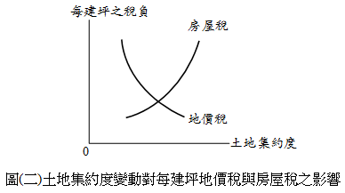


88. 出售農地是否需要課徵房地合一所得稅？¶
發布日期: 2020-11-05
法規可能已修正
本文發布（2020-11-05）後，文中引用的 所得稅法第4條之5（2021-04-28 修正）有修正，內容可能與現行規定不同，請以全國法規資料庫的現行條文為準。
根據所得稅法第4條之5規定，房屋、土地有下列情形之一者，免納所得稅：
• (一) 個人與其配偶及未成年子女符合下列各目規定之自住房屋、土地：
-
個人或其配偶、未成年子女辦竣戶籍登記、持有並居住於該房屋連續滿六年。(繼承或受遺贈取得者，得將被繼承人或遺贈人持有期間合併計算)
-
交易前六年內，無出租、供營業或執行業務使用。
-
個人與其配偶及未成年子女於交易前六年內未曾適用本款規定。
其免稅所得額，以按第十四條之四第三項規定計算之餘額不超過四百萬元為限，計算之餘額超過四百萬元部分，稅率為百分之十。
※立法目的：保障自住需求，落實居住正義，規定符合自住條件定額免稅、超額減徵。
• (二) 符合農業發展條例第三十七條及第三十八條之一規定得申請不課徵土地增值稅之土地。
※立法目的：為配合農業政策鼓勵農地作農業使用之減免規定，故移轉土地得申請不課徵土地增值稅須以「作農業使用」為要件。
• (三) 被徵收或被徵收前先行協議價購之土地及其土地改良物。
※立法目的：鼓勵民間配合政府基於政策目的推動之土地開發及徵收政策。
• (四) 尚未被徵收前移轉依都市計畫法指定之公共設施保留地。
※立法目的：衡平公共設施保留地之權益。
依據前列第二款規定，農地無論是否申請適用不課徵土地增值稅，均應先向公所申請「農業用地作農業使用證明書」或「符合農發條例第38條之1土地作農業使用證明書」後，以佐證農地移轉時確係供作農業使用，俾符合得申請不課徵土地增值稅而免徵房地合一稅。
因此，出售農地如符合農用要件，則免納房地合一所得稅；未符合農用要件者，仍應申報房地合一所得稅，如計算後有所得餘額，將予課徵。
參考資訊：財政部北區國稅局，2020-10-08，出售未作農業使用之農地，房地合一稅不能免¶
注：本文圖片存放於 ./images/ 目錄下
89. 土地法第34條之1實例研習(一)¶
發布日期: 2020-11-05
甲、乙、丙三人共有一筆土地，應有部分各三分之一。甲、乙二人同意出售該地於丁，但丙反對，則出售是否可行？嗣出售因故作罷。不久，丙死亡，由戊、己、庚三人公同共有繼承，應繼分各三分之一。今，甲、乙二人同意出售該地於辛，但戊、己、庚三人反對，則出售是否可行？
【解答】
• (一) 土地法第34條之1第1項規定：「共有土地或建築改良物，其處分、變更及設定地上權、農育權、不動產役權或典權，應以共有人過半數及其應有部分合計過半數之同意行之。但其應有部分合計逾三分之二者，其人數不予計算。」準此，甲、乙二人同意，但丙反對，同意之共有人人數為[圖片1]，已逾半數；且同意之應有部分為[圖片2]，已逾半數。故出售可行。
• (二) 土地法第三十四條之一執行要點第6點第3項規定：「分別共有與公同共有併存之土地或建物，部分公同共有人已得依本法條規定處分其公同共有之應有部分，且另有分別共有之共有人同意處分全部共有物者，於計算本法條第一項共有人數及其應有部分時，該公同共有部分，以同意處分之人數及其潛在應有部分併入計算。」準此，甲、乙二人同意，戊、己、庚反對，雖同意之應有部分為[圖片3]，已逾半數，然同意共有人人數為[圖片4]，未逾半數。又，同意之應有部分剛好為[圖片5]，而未逾[圖片6]，因此人數仍應予計算。故出售不可行。
文章圖片¶

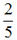
90. 開發影響費與國土保育費、影響費之比較¶
發布日期: 2020-11-12
剛好有同學問到區域計畫法下非都市土地使用管制之開發影響費，與國土計畫法之國土保育費、影響費的差異，本週專欄整理如下表，供同學們參考：
| 項目 | 開發影響費 | 國土保育費 | 影響費 |
|---|---|---|---|
| 項目 | 開發影響費 | 國土保育費 | 影響費 |
| 法源 | 區域計畫法第15條之3；非都市土地使用管制第26條 | 國土計畫法第26條 | 國土計畫法第26條 |
| 定義 | 因土地開發涉及土地使用分區或使用地性質變更， 而對開發區周圍產生公共設施服務水準及其他公共利益之 影響，向申請開發者所徵收之費用 |
考量使用許可後對於整體環境有一定程度之衝擊影響， 且國土計畫法對於國土保育地區、 農業發展地區及海洋資源地區， 均有不同程度禁止或限制使用之規定， 為維護整體環境及公共利益原則下向使用者所收取之費用 |
基於使用許可獲准後，將帶來地區性之開發活動， 產生服務人口成長與地方經濟所需之公共設施需求問題， 以及伴隨開發活動所可能造成之地區環境衝擊問題， 應由造成外部成本之開發者負擔之費用 |
| 性質 | 成長付費 | 特別公課 | 成長付費 |
| 收取單位 | 直轄市、縣(市)政府 | 中央主管機關 | 直轄市、縣(市)主管機關 |
| 收取時機 | 核准開發許可後， 申請辦理使用分區變更或使用地變更編定異動登記前(如 屬變更開發計畫而無變更分區及使用地， 則另載明繳交期限) |
核發使用許可案件後，使用地依使用計畫內容申請變更前 | 核發使用許可案件後，使用地依使用計畫內容申請變更前 |
| 支出用途 | 改善或增建相關公共設施之用 | 辦理國土保育有關事項之用 | 改善或增建相關公共設施之用 |
| 繳交方式 | 原則繳現金，例外得以使用許可範圍內可建築土地抵充之 | 繳現金 | 原則繳現金，例外得以使用許可範圍內可建築土地抵充之 |
| 基金/專戶 | 直轄市、縣市非都市土地開發影響費基金(或專戶) | 國土永續發展基金 | 直轄市、縣（市）影響費基金(或專戶) |
注：本文圖片存放於 ./images/ 目錄下
91. 土地法第34條之1實例研習(二)¶
發布日期: 2020-11-12
甲、乙、丙三人共有一筆土地，應有部分各三分之一。之後，丙死亡，由A、B、C、D、E五人公同共有繼承，應繼分各五分之一。今，甲、A、B、C四人同意出售該地於丁，但乙、D、E三人反對，則出售是否可行？
【解答】
土地法第34條之1第1項規定：「共有土地或建築改良物，其處分、變更及設定地上權、農育權、不動產役權或典權，應以共有人過半數及其應有部分合計過半數之同意行之。但其應有部分合計逾三分之二者，其人數不予計算。」又，土地法第三十四條之一執行要點第6點第3項規定：「分別共有與公同共有併存之土地或建物，部分公同共有人已得依本法條規定處分其公同共有之應有部分，且另有分別共有之共有人同意處分全部共有物者，於計算本法條第一項共有人數及其應有部分時，該公同共有部分，以同意處分之人數及其潛在應有部分併入計算。」準此，甲、A、B、C四人同意，但乙、D、E三人反對，同意之共有人數為[圖片1]，已逾半數，且同意之應有部分與潛在應有部分（指應繼分）為[圖片2]，已逾半數，故出售可行。
文章圖片¶
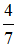
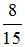
92. 交換不適用土地法第34條之1多數決¶
發布日期: 2020-11-19
以往部分文章提到共有物與他人土地交換得適用多數決辦理，惟根據內政部109年8月6日台內地字第1090129832號函，認為共有人以交換為原因辦理所有權移轉登記無土地法第34條之1第1項規定之適用，其理由如下，同學們記得準備：
-
交換土地或建物而移轉所有權，性質上屬處分行為（物權行為）。惟倘由多數共有人代理少數共有人約定以土地或建物所有權相互交換，其交換位置及條件等決定難謂合理，且本法條於交換未設有優先購買權之衡平機制，勢必侵害少數共有人權益，未能符合財產權保障之要求。
-
又於交換所有權移轉登記後，該共有關係仍維持於相互移轉後所取得之共有不動產標的上，亦與本法係為解決共有不動產糾紛之目的未合。
因此，共有人以交換為原因辦理所有權移轉登記自無本法條第1項規定之適用，依民法第819條第2項及第828條第3項規定，應經共有人全體同意。¶
注：本文圖片存放於 ./images/ 目錄下
93. 紅單交易¶
發布日期: 2020-11-19
何謂「紅單交易」？政府如何遏止紅單交易？
【解答】
• (一) 紅單交易之意義：建設公司擬推出之預售案，在尚未取得建造執照前，由購屋者支付一筆定金，取得購屋優先權。
• (二) 遏止之道
-
裁罰業者：依公寓大廈管理條例第58條第1項規定：「公寓大廈起造人或建築業者，非經領得建造執照，不得辦理銷售。」準此，建設公司尚未領得建造執照而從事紅單交易，主管機關得處新台幣4萬元以上20萬元以下罰鍰，並得限期改善；屆期不改善者，得連續處罰。
-
追查漏稅：購屋者之紅單轉手所得，如未確實申報綜合所得，補稅重罰。
3. 專案稽查：聯合地政單位、財稅單位、消保單位等，針對預售個案進行專案稽查，除稽查紅單交易外，尚包括買賣契約書是否違反定型化契約之規定、代銷營業處所是否違反不動產經紀業管理條例之規定、廣告是否有誇大不實等。¶
注：本文圖片存放於 ./images/ 目錄下
94. 需求曲線後彎（需求法則例外的幻覺）¶
發布日期: 2020-11-26
我的台中土地經濟學課程即將於下週日開課，有興趣同學歡迎來聽看看。今日專欄為各位說明有關需求曲線後彎的情形，而經濟學則認為這是一種需求法則例外的幻覺：
當地價快速上漲，土地投機盛行，買方預期價格會持續上漲，故反而追漲不追跌，使需求線往右移動，而如果右移幅度夠大，則價格提高反而帶來更多需求量，使結果看起來像是需求法則的例外情況，類似季芬財（Giffen goods）現象。
以下圖為例，在D需求線上，當地價由Pa上升至Pb，土地需求量理應由Qa減至Qb，但若消費者預期價格上漲，而使需求線由D右移至D1，則對應於Pb，需求量反而增加為Qc。從事後結果來看(a點移動至c點)，[圖片1]線段似乎為正斜率的需求線。但實際上，[圖片2]並不是需求線，只是不同需求線上的點，移動所形成的價量軌跡。
[圖片3]
文章圖片¶
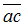
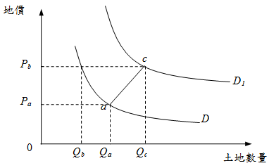
95. 不動產合併得否適用土地法第34條之1第1項之多數決¶
發布日期: 2020-11-26
不動產合併為不動產分割之反向行為，故應與不動產分割適用土地法第34條之1第1項類似。
不動產合併有權利合併與標示合併之分。茲分述如下：
• (一) 權利合併：屬於土地法第34條之1第1項之「處分」，然各共有人合併後所得到之應有部分，難以公平合理；況所有權人不同時，應檢附全體所有權人協議書（地籍測量實施規則第224條第2項第1款）。因此，土地法第34條之1第1項之處分，不包括權利合併。換言之，權利合併不得適用土地法第34條之1第1項之多數決。
• (二) 標示合併：非屬於土地法第34條之1第1項之「處分」，但屬於土地法第34條之1第1項之「變更」。因此，標示合併得適用土地法第34條之1第1項之多數決。¶
注：本文圖片存放於 ./images/ 目錄下
96. 代理申辦土地登記¶
發布日期: 2020-12-03
今日專欄談有關代理他人申辦土地登記之限制：
• 一、非地政士能否代理他人申辦土地登記？
可以。若非取得開業執照之地政士或律師，亦可代理他人辦理案件，但會有次數的限制。非地政士同1年內於同一登記機關申請超過2件，或曾於同一登記機關申請超過5件，登記機關應不予受理，但其權利人與義務人與前案相同者，不在此限（內政部102年12月27日內授中辦地字第1026652564號令）。非地政士代理送件時，應於登記申請書備註欄簽註切結下列事項：委託人切結：「本人未給付報酬予代理人，如有虛偽不實，願負法律責任。」；代理人切結：「本人並非以代理申請土地登記為業，且未收取報酬，如有虛偽不實，願負法律責任。」並由委託人及代理人分別簽章。
• 二、誰得以代理他人登記為業？
地政士與律師。依據地政士法第16條規定，地政士得執行代理申請土地登記事項。此外，律師法第20條第2項規定：「律師得辦理商標、專利、工商登記、土地登記及其他依法得代理之事務。」；另依內政部86年4月14日台(86)內地字第8675020號函頒「律師辦理土地登記代理業務聯繫要點」第1點規定：「律師依律師法第20條第2項之規定向地政機關申辦土地登記代理業務時，應親自到場，並出示律師公會會員證供地政機關收件人員核對。」。是以，律師自可依上開規定向地政機關代理申辦土地登記案件。¶
注：本文圖片存放於 ./images/ 目錄下
97. 房地交易所得稅計算實例¶
發布日期: 2020-12-03
甲於民國108年10月3日買入一間房地，買賣價格1,000萬元，甲隨即於民國109年5月15日賣出該房地，買賣價格1,200萬元。甲於買入時繳交契稅24萬元及印花稅0.4萬元，持有期間繳交工程受益費5萬元，賣出時繳交土地增值稅10萬元（土地漲價總數額50萬元，土地增值稅率20%，50x20%=10）。試問甲出售該房地應繳納多少房地交易所得稅？
【解答】
• (一) 房地交易所得：(1,200–1,000)–24–0.4–5–1,200x5%-50=60.6
• (二) 房地交易所得稅：民國108年10月至民國109年5月，持有期間7個月，稅率45%。60.6x45%=27.27答：甲應繳納房地交易所得稅27.27萬元。¶
注：本文圖片存放於 ./images/ 目錄下
98. 策略性更新地區¶
發布日期: 2020-12-10
法規可能已修正
本文發布（2020-12-10）後，文中引用的 都市更新條例第65條（2024-11-13 修正）有修正，內容可能與現行規定不同，請以全國法規資料庫的現行條文為準。
今日專欄為各位整理有關策略性更新地區之相關概念
首先，請各位同學參考下列新聞：新北市中和區保二總隊都更案招商 全國首件策略性都更案【新聞來源：中時新聞網】（由新北市政府同意國家住都中心自行實施或經公開評選委託都市更新事業機構為實施者，實施都市更新事業）
• 一、劃定目的策略性更新地區內之都市更新事業計畫面積達一定規模以上者，得突破現行都市更新容積獎勵限制，對於促進都市更新事業，達成都市土地有計畫之再開發利用、復甦都市機能、改善居住環境、增進公共利益之目標。
• 二、劃定地區根據都市更新條例第8條規定，有下列各款情形之一時，各級主管機關得視實際需要，劃定或變更策略性更新地區，並訂定或變更都市更新計畫(都更§8)：(1)位於鐵路場站、捷運場站或航空站一定範圍內。（中和保二總隊即依此款劃定）(2)位於都會區水岸、港灣周邊適合高度再開發地區者。(3)基於都市防災必要，需整體辦理都市更新者。(4)其他配合重大發展建設需要辦理都市更新者。
• 三、容積獎勵依據都市更新條例第65條第1項後段，各級主管機關依第八條劃定或變更策略性更新地區，屬依第十二條第一項規定方式辦理（公辦都更），且更新單元面積達一萬平方公尺以上者，其獎勵後之建築容積不得超過各該建築基地二倍之基準容積或各該建築基地零點五倍之基準容積再加其原建築容積，不受都市計畫法第八十五條所定施行細則基準容積加計增加建築容積總和上限之限制。¶
注：本文圖片存放於 ./images/ 目錄下
99. 土地登記損害賠償¶
發布日期: 2020-12-10
土地法第68條第1項規定：「因登記錯誤遺漏或虛偽致受損害者，由該地政機關負損害賠償責任。但該地政機關證明其原因應歸責於受害人時，不在此限。」準此，倘造成損害之原因可歸責於受害人，地政機關不負賠償責任；倘造成損害之原因不可歸責於受害人，地政機關應單獨負起無過失賠償責任。茲舉例說明如下：
• (一) 損害之原因可歸責於受害人：詐騙集團甲謊稱可以高額貸款，乙遂將其土地權狀、印鑑章及身分證等文件交付於甲辦理貸款，甲擅將其土地出售於善意之丙；甲取得價款後，不知去向。此時，丙依土地法第43條取得土地所有權，不受影響。受害人乙不應將土地權狀、印鑑章及身分證等文件交付於甲，故損害之原因可歸責於受害人，地政機關不負損害賠償責任。
• (二) 損害之原因不可歸責於受害人：乙長年旅居國外，詐騙集團偽造乙之相關證件，將乙之土地出售於善意之丙；甲取得價款後，不知去向。此時，丙依土地法第43條取得土地所有權，不受影響。受害人乙之土地權狀、印鑑章及身分證等文件均妥為保管，未交付給任何人，故損害原因不可歸責於受害人，地政機關應負損害賠償責任。¶
注：本文圖片存放於 ./images/ 目錄下
100. 說明登記對抗主義的意義及情形¶
發布日期: 2020-12-17
• (一) 債權約定物權化(內部關係公示化)：
-
分管約定或決定：不動產共有人間關於共有物使用、管理、分割或禁止分割之約定或依第八百二十條第一項規定所為之決定，於登記後，對於應有部分之受讓人或取得物權之人，具有效力。(民§826-1)
-
流抵約定：約定於債權已屆清償期而未為清償時，抵押物之所有權移屬於抵押權人者，非經登記，不得對抗第三人。(民§873-1)
-
絕賣條款：典權附有絕賣條款非經登記，不得對抗第三人。(民§913II)
-
信託登記：以應登記或註冊之財產權為信託者，非經信託登記，不得對抗第三人。(信§4)
• (二) 用益物權設定目的及使用方法登記：
-
地上權(民§836-2)：地上權人應依設定之目的及約定之使用方法，為土地之使用收益；未約定使用方法者，應依土地之性質為之，並均應保持其得永續利用。前項約定之使用方法，非經登記，不得對抗第三人。
-
農育權(民§850-3)：農育權準用民§836-2。
-
不動產役權(民§859-2)：不動產役權準用民§836-2。
• (三) 事實行為登記：
-
地上權(民§836-1)：土地所有權讓與時，已預付之地租，非經登記，不得對抗第三人。
-
農育權(民§850-9)：農育權準用民§836-1。
3. 不動產役權(民§859-2)：不動產役權準用民§836-1。¶
注：本文圖片存放於 ./images/ 目錄下
101. 預售屋轉售之稅負¶
發布日期: 2020-12-17
一般房地出售應繳納土地增值稅、契稅及房地合一所得稅。然，民眾購買預售屋，在尚未辦理產權登記前，轉手再出售於第三人，其所出售的是「權利」（指不動產登記請求權），並非「房地」；所獲取利益為出售「權利」之所得，並非出售「房地」之所得。因此，預售屋轉售不徵土地增值稅、契稅及房地合一所得稅，而是課徵綜合所得稅。
最近，房地產回溫，部分地區炒作「紅單交易」。紅單轉售之稅負同上。¶
注：本文圖片存放於 ./images/ 目錄下
102. 三類謄本申請資格¶
發布日期: 2020-12-24
此次地特四等有考到三類謄本，今日專欄即說明有關土地登記三類謄本之申請資格：
第一類：登記名義人或其他依法令得申請者例如：因強制執行事件或法院訴訟需要，持憑法院通知文件者
第二類：任何人
第三類：登記名義人、具有法律上通知義務或權利義務得喪變更關係之利害關係人例如：
• (一) 依土地法第三十四條之一規定就共有不動產處分、變更或設定地上權、農育權、不動產役權或典權之共有人：得申請同一地(建)號之他共有人之謄本，並檢附切結書或契約書正本。但區分所有建物之基地為共有者，不適用之。
• (二) 依民法第八百二十三條第一項或第八百二十四條第一項規定請求分割共有不動產之共有人：得申請同一地(建)號之他共有人之謄本，並檢附切結書正本。但區分所有建物之基地為共有者，不適用之。
• (三) 依民法第四百二十六條之二、第九百十九條或土地法第一百零四條規定出賣基地或房屋之所有權人：基地所有權人，得申請建物所有權人、地上權人、典權人之謄本，並檢附買賣契約書正本；房屋所有權人，得申請基地所有權人之謄本，並檢附最近一期之房屋稅繳款書、稅籍證明或設籍之戶籍證明文件等及買賣契約書正本。但房屋已辦理登記者，僅檢附買賣契約書正本。
• (四) 依農地重劃條例第五條規定出售耕地之所有權人：得申請同一地號之他共有人、毗連耕地之所有權人之謄本，並檢附買賣契約書正本。
• (五) 公寓大廈管理委員會主任委員或管理負責人：得申請同一公寓大廈所有權人之謄本，並檢附主管機關同意備查文件(有註明主任委員或管理負責人者)及公寓大廈管理組織報備證明或其他足資證明之文件正本，於申請書並應載明執行之法令依據。
• (六) 都市更新單元內所有權人、都市更新籌備會（小組）代表人或（預定）實施者：得申請同一更新單元範圍內及其毗鄰土地之所有權人之謄本，並依下列規定辦理：
-
所有權人：檢附擬劃定或已劃定更新單元內土地及建物登記簿所載所有權人數均超過十分之一之所有權人同意書或所持有土地及建物面積均超過總登記面積十分之一之所有權人同意書（載明更新單元範圍、土地及建物登記面積及全體土地及建物所有權人數）。
-
都市更新籌備會(小組)代表人：檢附直轄市、縣(市)主管機關核准籌組文件正本，並載明更新單元範圍。
-
都市更新（預定）實施者：檢附受各級主管機關委託之委託書、都市更新會立案證書、都市更新事業概要核准文件（有註明預定實施者）或都市更新事業計畫核定文件正本，並載明更新單元範圍。
• (七) 債權人：得申請債務人之謄本，並檢附法院核發之債權憑證正本。但已設定抵押權者，免附債權憑證正本。
• (八) 訴訟繫屬中之當事人：得申請相對人之謄本，並檢附法院發給已起訴證明等相關證明文件正本。
• (九) 其他經目的事業主管機關或登記機關認定具有法律上通知義務或權利義務得喪變更之關係者：得申請相對人之謄本，並檢附相關證明文件正本。
參考資料：核發土地登記及地價資料謄本注意事項¶
注：本文圖片存放於 ./images/ 目錄下
103. 未辦竣登記再轉手買賣之處罰及稅負¶
發布日期: 2020-12-24
法規可能已修正
本文發布（2020-12-24）後，文中引用的 土地稅法第54條（2025-01-24 修正）有修正，內容可能與現行規定不同，請以全國法規資料庫的現行條文為準。
土地買賣未辦竣權利移轉登記，承買人再行出售該土地，其處罰及稅負如下：
• (一) 處罰：土地未辦竣移轉登記，承買人再轉手出售給第三人，分別由地政機關與稅捐機關予以處罰：
-
地政機關：土地買賣未辦竣權利移轉登記，承買人再行出售該土地者，處應納登記費二十倍以下之罰鍰（平均地權條例第81條）。地政機關處罰其未辦理登記，以貫徹強制登記之目的。
-
稅捐機關：土地買賣未辦竣權利移轉登記，再行出售者，處再行出售移轉現值百分之二之罰鍰（土地稅法第54條第2項）。稅捐機關處罰其逃漏土地增值稅，以貫徹人民納稅之義務。
• (二) 稅負：土地買賣未辦竣移轉登記，承買人再轉手出售給第三人。承買人所出售的是「權利」（即土地登記請求權），並非「土地」。承買人所獲取利益為出售「權利」之所得，並非出售「土地」之所得。因此，不徵土地增值稅及房地合一所得稅，但應課徵綜合所得稅。¶
注：本文圖片存放於 ./images/ 目錄下
104. 土地徵收補償¶
發布日期: 2020-12-31
本次地特三等考題第四題，本次專欄予以解析之。
甲於民國85年與乙合意，就乙所有之A地設定地上權登記完竣；之後，甲於A地上建築合法房屋一棟，嗣又在A地其餘空地上增建違建房屋一棟及種植果樹多棵。最近，A地經都市計畫個案變更，被劃定為道路預定地，並即將開闢道路。試問：當主管機關不得已而有必要採行徵收方式取得A地所有權以開闢道路時，依土地徵收條例之規定，關於甲之地上權及其於A地上所有之房屋與果樹應如何處理之？
擬答：
• 一、甲之地上權根據土地徵收條例第36條規定，被徵收之土地或建築改良物原設定之他項權利因徵收而消滅。其款額計算，該管直轄市或縣(市)主管機關應通知當事人限期自行協議，再依其協議結果代為清償；協議不成者，其補償費依第26條規定辦理（予以提存）。因此，甲之地上權應先由乙與甲協議並依協議結果由縣市主管機關代為清償，協議不成的話，則予以提存。
• 二、A地合法房屋一棟首先，根據土地徵收條例第5條第1項，徵收土地時，其土地改良物應一併徵收。其次，土地徵收條例第31條第1項則規定，建築改良物之補償費，按徵收當時該建築改良物之重建價格估定之。因此，甲之A地合法房屋一棟，應予一併徵收，並按徵收當時重建價格予以補償。
• 三、A地違章房屋一棟依土地徵收條例第5條第1項第3款規定，建築改良物建造時，依法令規定不得建造者，不予一併徵收。因此，違章房屋依建築法令規定不許存在，應予拆除，故非屬徵收標的範圍，該建築改良物之所有權人就建築改良物之本身，並無正當之繼續存在利益，並非憲法第15條保障之財產權，其因徵收而被拆除，係維持法秩序應然結果，而無所有權特別犧牲之問題。因此，該違章房屋得先由甲先行拆遷，縣市有自動拆遷獎勵金（屬獎勵性質，非屬徵收補償）；如不拆遷者，則逕予拆除，且不核給徵收補償。
• 四、A地之果樹多棵首先，根據土地徵收條例第5條第1項，徵收土地時，其土地改良物應一併徵收。再者，土地徵收條例第31條第2項規定，農作改良物之補償費，於農作改良物被徵收時與其孳息成熟時期相距在一年以內者，按成熟時之孳息估定之；其逾一年者，按其種植及培育費用，並參酌現值估定之。因此，A地果樹以被徵收時與其孳息成熟時期相距一年以內或外予以判斷，一年以內，按成熟時之孳息估定補償；一年以外，則按種植及培育費用，並參酌現值估定補償之。此外，倘若農作改良物之種類或數量與正常種植情形不相當者，其不相當部分將不予一併徵收。¶
注：本文圖片存放於 ./images/ 目錄下
105. 不動產所有權移轉之預告登記¶
發布日期: 2020-12-31
優先購買權分為意定優先購買權與法定優先購買權二種。前者係由當事人約定成立之優先購買權，後者係由法律明文規定之優先購買權（如土地法第34條之1第4項、第104條、第107條等是）
意定優先購買權僅具有債權效力，而無物權效力。不動產所有權移轉之預告登記，其作用係將意定優先購買權之債權效力提升為物權效力。換言之，未經預告登記之意定優先購買權不得對抗第三人，經預告登記之意定優先購買權得以對抗第三人。
總之，預告登記屬於債權登記，藉由登記達成債權物權化之效果。¶
注：本文圖片存放於 ./images/ 目錄下